Tous les paramètres
Mode aperçu
Ajuste l'affichage de la trajectoire d'outil au niveau de détail requis. Les niveaux plus élevés requièrent davantage de ressources d'affichage.
Mode
Permet de basculer entre les options de coloriage et de mise en surbrillance.
Couches
Le fait d'ignorer les couches lors de l'aperçu de la trajectoire d'outil permet de désencombrer l'affichage, mais peut masquer certains détails.
Animation
Permet de choisir entre l'animation et la mise en boucle de la couche courante uniquement, et l'animation successive de toutes les couches.
Remarque: la modification de ce paramètre n'entraîne pas la modification de l'animation en cours de lecture. Ce paramètre sera pris en compte uniquement à l'arrêt de la lecture.
Largeur de la trajectoire d'outil
Permet de modifier l'épaisseur de ligne affichée.
Statistiques
Cette section fournit des informations sur l'état actuel de l'affichage de la trajectoire d'outil.
Couche active
Affiche le numéro de la couche actuellement affichée. Si vous avez choisi de ne pas afficher toutes les couches et d'en ignorer certaines, cette option est répercutée ici.
Hauteur actuelle
Affiche la hauteur absolue de la couche actuellement affichée. Si vous avez choisi de ne pas afficher toutes les couches et d'en ignorer certaines, cette option est répercutée ici.
Nombre de couches
Nombre total de couches dans cette pièce de construction.
Statistiques de la construction
Affiche des informations numériques concernant la section.
Zone critique
Un regroupement est une zone délimitée par des triangles contigus considérés comme nécessitant un support au moyen d'un jeu de paramètres. La détection de regroupements peut être ajustée individuellement pour chaque action de support de zone.
Angle de support
Les zones des triangles orientés vers le bas dont l'angle est au moins aussi éloigné de l'axe horizontal peuvent être utilisées pour agrandir la zone de regroupement sous l'angle critique afin de lisser le contour du support ou de fusionner des zones critiques.
La valeur doit être comprise entre 0 et 90 deg.
Angle de support critique
Les zones des triangles orientés vers le bas dont l'angle est au moins aussi éloigné de l'axe horizontal doivent au minimum faire l'objet d'un support. Ajustez cette option afin de répondre aux exigences relatives à la machine et à la matière.
La valeur doit être comprise entre 0 et 90 deg.
Zone minimale (en cm^2)
La taille d'une zone détectée doit être entièrement comprise dans la plage définie ici, sinon elle sera ignorée pour l'action de support correspondante.
La valeur doit être au moins égale à 0 mm2
Zone maximale (en cm^2)
La taille d'une zone détectée doit être entièrement comprise dans la plage définie ici, sinon elle sera ignorée pour l'action de support correspondante.
La valeur doit être au moins égale à 0,01 mm2
Type de regroupement
Ce type classe les regroupements selon l'angle entre les normales du triangle le long des bordures. Si plus de 75% de la longueur de la bordure d'un regroupement est formée par des triangles de bordure et des normales convergentes, un regroupement est considéré comme concave. Si plus de 75% des triangles de bordure possèdent des normales divergentes, le regroupement est considéré comme convexe. Dans les autres situations, ils ne sont pas considérés comme tels.
Support en double
Cette option vous permet de contrôler si les triangles d'un regroupement doivent bénéficier de l'action correspondante lorsqu'une action précédente du script a déjà appliqué un support aux mêmes triangles. En recouvrant des zones prises en charge de ce type, vous pouvez créer une densité de support pas à pas plus élevée lorsque l'angle de la partie inférieure est peu profond, par exemple.
Regroupement à l'intérieur ou à l'extérieur
Les regroupements sont considérés comme étant internes lorsqu'ils font partie d'une cavité entièrement encerclée (coque creuse) sans connexion avec le revêtement extérieur.
Zone minimale au-dessus de la pièce (en %)
La zone projetée vers le bas d'un regroupement détecté doit uniquement être empiétée par un autre maillage (pièce identique ou différente) selon une valeur spécifiée dans cette plage. Sinon, elle sera ignorée pour l'action de support correspondante.
La valeur doit être comprise entre 0 et 100.
Zone maximale au-dessus de la pièce (en %)
La zone projetée vers le bas d'un regroupement détecté doit uniquement être empiétée par un autre maillage (pièce identique ou différente) selon une valeur spécifiée dans cette plage. Sinon, elle sera ignorée pour l'action de support correspondante.
La valeur doit être comprise entre 0 et 100.
Hauteur Z minimale
Les points d'une zone de regroupement détecté doivent figurer dans la plage de hauteurs z spécifiée ici, sinon le regroupement entier sera ignoré pour l'action de support correspondante.
La valeur doit être comprise entre 0 et 10 000 000 mm.
Hauteur Z maximale
Les points d'une zone de regroupement détecté doivent figurer dans la plage de hauteurs z spécifiée ici, sinon le regroupement entier sera ignoré pour l'action de support correspondante.
La valeur doit être comprise entre 0 et 10 000 000 mm.
Respecter les groupes de faces CAO
Lorsqu'un regroupement coupe un ou plusieurs groupes de faces, chaque section ainsi créée est traitée comme s'il s'agissait d'un regroupement distinct.
Conserver la distance jusqu'au support
Lors de la création de supports à côté d'autres supports existants, utilisez cette option pour maintenir une distance entre les supports existants et nouveaux.
Distance jusqu'à l'autre support
Lorsqu'il est demandé qu'une distance soit maintenue par rapport aux autres supports, cette valeur détermine la distance.
Type de polyligne
Définit le type de polyligne. Il peut s'agir d'un trait fin, d'une structure ou d'une polyligne solide.
Distance jusqu'à la pièce
Distance de décalage entre l'extrémité supérieure des supports et la surface de la pièce à laquelle ils sont connectés. Une valeur négative peut être définie pour plonger les pointes de la structure du support dans la pièce, le cas échéant.
La valeur doit être comprise entre -1 et 1 mm.
Largeur de la paroi
Permet de spécifier l'épaisseur d'une paroi solide. S'applique aux polylignes solides uniquement.
La valeur doit être comprise entre 0,1 et 10 mm.
Extrémité arrondie
Applique un rayon aux extrémités des parois solides avec une épaisseur au lieu de les laisser carrées. S'applique uniquement aux polylignes solides.
Type de remplissage
Permet de basculer les parois du support entre Creux (solide) et Structuré.
- Les fragments qui composent les supports creux sont essentiellement des colonnes en forme de boîte. Ils sont fermés sur tous les côtés, même en haut et en bas. La connexion avec la surface de la pièce est facilitée par les petites broches.
- Les supports structurés sont, par défaut, semblables aux piquets d'une clôture sécante. Par ailleurs, l'intégralité de la zone de regroupement est entourée d'une paroi sur toute la circonférence, c'est-à-dire le contour du regroupement.
Distance supérieure jusqu'à la pièce
Distance de décalage entre l'extrémité supérieure des supports et la surface de la pièce à laquelle ils sont connectés. Une valeur négative peut être définie pour plonger les pointes de la structure du support dans la pièce, le cas échéant.
La valeur doit être comprise entre -1 et 2 mm.
Distance inférieure jusqu'à la pièce
Distance de décalage entre l'extrémité inférieure des supports et la surface de la pièce à laquelle ils sont connectés. Une valeur négative peut être définie pour plonger les pointes de la structure du support dans la pièce, le cas échéant.
La valeur doit être comprise entre -1 et 2 mm.
Précision du contour
Permet de spécifier l'écart maximal autorisé lors du suivi du contour d'un regroupement.
La valeur doit être comprise entre 0,01 et 0,5 mm.
Décalage de contour jusqu'à la paroi
Permet d'appliquer une distance entre un contour de regroupement et une paroi (bordure concave).
La valeur doit être comprise entre 0,01 et 5 mm.
Décalage de contour libre
Permet d'appliquer une distance entre un contour de regroupement et l'arête suivante (bordure convexe).
La valeur doit être comprise entre 0,01 et 5 mm.
Densité d'ancrage
Permet de choisir parmi des valeurs prédéfinies ou de spécifier numériquement l'espacement des points d'ancrage.
 |
'''Exemples de valeurs prédéfinies de densité d'ancrage' |
Distance d'ancrage
Spécifiez la distance entre deux points d'ancrage ou barres.
La valeur doit être comprise entre 0,2 et 1 000 mm.
Décalage de contour jusqu'à la paroi
Permet d'appliquer une distance entre un contour de regroupement et une paroi (bordure concave).
La valeur doit être comprise entre 0,01 et 1 000 mm.
Décalage de contour libre
Permet d'appliquer une distance entre un contour de regroupement et l'arête suivante (bordure convexe).
La valeur doit être comprise entre 0,01 et 1 000 mm.
Alignement de l'ancrage
Permet de basculer entre un positionnement d'ancrage rectangulaire et hexagonal.
Support de treillis
Le volume du support déterminé est sous-divisé en cellules d'unités qui sont ensuite remplies par la topologie du treillis. Au niveau de l'échafaudage ainsi créé, les barres individuelles supportent les regroupements de la partie inférieure correspondante. Si possible, et si nécessaire, des groupes entiers de huit cellules (2 x 2 x 2) sont réduits à des ensembles de cellules uniques.
Largeur de cellule
Définit la largeur de la plus petite cellule et indirectement l'angle des barres de support en diagonale. Il est conseillé de conserver le rapport hauteur/largeur au-dessus d'une certaine valeur afin de pouvoir imprimer les barres en diagonale.
La valeur doit être supérieure à 0,01 mm
Hauteur de cellule
Définit la hauteur de la plus petite cellule et indirectement l'angle des barres de support en diagonale. Il est conseillé de conserver le rapport hauteur/largeur au-dessus d'une certaine valeur afin de pouvoir imprimer les barres en diagonale.
La valeur doit être supérieure à 0,01 mm
Nombre de pas adaptatifs
La règle consistant à réduire plusieurs cellules de treillis entièrement intactes jusqu'à la plus grande taille de cellule suivante est appliquée à de nombreuses reprises. Notez qu'il s'agit de la seule valeur maximale autorisée. S'il n'y a pas assez de cellules intactes dans une disposition contiguë de type 2 x 2 x 2, aucune réduction n'est appliquée.
La valeur doit être comprise entre 0 et 10
Distance de pièce
Cette distance minimale est appliquée entre le treillis et la surface de la pièce lors de l'association des contours de surface avec l'échafaudage en treillis.
La valeur doit être supérieure à 0,01 mm
Autour de la pièce
Si cette option est activée, un plus grand volume (en forme de pyramide) est créé et rempli par le treillis. Un volume encore plus important est rempli avec le support rigide, mais, en contrepartie, un espace de construction beaucoup plus important est utilisé sur la plate-forme.
Points inférieurs
Avec cette option, cette action de support peut également accepter les protubérances orientées vers le bas dont les côtés ne peuvent pas être pris en compte lors de la détection de regroupement, notamment lorsqu'elles sont plus pentues que les angles critiques et non critiques. Cette option est désactivée par défaut.
Structure de l'arborescence
Choisissez parmi des valeurs prédéfinies pour la fusion de barres en bouquets, ou spécifiez des valeurs personnalisées.
 |
Exemples de valeurs prédéfinies de bouquet |
Diamètre de la structure du bouquet
Spécifiez le diamètre maximal des structures de bouquets uniques. Des diamètres plus petits peuvent entraîner la création de davantage de bouquets plus petits.
La valeur doit être comprise entre 0,1 et 10 000 mm.
Hauteur de la structure Bouquet
Permet d'appliquer une distance minimale entre le premier raccord d'une structure de bouquets et la pièce.
La valeur doit être comprise entre 1 et 10 000 mm.
Profondeur récursive de la structure du bouquet
Permet de limiter la quantité de raccords par barre entre le premier raccord et la pièce.
La valeur doit être comprise entre 0 et 5.
Projeter la barre jusqu'à la plate-forme
Si le point qui se trouve à la verticale sous un ancrage ne figure pas sur la plate-forme, l'opération de génération du support tente d'appliquer un angle (jusqu'à un certain seuil) et d'effectuer un panoramique sur la barre de manière que celle-ci se termine sur la plate-forme. Si aucun angle ou panoramique adéquat n'est trouvé, la barre est projetée verticalement, comme d'habitude.
Angle de projection maximum
Si le point qui se trouve à la verticale sous un ancrage ne figure pas sur la plate-forme, l'opération de génération du support tente d'appliquer un angle (jusqu'à un certain seuil) et d'effectuer un panoramique sur la barre de manière que celle-ci se termine sur la plate-forme. Si aucun angle ou panoramique adéquat n'est trouvé, la barre est projetée verticalement, comme d'habitude.
La valeur doit être comprise entre 0 et 90 deg.
Distance d'ancrage
Définit la distance entre deux points d'ancrage pour chaque polyligne.
La valeur doit être comprise entre 0,2 et 1 000 mm.
Rotation selon Z
Permet de faire pivoter la disposition des polylignes en fonction de cette valeur.
La valeur doit être comprise entre 0 et 180 deg.
Décalage jusqu'au cadre
Permet d'appliquer une distance entre le contour de regroupement et les extrémités des polylignes.
La valeur doit être comprise entre 0 et 10 mm.
Longueur d'arête minimale
Définit la distance entre le contour du regroupement et les supports de volume du regroupement requis pour créer une polyligne de squelette.
La valeur doit être au moins égale à 0,01 mm.
Décalage jusqu'au cadre
Décrit la distance entre un point d'ancrage et l'arête suivante.
La valeur doit être comprise entre 0,01 et 10 mm.
Distance d'ancrage
Définit la distance entre deux points d'ancrage.
La valeur doit être comprise entre 1 et 100 mm.
Décalage de contour jusqu'à la paroi
Les points d'ancrage le long du contour peuvent être écartés de l'arête. Le décalage indique la distance entre l'arête et la paroi suivante.
La valeur doit être comprise entre 0,01 et 5 mm.
Décalage de contour libre
Décrit la distance entre un point d'ancrage et l'arête suivante.
La valeur doit être comprise entre 0,01 et 5 mm.
Précision du contour
Indique l'écart maximal autorisé lors du suivi d'un contour.
La valeur doit être comprise entre 0,01 et 0,5 mm.
Taille de barre
Choisissez parmi des valeurs prédéfinies de taille de barre ou spécifiez des valeurs personnalisées.
 |
Exemples de valeurs prédéfinies de taille de barre |
Largeur sur la pièce
Permet de définir la largeur du contour des extrémités de la barre se terminant sur une surface de la pièce.
La valeur doit être comprise entre 0,1 et 10 mm.
Largeur sur la plate-forme
Permet de définir la largeur du contour des extrémités de la barre se terminant sur la surface de la plate-forme construite.
La valeur doit être comprise entre 0,1 et 10 mm.
Angle droit sur la pièce
Choisissez si les barres doivent posséder une petite courbe afin de se terminer en angle droit au niveau de la surface prise en charge, plutôt que de se terminer au niveau de n'importe quel angle, comme ce serait le cas autrement.
Distance jusqu'à l'angle droit
Permet de définir la distance à partir de la surface prise en charge depuis laquelle la barre doit commencer à se plier vers l'autre extrémité.
La valeur doit être comprise entre 0,1 et 20 mm.
Distance de lissage
Permet de définir la longueur des sous-divisions qui forment la courbe. Plus la section est courte, plus la courbe est résolue précisément, créant ainsi une transition plus lissée mais également davantage de triangles.
La valeur doit être comprise entre 0,5 et 100 mm.
Distance jusqu'à la pièce
Définit la distance entre la pièce et le support. Si une valeur négative est définie, les supports s'encastrent dans le maillage de la pièce. Lorsque vous sélectionnez aussi un contour de barre, vous pouvez utiliser ce paramètre conjointement avec l'option Angle en haut de manière à obtenir une surface de contact calculée, par exemple. Pour calculer la valeur appropriée, utilisez cette formule trigonométrique simple:
Distance jusqu'à la pièce (négative) = (diamètre de centrage souhaité - largeur sur l'extrémité) * (largeur du point d'arrêt - largeur sur l'extrémité) / hauteur sur l'extrémité
La valeur doit être comprise entre -3 et 3 mm.
Contour de barre
Type de structure. Choisissez parmi des valeurs prédéfinies ou spécifiez des valeurs personnalisées.
Nombre de coins du polygone
Détermine le nombre de coins de la barre solide. Plus il y a de coins, plus la section de la barre sera arrondie et plus il y aura de triangles. S'applique aux barres solides uniquement.
La valeur doit être comprise entre 3 et 30.
Angle en haut
Lorsque cette option est définie sur une valeur supérieure à 0, une extrémité pointue est ajoutée à l'extrémité normalement atténuée se terminant de manière uniforme sur la surface de la pièce.
Remarque: ce point figurera dans le maillage de la pièce; vous devrez ainsi peut-être utiliser l'option Distance jusqu'à la pièce de manière à réduire ou éviter toute duplication non souhaitée de la trajectoire d'outil au niveau de l'intersection.
La valeur doit être comprise entre 0 et 60 deg.
Largeur du raccord quatre voies
Permet de définir l'épaisseur des contours du raccord quatre voies solide.
Type radial
Permet de créer des barres solides avec des sections ovales. Ces dernières sont alignées sur l'axe X ou Y selon l'axe semi-majeur, ou écartées de manière radiale du centre de la zone extérieure de l'objet pris en charge.
Facteur radial en %
Permet de créer des barres solides avec des sections ovales. L'axe semi-majeur reste défini comme tel tant que l'axe semi-mineur reste défini comme tel selon ce facteur.
La valeur doit être comprise entre 100 et 200.
Utiliser le point d'arrêt
Choisissez parmi des valeurs prédéfinies ou spécifiez des valeurs personnalisées.
 |
'''Valeurs prédéfinies de point d'arrêt' |
Largeur du point d'arrêt
Définissez le diamètre de la barre au niveau du point d'arrêt.
La valeur doit être comprise entre 0,01 et 10 mm.
Largeur sur l'extrémité
Permet de définir le diamètre de la barre au-delà du point d'arrêt, à l'emplacement d'attachement à la surface de la pièce.
La valeur doit être comprise entre 0,01 et 10 mm.
Hauteur du point d'arrêt
Définissez la longueur du point d'arrêt.
La valeur doit être comprise entre 0,01 et 10 mm.
Hauteur au début
Définissez la longueur sur laquelle la barre doit se rétrécir vers le point d'arrêt, comme le montre la barre vers la pièce.
La valeur doit être comprise entre 0,01 et 20 mm.
Hauteur à la fin
Définissez la longueur sur laquelle la barre doit se rétrécir vers le point d'arrêt, comme le montre la pièce vers la barre.
La valeur doit être comprise entre 0,01 et 20 mm.
Largeur de la baguette
Définissez le diamètre de la baguette créée.
La valeur doit être comprise entre 0,1 et 100 mm.
Hauteur de la baguette
Définissez l'épaisseur de la baguette créée.
La valeur doit être comprise entre 0,1 et 100 mm.
Motif
Détermine le type de structure du support. Vous pouvez choisir une paroi filaire, une plaque poinçonnée ou un mur massif.
Densité
Choisissez parmi des valeurs prédéfinies de densité ou spécifiez des valeurs personnalisées.
 |
 |
Exemples de valeurs prédéfinies de densité de structure |
Structure |
Largeur
Largeur des formes de perçage
La valeur doit être comprise entre 0,2 et 10 mm.
Hauteur
Hauteur des formes de perçage
La valeur doit être comprise entre 0,2 et 10 mm.
Largeur de l'intervalle
Distance entre les perçages voisins sur les côtés.
La valeur doit être comprise entre 0,01 et 10 mm.
Hauteur de l'intervalle
Distance entre les perçages voisins situés au-dessus et en dessous.
La valeur doit être comprise entre 0,01 et 10 mm.
Hauteur maximale
Permet de limiter la longueur des structures de support, mesurée depuis la partie inférieure au niveau de laquelle il commence. Si nécessaire, les supports se terminent dans l'air et n'atteignent pas la plaque construite.
La valeur doit être comprise entre 0 et 10 000 mm.
Structure solide pour la hauteur
Configurez les supports de polylignes structurées de manière à posséder des sections solides à la résistance améliorée, de sorte que les supports s'étendent sur des distances Z plus importantes.
La valeur doit être comprise entre 0 et 1 000 000 mm.
Épaississement - Structures
Applique un volume aux entités du support dans les cas où une passe au laser unique ne permet pas de créer des supports assez solides.
Structure principale
Cette valeur s'applique à la paroi de la polyligne et ses connexions.
La valeur doit être comprise entre 0 et 20 mm.
Connexions supérieures
Mesurée au niveau des extrémités, il s'agit de l'épaisseur au niveau de laquelle les connexions supérieures peuvent être épaissies ou amincies par rapport à la structure principale.
La valeur doit être comprise entre -1 et 20 mm.
Connexions inférieures
Mesurée au niveau des extrémités, il s'agit de l'épaisseur au niveau de laquelle les connexions inférieures peuvent être épaissies ou amincies par rapport à la structure principale.
La valeur doit être comprise entre -1 et 20 mm.
Structures FIN
Une ailette est une bande verticale ajoutée à angle droit vers une polyligne ou un fragment de polyligne en tant qu'ossature.
Remarque: une polyligne fermée, comme une polyligne de contour non fragmentée, n'obtient pas d'ailette.
 |
Les ailettes renforcent les polylignes individuelles. |
Largeur
Définissez la largeur des ailettes.
La valeur doit être comprise entre 0,1 et 20 mm.
|
Conserver la distance jusqu'au support
Définissez une distance entre le support et l'ailette, si nécessaire.
La valeur doit être comprise entre 0 et 20 mm.
|
Distance supérieure jusqu'à la pièce
Définissez la distance qui sera conservée entre l'ailette et l'extrémité supérieure du support.
La valeur doit être comprise entre 0 et 20 mm.
|
Distance inférieure jusqu'à la pièce
Définissez la distance qui sera conservée entre l'ailette et l'extrémité inférieure du support.
La valeur doit être comprise entre 0 et 20 mm.
|
Raster
 |
Rotation selon Z
Permet de définir l'alignement général des structures de remplissage. Celles-ci sont alignées de façon globale par rapport aux coordonnées de la plate-forme.
La valeur doit être comprise entre 0 et 90 deg.
Distance entre les hachures
Permet de définir la distance entre les unités de la structure intérieure. Le nombre d'unités de la structure intérieure et la densité sont affectés.
- Non disponible lorsque l'option de remplissage creux est sélectionnée.
La valeur doit être comprise entre 0,1 et 50 mm.
Stratégie de remplissage
Définit les directions dans lesquelles les contours extérieurs des supports de volume seront remplis: dans les directions X et Y, dans la direction Y uniquement, ou aucun remplissage.
- L'équivalent de Uniquement dans X peut être créé à l'aide de l'option Uniquement dans Y, et en définissant l'option Rotation selon Z sur 90 degrés.
- Non disponible pour le remplissage creux.
Contour
 |
Nombre de contours
Pour les valeurs supérieures à 1, répète le contour dans des calques concentriques vers l'intérieur. Si aucun autre contour n'est requis, les structures raster de remplissage de volume se terminent sur le contour extérieur et sont en contact avec celui-ci.
La valeur doit être comprise entre 0 et 9 999.
Distance du contour
Écart entre les répétitions de l'enveloppe.
La valeur doit être comprise entre 0 et 30 mm.
Distance de lissage
Permet d'ajuster la résolution du maillage du contour de manière à correspondre à la taille des détails du revêtement pris en charge. Un revêtement très détaillé, échantillonné sur sa surface, peut posséder des détails plus petits que ceux de l'échantillonnage (distance de lissage); il se peut donc que les connexions du support ne puissent pas être reliées à la surface à ces emplacements, auquel cas il peut être nécessaire d'augmenter cette valeur.
La valeur doit être comprise entre 0,1 et 10 mm.
Ecart et taille de fragment
La fragmentation des polylignes facilite la séparation des supports après l'impression.
 |
Taille de fragment
Choisissez parmi des valeurs prédéfinies ou définissez des tailles de fragment personnalisées.
 |
|
Petits fragments |
Grands fragments |
Longueur du contour de fragment
Permet de définir la taille du fragment dans les directions X et Y. La modification de cette valeur entraînera la réinitialisation des valeurs des directions X et Y sur cette valeur.
La valeur doit être comprise entre 1 et 200 mm.
Taille X du fragment raster
Définissez une taille de fragment personnalisée dans la direction X.
La valeur doit être comprise entre 1 et 100 mm.
Taille Y du fragment raster
Définissez une taille de fragment personnalisée dans la direction Y.
La valeur doit être comprise entre 1 et 100 mm.
Décalage raster en X
Définissez une distance en X sur laquelle déplacer le décalage raster par rapport au remplissage.
La valeur doit être comprise entre 0 et 10 mm.
Décalage raster en Y
Définissez une distance en Y sur laquelle déplacer le décalage raster par rapport au remplissage.
La valeur doit être comprise entre 1 et 10 mm.
Ecart de fragment
Choisissez parmi des valeurs prédéfinies, ou définissez des valeurs personnalisées pour les écarts entre les fragments.
 |
 |
Petit écart |
Grand écart |
Ecart du contour de fragment
Définissez la largeur de l'écart entre les deux fragments de polyligne de l'enveloppe.
La valeur doit être comprise entre 0,05 et 100 mm.
Ecart du fragment raster
Définissez la largeur de l'écart entre les fragments de remplissage de volume.
La valeur doit être comprise entre 0,01 et 100 mm.
Connexion de support
Choisissez parmi des valeurs prédéfinies ou configurez les paramètres de connexion numériquement.
 |
Valeurs prédéfinies de type de connexion |
Forme
Type de connexion.
- Segment: bande continue reliée à la pièce tout au long de l'arête supérieure.
- Trapézoïdal: triangles avec pointes tronquées
- Points d'arrêt: comme un point trapézoïdal, mais avec une autre ligne inversée de trapèzes empilés sur la partie supérieure, formant ainsi des connexions en X.
- Triangles: triangles se terminant simplement par des pointes de manière à être très délicatement rattachés aux supports.
|
Types de connexion |
Largeur de la connexion
- Ne s'applique pas à la bande.
- Pour les triangles, cette option s'applique uniquement à la ligne verticale au début de la polyligne, ou du contour.
- Pour les points d'arrêt, il s'agit de la "taille" des connexions en X.
La valeur doit être comprise entre 0 et 4 mm.
|
Paramètres de connexion |
Hauteur de la connexion
La valeur doit être comprise entre 0,3 et 6 mm.
|
Paramètres de connexion |
Distance de broche
La valeur doit être comprise entre 0 et 2 mm.
|
Paramètres de connexion |
Distance entre la connexion et la structure
La valeur doit être comprise entre 0,2 et 3 mm.
|
Paramètres de connexion |
Broches par structure
La valeur doit être comprise entre 1 et 10.
|
Paramètres de connexion |
Connexion de support
Choisissez parmi des valeurs prédéfinies ou configurez les paramètres de connexion numériquement.
|
Valeurs prédéfinies de type de connexion |
Connexion
Type de connexion. Les options possibles sont: Segment, Trapézoïdal, Points d'arrêt et Triangles.
- Segment: bande continue reliée à la pièce tout au long de l'arête supérieure.
- Trapézoïdal: triangles avec pointes tronquées
- Points d'arrêt: comme un point trapézoïdal, mais avec une autre ligne inversée de trapèzes empilés sur la partie supérieure, formant ainsi des connexions en X.
- Triangles: triangles se terminant simplement par des pointes de manière à être très délicatement rattachés aux supports.
Largeur de la connexion
- Ne s'applique pas à la bande.
- Pour les triangles, cette option s'applique uniquement à la ligne verticale au début de la polyligne, ou du contour.
- Pour les points d'arrêt, il s'agit de la "taille" des connexions en X.
La valeur doit être comprise entre 0 et 4 mm.
|
Paramètres de connexion |
Hauteur de la connexion
La valeur doit être comprise entre 0 et 6 mm.
|
Paramètres de connexion |
Distance de broche
La valeur doit être comprise entre 0 et 2 mm.
|
Paramètres de connexion |
Distance entre la connexion et la structure
La valeur doit être comprise entre 0,2 et 3 mm.
|
Paramètres de connexion |
Broches par structure
La valeur doit être comprise entre 1 et 10.
|
Paramètres de connexion |
Connexion de support
Choisissez parmi des valeurs prédéfinies ou configurez les paramètres de connexion numériquement.
|
Valeurs prédéfinies de type de connexion |
Connexion
Type de connexion. Les options possibles sont: Segment, Trapézoïdal, Points d'arrêt et Triangles.
- Segment: bande continue reliée à la pièce tout au long de l'arête supérieure.
- Trapézoïdal: triangles avec pointes tronquées
- Points d'arrêt: comme un point trapézoïdal, mais avec une autre ligne inversée de trapèzes empilés sur la partie supérieure, formant ainsi des connexions en X.
- Triangles: triangles se terminant simplement par des pointes de manière à être très délicatement rattachés aux supports.
Largeur de la connexion
- Ne s'applique pas à la bande.
- Pour les triangles, cette option s'applique uniquement à la ligne verticale au début de la polyligne, ou du contour.
- Pour les points d'arrêt, il s'agit de la "taille" des connexions en X.
La valeur doit être comprise entre 0 et 4 mm.
|
Paramètres de connexion |
Hauteur de la connexion
La valeur doit être comprise entre 0,3 et 6 mm.
|
Paramètres de connexion |
Distance de broche
La valeur doit être comprise entre 0 et 2 mm.
|
Paramètres de connexion |
Distance entre la connexion et la structure
La valeur doit être comprise entre 0,2 et 3 mm.
|
Paramètres de connexion |
Hachures
Reproduit la section inférieure des connexions en parallèle, avec jusqu'à 15 copies dans chaque direction. Cela permet de créer des renforcements coniques surélevés. Les nombres impairs jusqu'à 31 uniquement sont acceptés et les nombres pairs sont ignorés.
La valeur doit être comprise entre 1 et 31.
 |
Des hachures supplémentaires permettent de renforcer la connexion avec la plate-forme construite. |
Distance entre les hachures
Définissez la distance entre les hachures répliquées.
La valeur doit être comprise entre 0,02 et 1 mm.
|
Des hachures supplémentaires permettent de renforcer la connexion avec la plate-forme construite. |
Cible d'orientation
Sélectionnez les composants individuels afin de trouver des orientations adaptée sur la plaque construite.
Angle critique
L'angle critique permet de réaliser des estimations sur le support requis pour les orientations individuelles. Les triangles dont les surfaces en équerre se trouvent à au moins cette distance de l'axe vertical sont considérés comme nécessitant un support.
La valeur doit être comprise entre 0 et 90 degrés.
Surface inférieure du support
Une surface horizontale en contact direct avec la plaque construite ne requiert généralement pas de support et n'est pas prise en compte lors du calcul d'une zone. Utilisez cette option pour que ces surfaces soient incluses dans le calcul de la zone du support.
Distance jusqu'à la plate-forme (Z)
Permet d'exiger une distance au-dessus de laquelle la plaque construite doit être conservée pour un composant dans n'importe laquelle des orientations suggérées.
Plus petite rotation
Des orientations solides peuvent être localisées, par rotation, à proximité immédiate. Ce paramètre permet de réduire le nombre de résultats aux plus pertinents uniquement: si plusieurs orientations solides sont trouvées jusqu'à cet angle de rotation, la plus adaptée est sélectionnée, tandis que l'autre est ignorée. Les valeurs plus petites augmentent considérablement le temps de calcul et le nombre de résultats présentés.
La valeur doit être comprise entre 5 et 180 degrés.
Axe rotatif
Le cas échéant, limitez la rotation autour de l'axe X ou Y lors de la recherche d'orientations.
Adapter au plateau
Certaines orientations d'une pièce peuvent la rapprocher des cadres de l'espace de construction, voire les dépasser. Utilisez cette option pour ignorer les résultats de ce type.
Distance jusqu'au plateau (XY)
Certaines orientations d'une pièce peuvent la rapprocher des cadres de l'espace de construction, voire les dépasser. Spécifiez ici un remplissage pour les cadres de l'espace de construction physique.
La valeur doit être comprise entre 0 et 40 mm.
Hauteur de construction limite
Certaines orientations d'une pièce peuvent la rapprocher de la hauteur de l'espace de construction, voire la dépasser. Utilisez cette option pour ignorer les résultats de ce type.
Limite
Certaines orientations d'une pièce peuvent la rapprocher de la hauteur de l'espace de construction, voire la dépasser. Spécifiez ici un remplissage pour la hauteur de l'espace de construction physique.
La valeur doit être comprise entre 0 et 200 mm.
Volume du support
Sélectionnez l'importance de disposer d'un petit volume de support.
Zone de support
Sélectionnez l'importance de disposer d'une petite zone de support. Notez que cette zone est également affectée de manière significative lorsqu'il existe des composants à plat sur la plate-forme, car vous pouvez forcer l'inclusion de la zone de la surface en contact avec la plate-forme lors du calcul, même si des supports ne seront pas générés sur celle-ci.
Volume de la zone de délimitation
Sélectionnez l'importance de disposer d'un petit volume de zone de délimitation. Cette dernière est toujours calculée parallèlement aux axes cardinaux; aussi, cette valeur peut varier selon la rotation du composant autour de l'axe Z, même si la taille réelle du composant reste inchangée.
Hauteur de la pièce
Sélectionnez l'importance d'avoir un composant aussi plat que possible.
Angle des hachures
Détermine la direction du support de barre de type hachures et transversales. Une direction de 0° aligne les barres de type ruban (ou en croix, respectivement) parallèles à l'axe Y et les valeurs supérieures font pivoter cette direction dans le sens horaire
La valeur doit être comprise entre 0 et 360°
Ajouter des barres au squelette
Ajoute une seule ligne de supports de barre au squelette d'une zone où les supports sont disponibles et dans laquelle l'étirement serait sans cela trop étroit pour pouvoir bénéficier du décalage de contour indiqué.
 |
Les barres sont ajoutées au squelette (à gauche) où un décalage de contour trop grand empêche la prise en charge des volumes ordinaires (à droite). Cela peut inclure des angles aigus comme dans cet exemple.' |
Décalage du contour du squelette
Ajoute les barres du squelette aux étirements de la zone éligible uniquement si l'étirement est d'au moins deux fois cette largeur.
La valeur doit être comprise entre 0,01 et 10 000 mm.
Décalage
Détermine la marge pour générer le contour de la plaque de base. La marge est ajoutée à la zone ombrée de la pièce ainsi qu'aux contours des structures de support de volume solide, au niveau de leur limite sur la plate-forme de construction.
La valeur doit être comprise entre -500 mm et 500 mm.
Hauteur
Détermine l'épaisseur de la plaque de base.
La valeur doit être comprise entre -500 mm et 500 mm.
Remplir le contour intérieur
Si la zone ombrée et la zone occupée par le support de volume solide produisent des zones entièrement fermées, cette option détermine si elles doivent également être recouvertes par la plaque de base.
REMARQUE:' Les zones fermées sont testées uniquement avant que la marge soit appliquée. Cette option ignore donc les zones qui deviendraient fermées avec le chevauchement des décalages des zones ombrées ou de support voisines.
Distributeur
La société qui à fabriqué ou distribué cette machine.
Description
Introduction et notes utiles sur cette machine.
Modèle
Nom de cette machine. Par défaut, il s'agit du nom du modèle.
Image
Image miniature de cette machine. Accepte les images PNG.
Paramètre d'impression par défaut
Ce paramètre d'impression est sélectionné par défaut chaque fois que vous chargez cette machine dans votre configuration.
Origine X de la plate-forme
Les origines de la plate-forme, les décalages de lit et des concepts similaires sont utilisés pour indiquer à Fusion 360 quelle position la machine cible considère comme valeur zéro le long des trois axes cardinaux. En règle générale, les machines prennent la valeur zéro comme point central (X, Y), le plus bas (Z), mais certaines peuvent compter à partir du coin situé le plus à gauche, par exemple. Dans de tels cas, utilisez ces champs pour déplacer le point zéro à partir de la position par défaut au centre et en bas.
Origine Y de la plate-forme
Les origines de la plate-forme, les décalages de lit et des concepts similaires sont utilisés pour indiquer à Fusion 360 quelle position la machine cible considère comme valeur zéro le long des trois axes cardinaux. En règle générale, les machines prennent la valeur zéro comme point central (X, Y), le plus bas (Z), mais certaines peuvent compter à partir du coin situé le plus à gauche, par exemple. Dans de tels cas, utilisez ces champs pour déplacer le point zéro à partir de la position par défaut au centre et en bas.
Origine Z de la plate-forme
Les origines de la plate-forme, les décalages de lit et des concepts similaires sont utilisés pour indiquer à Fusion 360 quelle position la machine cible considère comme valeur zéro le long des trois axes cardinaux. En règle générale, les machines prennent la valeur zéro comme point central (X, Y), le plus bas (Z), mais certaines peuvent compter à partir du coin situé le plus à gauche, par exemple. Dans de tels cas, utilisez ces champs pour déplacer le point zéro à partir de la position par défaut au centre et en bas.
Garde de la plate-forme
Cette distance entre la surface de la plate-forme et le point le plus bas de la pièce est appliquée lorsque l'option Disposition automatique est activée.
Mise à l'échelle de la plate-forme
Le maillage chargé en tant que visualisation de plate-forme est mis à l'échelle pour correspondre aux dimensions de la pièce de construction.
Positionnement de la plate-forme
Le maillage chargé en tant que visualisation de plate-forme est automatiquement déplacé pour être aligné avec la surface inférieure de la pièce de construction.
Maillage de la plate-forme
Ce modèle 3D permet de visualiser la plate-forme de cette machine dans Fusion 360.
Nombre de lasers
C'est le nombre de lasers actuellement disponibles sur la machine, quel que soit le nombre que vous utilisez pour les lancements de fabrication.
Extrudeuses max.
C'est le nombre d'extrudeuses actuellement disponibles sur la machine, quel que soit le nombre que vous utilisez pour les lancements de fabrication.
Les extrudeuses max. doivent être supérieures à 0
Température maximale du lit
Si cette fonctionnalité est prise en charge, vous pouvez limiter la température du lit à l'aide du code au lieu de laisser la machine configurer ce paramètre.
Position d'origine X
Cette position est généralement utilisée comme point de départ du processus d'origine, la détection automatique de l'espace disponible réel le long des axes X, Y et Z. Il s'agit d'un paramètre absolu qui ignore tous les décalages de lit. Ce paramètre peut être ignoré par le post-processeur que vous choisissez d'utiliser avec cette machine.
Position d'origine Y
Cette position est généralement utilisée comme point de départ du processus d'origine, la détection automatique de l'espace disponible réel le long des axes X, Y et Z. Il s'agit d'un paramètre absolu qui ignore tous les décalages de lit. Ce paramètre peut être ignoré par le post-processeur que vous choisissez d'utiliser avec cette machine.
Position d'origine Z
Cette position est généralement utilisée comme point de départ du processus d'origine, la détection automatique de l'espace disponible réel le long des axes X, Y et Z. Il s'agit d'un paramètre absolu qui ignore tous les décalages de lit. Ce paramètre peut être ignoré par le post-processeur que vous choisissez d'utiliser avec cette machine.
Position de rangement X
À la fin de l'impression, la tête d'impression se déplace vers cette position uniquement lorsque pièce Z < position de rangement Z < taille de lit Z. Ce paramètre peut être ignoré par le post-processeur que vous choisissez d'utiliser avec cette machine.
Position de rangement Y
À la fin de l'impression, la tête d'impression se déplace vers cette position uniquement lorsque pièce Z < position de rangement Z < taille de lit Z. Ce paramètre peut être ignoré par le post-processeur que vous choisissez d'utiliser avec cette machine.
Position de rangement Z
À la fin de l'impression, la tête d'impression se déplace vers cette position uniquement lorsque pièce Z < position de rangement Z < taille de lit Z. Ce paramètre peut être ignoré par le post-processeur que vous choisissez d'utiliser avec cette machine.
Décalage X de l'extrudeuse (mm)
Si la buse de votre tête d'impression est à une position différente de celle par défaut, vous pouvez compenser cette erreur ici.
Décalage Y de l'extrudeuse (mm)
Si la buse de votre tête d'impression est à une position différente de celle par défaut, vous pouvez compenser cette erreur ici.
Décalage Z de l'extrudeuse (mm)
Si la buse de votre tête d'impression est à une position différente de celle par défaut, vous pouvez compenser cette erreur ici.
Diamètre (mm)
Il s'agit du diamètre d'extrusion de la buse. Il détermine la largeur de voie utilisée par le calcul du parcours d'outil. Il ne s'agit pas du diamètre du filament défini sous ''Paramètres d'impression''. Conseil: pour compenser la surextrusion ou la sous-extrusion, utilisez l'option ''Multiplicateur de largeur d'extrusion, également disponible sous Paramètres d'impression''.
Température maximale (°C)
Il s'agit de la température maximale que la buse est autorisée à atteindre.
Volume maximal par seconde (mm³s)
Spécifiez ici le volume maximal de matière que l'extrudeuse est autorisée à fusionner et à extruder par seconde.
Vitesse maximale de l'extrudeuse (mm/s)
Cela limite la vitesse de la tête d'impression lorsque la matière est en cours d'extrusion.
Vitesse x/y maximale (mm/s)
Cela limite la vitesse de la tête d'impression sur les axes X et Y lorsque l'extrudeuse n'est pas en action.
Vitesse z maximale (mm/s)
Cela limite la vitesse de la tête d'impression sur l'axe Z lorsque l'extrudeuse n'est pas an action.
Déploiement activé
Permet d'utiliser un ventilateur de refroidissement pour cet extrudeuse.
Décalage X de l'extrudeuse (mm)
Si la buse de votre tête d'impression est à une position différente de celle par défaut, vous pouvez compenser cette erreur ici.
Décalage Y de l'extrudeuse (mm)
Si la buse de votre tête d'impression est à une position différente de celle par défaut, vous pouvez compenser cette erreur ici.
Décalage Z de l'extrudeuse (mm)
Si la buse de votre tête d'impression est à une position différente de celle par défaut, vous pouvez compenser cette erreur ici.
Diamètre (mm)
Il s'agit du diamètre d'extrusion de la buse. Il détermine la largeur de voie utilisée par le calcul du parcours d'outil. Il ne s'agit pas du diamètre du filament défini sous ''Paramètres d'impression''. Conseil: pour compenser la surextrusion ou la sous-extrusion, utilisez l'option ''Multiplicateur de largeur d'extrusion, également disponible sous Paramètres d'impression''.
Température maximale (°C)
Il s'agit de la température maximale que la buse est autorisée à atteindre.
Volume maximal par seconde (mm³s)
Spécifiez ici le volume maximal de matière que l'extrudeuse est autorisée à fusionner et à extruder par seconde.
Vitesse maximale de l'extrudeuse (mm/s)
Cela limite la vitesse de la tête d'impression lorsque la matière est en cours d'extrusion.
Vitesse x/y maximale (mm/s)
Cela limite la vitesse de la tête d'impression sur les axes X et Y lorsque l'extrudeuse n'est pas en action.
Vitesse z maximale (mm/s)
Cela limite la vitesse de la tête d'impression sur l'axe Z lorsque l'extrudeuse n'est pas an action.
Déploiement activé
Permet d'utiliser un ventilateur de refroidissement pour cet extrudeuse.
Décalage X de l'extrudeuse (mm)
Si la buse de votre tête d'impression est à une position différente de celle par défaut, vous pouvez compenser cette erreur ici.
Décalage Y de l'extrudeuse (mm)
Si la buse de votre tête d'impression est à une position différente de celle par défaut, vous pouvez compenser cette erreur ici.
Décalage Z de l'extrudeuse (mm)
Si la buse de votre tête d'impression est à une position différente de celle par défaut, vous pouvez compenser cette erreur ici.
Diamètre (mm)
Il s'agit du diamètre d'extrusion de la buse. Il détermine la largeur de voie utilisée par le calcul du parcours d'outil. Il ne s'agit pas du diamètre du filament défini sous ''Paramètres d'impression''. Conseil: pour compenser la surextrusion ou la sous-extrusion, utilisez l'option ''Multiplicateur de largeur d'extrusion, également disponible sous Paramètres d'impression''.
Température maximale (°C)
Il s'agit de la température maximale que la buse est autorisée à atteindre.
Volume maximal par seconde (mm³s)
Spécifiez ici le volume maximal de matière que l'extrudeuse est autorisée à fusionner et à extruder par seconde.
Vitesse maximale de l'extrudeuse (mm/s)
Cela limite la vitesse de la tête d'impression lorsque la matière est en cours d'extrusion.
Vitesse x/y maximale (mm/s)
Cela limite la vitesse de la tête d'impression sur les axes X et Y lorsque l'extrudeuse n'est pas en action.
Vitesse z maximale (mm/s)
Cela limite la vitesse de la tête d'impression sur l'axe Z lorsque l'extrudeuse n'est pas an action.
Déploiement activé
Permet d'utiliser un ventilateur de refroidissement pour cet extrudeuse.
Décalage X de l'extrudeuse (mm)
Si la buse de votre tête d'impression est à une position différente de celle par défaut, vous pouvez compenser cette erreur ici.
Décalage Y de l'extrudeuse (mm)
Si la buse de votre tête d'impression est à une position différente de celle par défaut, vous pouvez compenser cette erreur ici.
Décalage Z de l'extrudeuse (mm)
Si la buse de votre tête d'impression est à une position différente de celle par défaut, vous pouvez compenser cette erreur ici.
Diamètre (mm)
Il s'agit du diamètre d'extrusion de la buse. Il détermine la largeur de voie utilisée par le calcul du parcours d'outil. Il ne s'agit pas du diamètre du filament défini sous ''Paramètres d'impression''. Conseil: pour compenser la surextrusion ou la sous-extrusion, utilisez l'option ''Multiplicateur de largeur d'extrusion, également disponible sous Paramètres d'impression''.
Température maximale (°C)
Il s'agit de la température maximale que la buse est autorisée à atteindre.
Volume maximal par seconde (mm³s)
Spécifiez ici le volume maximal de matière que l'extrudeuse est autorisée à fusionner et à extruder par seconde.
Vitesse maximale de l'extrudeuse (mm/s)
Cela limite la vitesse de la tête d'impression lorsque la matière est en cours d'extrusion.
Vitesse x/y maximale (mm/s)
Cela limite la vitesse de la tête d'impression sur les axes X et Y lorsque l'extrudeuse n'est pas en action.
Vitesse z maximale (mm/s)
Cela limite la vitesse de la tête d'impression sur l'axe Z lorsque l'extrudeuse n'est pas an action.
Déploiement activé
Permet d'utiliser un ventilateur de refroidissement pour cet extrudeuse.
Nom du laser
Nom de ce laser. Laissez le champ par défaut ou renommez-le si nécessaire pour les reconnaître en fonction de leur zone respective, par exemple.
Zone de fonctionnement du laser (x min)
Spécifiez les plages le long des axes X et Y accessibles par ce laser.
Zone de fonctionnement du laser (x max)
Spécifiez les plages le long des axes X et Y accessibles par ce laser.
Zone de fonctionnement du laser (min y)
Spécifiez les plages le long des axes X et Y accessibles par ce laser.
Zone de fonctionnement du laser (y max)
Spécifiez les plages le long des axes X et Y accessibles par ce laser.
Nom du laser
Nom de ce laser. Laissez le champ par défaut ou renommez-le si nécessaire pour les reconnaître en fonction de leur zone respective, par exemple.
Zone de fonctionnement du laser (x min)
Spécifiez les plages le long des axes X et Y accessibles par ce laser.
Zone de fonctionnement du laser (x max)
Spécifiez les plages le long des axes X et Y accessibles par ce laser.
Zone de fonctionnement du laser (min y)
Spécifiez les plages le long des axes X et Y accessibles par ce laser.
Zone de fonctionnement du laser (y max)
Spécifiez les plages le long des axes X et Y accessibles par ce laser.
Nom du laser
Nom de ce laser. Laissez le champ par défaut ou renommez-le si nécessaire pour les reconnaître en fonction de leur zone respective, par exemple.
Zone de fonctionnement du laser (x min)
Spécifiez les plages le long des axes X et Y accessibles par ce laser.
Zone de fonctionnement du laser (x max)
Spécifiez les plages le long des axes X et Y accessibles par ce laser.
Zone de fonctionnement du laser (min y)
Spécifiez les plages le long des axes X et Y accessibles par ce laser.
Zone de fonctionnement du laser (y max)
Spécifiez les plages le long des axes X et Y accessibles par ce laser.
Nom du laser
Nom de ce laser. Laissez le champ par défaut ou renommez-le si nécessaire pour les reconnaître en fonction de leur zone respective, par exemple.
Zone de fonctionnement du laser (x min)
Spécifiez les plages le long des axes X et Y accessibles par ce laser.
Zone de fonctionnement du laser (x max)
Spécifiez les plages le long des axes X et Y accessibles par ce laser.
Zone de fonctionnement du laser (min y)
Spécifiez les plages le long des axes X et Y accessibles par ce laser.
Zone de fonctionnement du laser (y max)
Spécifiez les plages le long des axes X et Y accessibles par ce laser.
Sélectionner diamètre identique
Cochez cette option pour sélectionner automatiquement tous les perçages de même diamètre que le perçage actuellement sélectionné dans la zone de sélection.
Exemple: pour effectuer un seul perçage de 6 mm/1/4" et tous les perçages de 12 mm/1/2", sélectionnez d'abord celui de 6 mm/1/4", sélectionnez ensuite l'un de ceux de 12 mm/1/2", puis cochez l'option Sélectionner diamètre identique.
Cette option est associative avec le modèle. De ce fait, si d'autres perçages de même diamètre sont ajoutés ultérieurement, le fait de régénérer l'opération inclut automatiquement les nouveaux perçages dans le cycle de perçage.
Durée de temporisation
Durée de temporisation en secondes.
La spécification d'une durée de temporisation interrompt tous les mouvements d'axe pour une durée déterminée et laisse la broche poursuivre sa rotation à la vitesse définie. Cette option permet d'assurer l'élimination des copeaux avant le retrait du foret et d'améliorer la finition d'un perçage.
Une durée de temporisation comprise entre 1/4 de seconde et 1 seconde est généralement suffisante.
Exemple: pour définir une temporisation de 1/4 de seconde, saisissez 0.25 ou 1/4 dans ce champ.
Lors du post-traitement d'un cycle de perçage, la durée de temporisation est définie comme un paramètre du cycle de perçage (généralement P) et, dans la plupart des cas, est indiquée en millisecondes (ms).
 |
Durée de temporisation de 250 ms en G82 |
Lors d'un post-traitement à l'aide de cycles développés, la durée de temporisation apparaît sous forme de commande classique de temporisation (G4).
Pour calculer la durée de temporisation minimale permettant au moins une révolution complète, utilisez une valeur de 60 et divisez-la par la vitesse de broche.
Exemple: à 350 000 tr/min, la durée de temporisation minimale est égale à 60/350 = 0,171 s, ce qui peut être arrondi à 0,2 s.
Remarque: si l'opérateur utilise le programme avec une vitesse ajustée, la vitesse de broche est plus faible, mais la durée de temporisation reste constante. Pour assurer qu'une révolution complète est effectuée lorsque vous utilisée une vitesse ajustée à 50 %, par exemple, la durée de temporisation doit être doublée.
Recouvrement de finition
Le recouvrement de finition est la distance sur laquelle l'outil se déplace au-delà du point d'entrée avant le dégagement.
La spécification d'une valeur de Recouvrement de finition permet d'assurer que la matière est correctement retirée au point d'entrée.
 |
 |
Pas de recouvrement de finition |
Recouvrement de finition de 0,25 |
REMARQUE: la distance définie par la valeur Recouvrement de finition suit le contour sélectionné, vous pouvez donc définir une valeur importante sans aucun risque.
Utiliser les parois fines
Lorsque les parois de la pièce usinée présentent une épaisseur comparable, ou inférieure, à celle d'une tôle, le brut est soumis à des forces générées par l'extraction du métal. Ce problème peut entraîner un déplacement de la structure délicate des parois minces par rapport à l'outil, ce qui peut compromettre la précision dimensionnelle et avoir un effet préjudiciable sur la finition de la surface spécifiée.
Cette option permet de réduire la vibration et les à-coups en faisant en sorte que les deux côtés d'une paroi fine soient usinés en même temps.
Largeur des parois fines
Largeur des parois devant être considérées comme fines.
Les parois dont l'épaisseur est inférieure ou égale à cette valeur sont usinées des deux côtés en même temps, afin de réduire les vibrations et les à-coups.
Direction
L'option Direction vous permet de contrôler si le programme doit essayer de maintenir un fraisage en avalant ou en opposition.
Remarque: selon les géométries, il n'est pas toujours possible de maintenir un type de fraisage en avalant ou en opposition tout au long de la trajectoire d'outil.
 |
 |
Unidirectionnel |
Bidirectionnel |
Unidirectionnel
Sélectionnez Unidirectionnel pour usiner la pièce dans la même direction à chaque passe. Lorsque cette option est définie, le programme essaie d'utiliser le fraisage en avalant avec les limites sélectionnées.
Autre direction
Cette option permet d'inverser la direction de la trajectoire d'outil par rapport à celle du paramètre Unidirectionnel, afin de réaliser un fraisage en opposition.
Bidirectionnel
Lorsque vous sélectionnez Bidirectionnel, le programme n'utilise aucune direction d'usinage particulière et effectue les différentes passes en suivant les directions permettant d'obtenir la trajectoire la plus courte.
Direction
L'option Direction permet de contrôler la méthode de coupe. Par défaut, elle est définie sur Bidirectionnel, et fait des allers-retours sur la face. Vous pouvez choisir d'usiner dans une direction en sélectionnant un fraisage de type Avalant ou Conventionnel.
 |
Bidirectionnel |
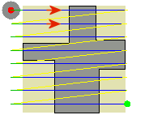 |
 |
Avalant |
Conventionnel |
Remarque: en fonction de la géométrie, il n'est pas toujours possible de maintenir un fraisage avalant ou conventionnel sur l'ensemble de la trajectoire d'outil.
Utiliser réduction de copeaux
Activez cette option et l'outil effectuera la coupe en roulant, ce qui permet de réduire la charge sur l'arête de coupe.
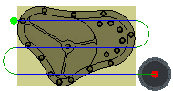 |
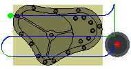 |
Désactivé |
Activé |
Des deux côtés
Activez cette option pour usiner à partir des deux côtés de la pièce lorsque plusieurs coupes en profondeur sont effectuées. Le recouvrement de départ est appliqué à partir de chaque côté de la pièce pour chaque passe de pas en Z.
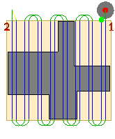 |
La passe 1 démarre à droite |
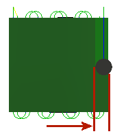 |
 |
Passe 1 - Recouvrement |
Passe 2 - Recouvrement |
Type de transition
Précise le type de connexion entre les passes.
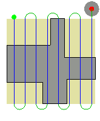 |
Transition lissée |
Transition droite |
Transition courte |
Aucun contact (non affiché): les passes ne sont pas connectées au même niveau Z. L'outil se retire entre chaque passe de connexion.
Direction
Vous permet de spécifier si le programme doit procéder à un fraisage en avalant ou en opposition du filetage.
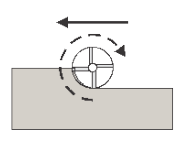 |
 |
Fraisage en opposition |
Fraisage en avalant |
Autres considérations.
La direction de coupe, le type de perçage (diamètre extérieur ou diamètre intérieur) et la direction du filetage (à gauche ou à droite) affectent le point de départ du filetage à la fraise. La coupe peut s'effectuer de haut en bas ou de bas en haut, selon ces paramètres.
Exemples:
Un filetage à droite effectué sur un diamètre extérieur (bossage) avec une coupe avalante entraînera un fraisage de haut en bas.
Un filetage à droite effectué sur un diamètre intérieur (perçage) avec une coupe avalante entraînera un fraisage de bas en haut.
 |
Utilisez le paramètre de direction de fraisage en avalant ou conventionnel pour contrôler la direction de la coupe (de haut en bas, ou inversement).
Direction
Conjointement avec le mode de tournage, ce paramètre détermine la direction de l'outil lors de la coupe.
 |
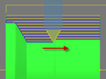 |
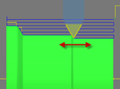 |
De l'avant vers l'arrière |
De l'arrière vers l'avant |
Dans les deux sens |
De l'avant vers l'arrière: sélectionnez cette option pour effectuer une coupe depuis la partie avant du brut vers la partie arrière, c'est-à-dire vers le mandrin principal.
De l'arrière vers l'avant: effectue une coupe de la partie arrière vers la partie avant, en s'éloignant du mandrin. Activez cette option pour les outils dont la géométrie est complexe et qui nécessitent un contrôle précis de l'amincissement des copeaux. Consultez l'option Utiliser la coupe arrière dans l'onglet Passes.
Dans les deux sens: cette option permet à l'outil d'effectuer des coupes dans les deux directions, pour un mouvement de coupe en va-et-vient. Si vous sélectionnez cette option, veillez à utiliser un outil approprié pouvant effectuer des coupes dans les deux directions.
Cycle
Conjointement avec le mode de tournage, ce paramètre détermine la direction de coupe de l'outil.
|
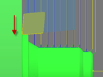 |
|
Passes horizontales |
Passes verticales |
Coupe arrière |
Horizontal: permet d'effectuer une coupe depuis la partie avant du brut vers la partie arrière, vers la broche principale.
Vertical: permet d'effectuer une coupe vers l'extérieur, vers le trait d'axe de l'usinage du diamètre extérieur. Permet d'effectuer une coupe depuis le trait d'axe, vers l'extérieur de l'usinage du diamètre intérieur.
Découpes arrières: pour les outils avec une géométrie particulière qui nécessitent de contrôler l'amincissement des copeaux. La découpe se fait du côté arrière vers l'avant du brut.
Coupe arrière
Pour les outils avec une géométrie particulière qui nécessitent de contrôler l'amincissement des copeaux. Cette option active des contrôles supplémentaires permettant de définir le raccordement '''Rayon d'entrée et Distance de sortie'''.
Cette option est uniquement disponible lorsque le type de cycle est défini sur Découpe arrière.
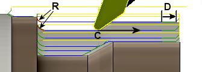 |
'''C = Direction de coupe – S'éloigner du mandrin |
Lorsque la trajectoire d'outil commence au plus près du mandrin, le rayon effectue un raccordement dans la coupe et avance dans une direction positive. À l'approche de la fin de la coupe, l'avance diminue pour éviter d'abîmer la pièce ou l'outil.
Coupe arrière
Activez cette option pour les outils dont la géométrie est complexe et qui nécessitent un contrôle précis de l'amincissement des copeaux. D'autres contrôles seront alors disponibles pour définir le raccordement Rayon de coupe arrière et l'option Distance de sortie de coupe arrière. Cette option est uniquement disponible lorsque la direction du mode de coupe est définie sur '''De l'arrière vers l'avant'''.
'''C = Direction de coupe – S'éloigner du mandrin |
Lorsque la trajectoire d'outil commence au plus près du mandrin, le rayon effectue un raccordement dans la coupe et avance dans une direction positive. À l'approche de la fin de la coupe, l'avance diminue pour éviter d'abîmer la pièce ou l'outil.
Rayon de coupe arrière
Ce rayon est utilisé pour le raccordement initial dans la coupe. Demandez à votre fournisseur la taille de raccordement adaptée. Il est généralement conseillé de commencer avec une taille égale ou supérieure à la Profondeur de passe maximum d'ébauche.
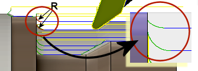 |
'''R = Rayon d'entrée de la coupe arrière''' |
Distance de sortie de coupe arrière
Précise la distance avant la fin de la passe à partir de laquelle l'avance diminue.
 |
D = Distance avant la fin de la coupe |
La diminution de l'avance avant la fin de la passee empêche l'endommagement de la pièce ou de l'outil. Cette option utilise le paramètre Avance de sortie disponible dans l'onglet Outils. Demandez à votre fournisseur la distance et l'avance adaptées.
Direction
 |
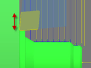 |
|
'''De l'extérieur vers l'intérieur''' |
De l'intérieur vers l'extérieur |
Dans les deux sens |
'''De l'extérieur vers l'intérieur''': sélectionnez cette option pour effectuer une coupe depuis la partie extérieure du brut vers le centre.
'''De l'intérieur vers l'extérieur''': sélectionnez cette option pour effectuer une coupe depuis le centre du brut vers la partie extérieure.
Dans les deux directions: cette option permet d'effectuer une coupe dans les deux directions lors d'une opération de profilage de face.
Direction
Précise si la matière doit être enlevée en effectuant un fraisage en avalant, en opposition ou en bi-directionnelle.
|
|
Fraisage en opposition |
Fraisage en avalant |
Comparaison du fraisage en avalant et du fraisage en opposition
Les outils de fraisage progressent de sorte que les dents de coupe entament la matière en tournant du niveau d'épaisseur maximale vers le niveau zéro. Cette opération est appelée fraisage en avalant.
Si l'opération est effectuée dans la direction opposée, l'outil "creuse" la matière, allant du niveau d'épaisseur zéro vers le niveau d'épaisseur maximale. Cette technique est appelée fraisage en opposition.
Le fraisage en opposition est souvent utilisé sur les machines manuelles car l'entredent des vis-mères de ces machines entraîne un mouvement brusque de l'outil si la méthode avalante est utilisée. Les machines CNC ne rencontrent pas ce problème, car elles utilisent des vis à billes.
Le fraisage en opposition provoque un frottement de l'outil contre la surface de coupe, ce qui entraîne un durcissement de la matière, crée des surchauffes et augmente l'usure de l'outil. La présence de copeaux à la surface réduit également la qualité de la finition.
Sauf recommandation contraire du fabricant de l'outil pour la matière à fraiser, utilisez toujours le fraisage en avalant sur une machine CNC. Cette technique génère beaucoup moins d'effort et de chaleur lors de la coupe, offre une meilleure finition de surface et accroît la durée de vie de l'outil.
REMARQUE: lorsque vous travaillez avec des matières fragiles, comme des matériaux acryliques, le fraisage en avalant permet aussi d'éviter que le matériau n'éclate le long des arêtes.
Surépaisseur radiale (paroi)
Le paramètre surépaisseur radiale permet de contrôler la quantité de matière à laisser dans le sens radial (perpendiculaire à l'axe de l'outil), c'est-à-dire sur le côté de l'outil.
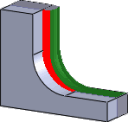 |
 |
Surépaisseur radiale |
Surépaisseur radiale et axiale |
Quand une surépaisseur radiale est définie positive, une certaine épaisseur de matière est laissée sur les parois verticales et sur les zones fortement inclinées de la pièce.
Pour les surfaces qui ne sont pas exactement verticales, le programme effectue une interpolation à partir des valeurs de surépaisseur axiale (sol) et radiale. Aussi la quantité de brut conservé sur ces surfaces dans le sens radial peut-elle être différente de la valeur spécifiée, selon l'inclinaison de la surface et la valeur de la surépaisseur axiale.
Lorsque vous modifiez la valeur de surépaisseur radiale, la surépaisseur axiale est automatiquement définie sur la même valeur, sauf si vous entrez manuellement une valeur de surépaisseur axiale.
Pour les opérations de finition, la valeur par défaut est de 0 mm/0 po, ce qui signifie qu'aucune épaisseur de matériau n'est conservée.
Pour les opérations d'ébauche, le système conserve par défaut une petite quantité de matériau, qui peut ensuite être supprimée par une ou plusieurs opérations de finition.
Surépaisseur négative
Quand une valeur de surépaiseur négative est définie, l'opération d'usinage élimine plus de matière sur le brut qu'il n'est nécessaire pour correspondre à la forme de votre modèle. Cette option peut être utilisée pour l'usinage d'une électrode, l'espace devant séparer les électrodes de la pièce correspondant ici à la valeur négative de la surépaisseur négative.
Les valeurs de surépaisseurs axiale et radiale peuvent être des nombres négatifs. Cependant, une valeur de surépaisseur radiale négative doit être inférieure au rayon de l'outil.
Lorsque vous utilisez une fraise boule ou avec un rayon de bout avec une valeur de surépaisseur radiale négative supérieure au rayon de bout d'outil, la valeur de surépaisseur axiale négative doit être inférieure ou égale à la valeur du rayon de bout d'outil.
Surépaisseur axiale (sol)
Le paramètre surépaisseur axiale permet de contrôler la quantité de matière à conserver dans le sens axial (le long de l'axe Z), c'est-à-dire à l'extrémité de l'outil.
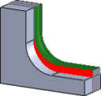 |
|
Surépaisseur axiale |
Surépaisseur radiale et axiale |
Quand une valeur de surépaisseur axiale positive est définie, une certaine épaisseur de matière est conservée sur les zones planes de la pièce.
Pour les surfaces qui ne sont pas exactement horizontales, le programme effectue une interpolation à partir des valeurs de surépaisseur axiale et radiale (paroi). Aussi la valeur de surépaisseur conservé sur ces surfaces dans le sens axial peut être différente de la valeur spécifiée, selon l'inclinaison de la surface et la valeur de surépaisseur radiale.
Lorsque vous modifiez la valeur de surépaisseur radiale, la surépaisseur axiale est automatiquement définie sur la même valeur, sauf si vous entrez manuellement une valeur de surépaisseur axiale.
Pour les opérations de finition, la valeur par défaut est de 0 mm/0 po, ce qui signifie qu'aucune épaisseur de matériau n'est conservée.
Pour les opérations d'ébauche, le système conserve par défaut une petite quantité de matériau, qui peut ensuite être supprimée par une ou plusieurs opérations de finition.
Surépaisseur négative
Quand une valeur de surépaiseur négative est définie, l'opération d'usinage élimine plus de matière sur le brut qu'il n'est nécessaire pour correspondre à la forme de votre modèle. Cette option peut être utilisée pour l'usinage d'une électrode, l'espace devant séparer les électrodes de la pièce correspondant ici à la valeur négative de la surépaisseur négative.
Les valeurs de surépaisseur radiale et axiale peuvent être des nombres négatifs. Cependant, lorsque vous utilisez une fraise boule ou avec un rayon de bout avec une valeur de surépaisseur radiale négative supérieure au rayon de bout d'outil, la valeur de surépaisseur axiale doit être inférieure ou égale à la valeur du rayon de bout d'outil.
Surépaisseur radiale
Détermine la quantité de matière à conserver dans la direction radiale.
Cette option permet de conserver du brut sur le diamètre intérieur ou extérieur de la pièce.
 |
 |
Surépaisseur radiale 1 mm |
Surépaisseur radiale 1 mm |
 |
Surépaisseur radiale 0,0 |
 |
Surépaisseur radiale et axiale -1 mm |
Pour les surfaces qui ne sont pas exactement horizontales, le programme effectue une interpolation à partir des valeurs de surépaisseur axiale (paroi) et radiale. La quantité de brut conservé sur ces surfaces dans la direction radiale peut dès lors être différente de la valeur spécifiée, selon l'inclinaison de la surface et la valeur de surépaisseur axiale.
La modification de la valeur de l'option Surépaisseur radiale permet de définir automatiquement l'option Surépaisseur axiale sur la même valeur. Vous pouvez saisir manuellement une autre valeur pour la surépaisseur axiale.
Si vous envisagez d'effectuer l'ébauche et les finitions à l'aide d'outils différents, définissez l'opération d'ébauche avec une surépaisseur à laisser pour la prochaine opération de finition.
Surépaisseur négative Vous pouvez utiliser une valeur négative. L'outil usinera la matière au-delà des limites de la forme du modèle.
REMARQUE: la valeur maximale de surépaisseur négative doit être inférieure à la valeur du rayon de plaquette.
Avec un rayon de plaquette de .032, la valeur maximale de surépaisseur négative est de -.032.
Vous ne pouvez pas effectuer de compensation au-delà de la pointe théorique de l'outil.
Surépaisseur axiale
Détermine la quantité de matière à conserver sur les faces verticales en cours de tournage.
 |
 |
Surépaisseur axiale 1 mm |
Surépaisseur axiale 1 mm |
|
Surépaisseur axiale 0,0 |
|
Surépaisseur radiale et axiale -1 mm |
Pour les surfaces qui ne sont pas exactement verticales, le programme effectue une interpolation à partir des valeurs de surépaisseur axiale (paroi) et radiale. La quantité de brut conservé sur ces surfaces dans la direction axiale peut dès lors être différente de la valeur spécifiée, selon l'inclinaison de la surface et la valeur de surépaisseur radiale.
La modification de la valeur de l'option Surépaisseur radiale permet de définir automatiquement l'option Surépaisseur axiale sur la même valeur. Vous pouvez saisir manuellement une autre valeur pour la surépaisseur axiale.
Si vous envisagez d'effectuer l'ébauche et les finitions à l'aide d'outils différents, définissez l'opération d'ébauche avec une surépaisseur à laisser pour la prochaine opération de finition.
Surépaisseur négative Vous pouvez utiliser une valeur négative. L'outil usinera la matière au-delà des limites de la forme du modèle.
REMARQUE: la valeur maximale de surépaisseur négative doit être inférieure à la valeur du rayon de plaquette.
Avec un rayon de plaquette de .032, la valeur maximale de surépaisseur négative est de -.032.
Vous ne pouvez pas effectuer de compensation au-delà de la pointe théorique de l'outil.
Surépaisseur de finition X
Détermine la quantité de matière à conserver dans la direction radiale.
Cette option permet de conserver du brut sur le diamètre intérieur ou extérieur de la pièce.
|
|
Brut X de 1 mm |
Brut X de 1 mm |
|
Brut X de 0.0 |
|
Brut X et Z - 1 mm |
Pour les surfaces qui ne sont pas exactement horizontales, le programme effectue une interpolation à partir des valeurs de surépaisseur axiale (paroi) et radiale. La quantité de brut conservé sur ces surfaces dans la direction radiale peut dès lors être différente de la valeur spécifiée, selon l'inclinaison de la surface et la valeur de surépaisseur axiale.
La modification de la valeur de l'option Surépaisseur X permet de définir automatiquement l'option Surépaisseur Z sur la même valeur. Vous pouvez saisir manuellement une autre valeur pour le brut axial.
Si vous envisagez d'effectuer l'ébauche et les finitions à l'aide d'outils différents, définissez l'opération d'ébauche avec une surépaisseur à laisser pour la prochaine opération de finition.
Surépaisseur négative Vous pouvez utiliser une valeur négative. L'outil usinera la matière au-delà des limites de la forme du modèle.
REMARQUE: la valeur maximale de surépaisseur négative doit être inférieure à la valeur du rayon de plaquette.
Avec un rayon de plaquette de .032, la valeur maximale de surépaisseur négative est de -.032.
Vous ne pouvez pas effectuer de compensation au-delà de la pointe théorique de l'outil.
Surépaisseur de finition Z
Détermine la quantité de matière à conserver dans la direction axiale.
Permet de conserver le brut sur les faces verticales en cours de tournage.
|
|
Brut Z de 1 mm |
Brut Z de 1 mm |
|
Brut Z de 0.0 |
|
Surépaisseur radiale et axiale -1 mm |
Pour les surfaces qui ne sont pas exactement verticales, le programme effectue une interpolation à partir des valeurs de surépaisseur axiale (paroi) et radiale. La quantité de brut conservé sur ces surfaces dans la direction axiale peut dès lors être différente de la valeur spécifiée, selon l'inclinaison de la surface et la valeur de surépaisseur radiale.
La modification de la valeur de l'option Surépaisseur X permet de définir automatiquement l'option Surépaisseur Z sur la même valeur. Vous pouvez saisir manuellement une autre valeur pour le brut axial.
Si vous envisagez d'effectuer l'ébauche et les finitions à l'aide d'outils différents, définissez l'opération d'ébauche avec une surépaisseur à laisser pour la prochaine opération de finition.
Surépaisseur négative Vous pouvez utiliser une valeur négative. L'outil usinera la matière au-delà des limites de la forme du modèle.
REMARQUE: la valeur maximale de surépaisseur négative doit être inférieure à la valeur du rayon de plaquette.
Avec un rayon de plaquette de .032, la valeur maximale de surépaisseur négative est de -.032.
Vous ne pouvez pas effectuer de compensation au-delà de la pointe théorique de l'outil.
Prolonger jusqu'au brut
Lorsque cette option est activée, elle applique la surépaisseur de finition (définie par surépaisseur') au brut en plus du modèle. Cela signifie que la trajectoire d'outil ne plonge plus en sortie de l'épaulement d'un modèle. Au lieu de cela, elle se poursuit en ligne droite, laissant ainsi une surépaisseur de finition sur le brut.
Lorsque cette option est désactivée, la surépaisseur de finition est appliquée uniquement au modèle.
 |
 |
Activé |
Désactivé |
Décalage supplémentaire
Le décalage supplémentaire est appliqué aux limites sélectionnées et à la zone de limitation de l'outil.
Une valeur positive décale la limite vers l'extérieur, sauf si la zone de limitation de l'outil est ''à l'intérieur'', auquel cas une valeur positive crée un décalage vers l'intérieur.
 |
 |
 |
Décalage négatif |
Aucun Décalage |
Décalage positif |
Pour vous assurer que le bord de l'outil chevauche la limite, sélectionnez la méthode de limitation de l'outil ''à l'extérieur'' et indiquez par une petite valeur positive.
Pour vous assurer que le bord de l'outil n'empiète aucunement sur la limite, sélectionnez la méthode de limitation de l'outil ''à l'intérieur'' et indiquez par une petite valeur positive.
Surépaisseur
 |
 |
 |
Positive |
Aucune |
Négative |
Surépaisseur positive: quantité de brut restant pour effectuer les opérations d'ébauche ou de finition suivantes.
Surépaisseur nulle: retire toute la matière jusqu'à la géométrie ou jusqu'au modèle de pièce sélectionné.
'Valeur de surépaisseur négative: retire la matière au-delà de la géométrie ou du modèle de pièce sélectionné. Cette technique est souvent employée pour l'usinage d'électrodes afin de prendre en compte le gap ou de répondre aux exigences de tolérance d'une pièce.
Surépaisseur
 |
 |
 |
Positive |
Aucune |
Négative |
Surépaisseur positive: quantité de brut restant pour effectuer les opérations d'ébauche ou de finition suivantes.
Surépaisseur nulle: retire toute la matière jusqu'à la géométrie ou jusqu'au modèle de pièce sélectionné. Il s'agit de la valeur par défaut.
Valeur de surépaisseur négative: retire toute la matière au-delà de la géométrie ou du modèle de pièce sélectionné.
Géométrie
Permet de sélectionner les positions de perçage à partir de points (sommets, points d'esquisse, etc.), d'esquisses contenant des points, d'arcs (arêtes de solide ou d'esquisse) ou de faces cylindriques.
Supprimer les perçages en double
Précise que les perçages en double doivent être supprimés.
Profondeurs dans l'ordre
Précise que les passes doivent être effectuées de haut en bas.
 |
 |
Désactivé |
Activé |
Profondeurs dans l'ordre
Lorsque cette option est activée, l'intégralité d'une courbe est coupée avant de procéder à la coupe de la courbe suivante.
 |
2 courbes d'arête sélectionnées |
 |
Activé |
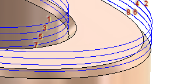 |
Désactivé |
Sélections de l'emplacement de perçage
Vous pouvez sélectionner des emplacements de perçage par face du modèle, arête de perçage, point d'esquisse, cercle d'esquisse ou plage de tailles du diamètre.
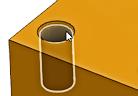 |
 |
Sélection de face |
Sélection d'arête |
 |
 |
Sélection de point d'esquisse |
Sélection de cercle d'esquisse |
Mode de perçage
Détermine ce que vous pouvez sélectionner pour les emplacements de perçage.
Faces sélectionnées - Sélection basée sur le modèle.
 |
|
Sélection de face cylindrique |
Sélection de face de chanfrein |
Points sélectionnés - Sélection basée sur la géométrie.
|
|
|
Sélection d'arête de fonction |
Sélection de point d'esquisse |
Sélection de cercle d'esquisse |
Plage de diamètres – Sélection par taille
Le système évalue le modèle selon les valeurs de diamètre maximum et minimum. Utilisez cette plage de données pour inclure ou exclure certaines tailles de perçage.
Exemple: vous pouvez sélectionner tous les trous dont le diamètre est compris entre 0.250 et -0.2501 pour les perçages, et tous ceux compris entre 0.2505 et -0.2506 pour les alésages.
L'utilisation de sélections basées sur un modèle garantit l'associativité aux éventuelles modifications ultérieures apportées à la fonction.
Remarque: options de pré-perçage
* Si vous sélectionnez la face chanfreinée et modélisée d'un perçage, la hauteur sur le fond (profondeur) sera automatiquement définie sur l'extrémité théorique de l'outil.
* Si vous sélectionnez une plage de diamètres qui inclut tous les perçages, définissez la hauteur sur le fond sur la valeur de largeur du chanfrein.
Faces des perçages
Indique le nombre de faces sélectionnées pour le perçage.
Faces sélectionnées - Sélection basée sur le modèle.
|
|
Sélection de face cylindrique |
Sélection de face de chanfrein |
Remarque: pour sélectionner la géométrie, définissez le mode de perçage sur Points sélectionnés.
Points de perçage
Indique le nombre de points, de cercles ou d'arêtes sélectionnés pour le perçage.
Points sélectionnés - Sélection basée sur la géométrie.
|
|
|
Sélection d'arête de fonction |
Sélection de point d'esquisse |
Sélection de cercle d'esquisse |
Remarque: pour sélectionner des fonctions de modèle, définissez le mode de perçage sur Faces sélectionnées.
L'utilisation de sélections basées sur un modèle garantit l'associativité aux éventuelles modifications ultérieures apportées à la fonction.
Diamètre de perçage minimum
Permet de définir une plage pour sélectionner le plus petit diamètre du modèle. Vous n'avez ainsi plus besoin de sélectionner individuellement les fonctions dans le modèle.
Cette option est très pratique pour les opérations de pré-perçage et de perçage de centrage qui nécessitent de sélectionner différents perçages.
Conseil: pour réaliser un pré-perçage et créer un chanfrein, sélectionnez une plage de perçages à inclure. Définissez la hauteur sur le fond sur la valeur de largeur du chanfrein.
Diamètre de perçage maximum
Permet de définir une plage pour sélectionner le plus grand diamètre du modèle. Vous n'avez ainsi plus besoin de sélectionner individuellement les fonctions dans le modèle.
Cette option est très pratique pour les opérations de pré-perçage et de perçage de centrage qui nécessitent de sélectionner différents perçages.
Conseil: pour réaliser un pré-perçage et créer un chanfrein, sélectionnez une plage de perçages à inclure. Définissez la hauteur sur le fond sur la valeur de largeur du chanfrein.
Même diamètre
Cochez cette case afin de sélectionner tous les perçages possédant le même diamètre que la fonction sélectionnée.
Exemple: Si vous activez cette option, sélectionnez un perçage unique de 6 mm et un autre perçage unique de 12 mm. Tous les perçages situés à 6 mm et à 12 mm sur la pièce seront automatiquement sélectionnés.
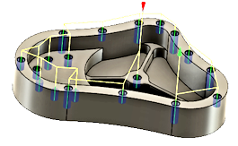 |
Une sélection unique peut détecter des perçages correspondants. |
Remarque: cette option est associée au modèle. Si des perçages supplémentaires de même diamètre sont ajoutés au modèle, les nouveaux perçages seront automatiquement inclus si cette opération est renouvelée.
Limite de confinement
Utilisez cette option conjointement avec les options Sélectionner diamètre identique et Plage de diamètres afin d'inclure des éléments similaires dans les zones de confinement. Sélectionnez une limite d'arête ou d'esquisse pour inclure les emplacements de perçage. Utilisez plusieurs limites ou limites imbriquées de manière à inclure ou à exclure des groupes de perçages. La trajectoire d'outil figurera dans la limite sélectionnée, sauf si les limites sont imbriquées. Vous pouvez imbriquer plusieurs limites les unes dans les autres.
Dans les exemples ci-dessous, les limites sélectionnées sont affichées en bleu.
 |
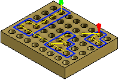 |
Limites d'esquisse |
Les perçages situés à l'intérieur sont inclus |
 |
 |
Limites imbriquées |
Les zones à l'intérieur sont exclues |
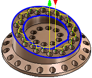 |
 |
Sélection de la zone du bord uniquement |
Exclusion de la zone du bord |
Même profondeur
Cochez cette case afin de sélectionner tous les perçages qui partagent la même distance entre les parties supérieure et inférieure que la fonction sélectionnée.
Exemple: Vous pouvez utiliser cette option pour distinguer les perçages tauraudés de 6 mm des perçages lisses de profondeurs différentes.
Perçages de 6 mm de faible profondeur sélectionnés
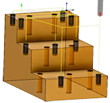 |
 |
Vue isométrique de faible profondeur |
Vue avant de faible profondeur |
Perçages de 6 mm de grande profondeur sélectionnés
 |
 |
Vue isométrique de grande profondeur |
Vue avant de grande profondeur |
Même hauteur sur le Z maxi uniquement
Cochez cette case afin de sélectionner tous les perçages qui partagent la même hauteur sur le Z maxi que la fonction sélectionnée.
La flèche indique la fonction de perçage sélectionnée.
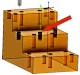 |
 |
Tous les perçages de faible profondeur |
Tous les perçages de faible profondeur |
Fusionner automatiquement les segments de perçage
Cochez cette case afin de fusionner plusieurs segments de perçage. Lorsque cette option est activée, tous les segments de perçage sont inclus afin de déterminer la hauteur de départ pour le perçage.
Exemple: Si un perçage a déjà subi une opération de type Foret à pointer ou Lamage, vous pouvez avoir besoin de démarrer le perçage à partir d'un dégagement situé au-dessus de cette zone usinée. Si vous activez l'option Fusionner automatiquement, le perçage est démarré au-dessus du segment de perçage le plus élevé.
 |
Gauche: "Fusionner automatiquement" dés. - Droite: "Fusionner automatiquement" act. |
Profondeurs dans l'ordre
Perçages comportant plusieurs hauteurs de départ Z.
Modifie l'ordre de tri, de la hauteur la plus élevée à la moins élevée, ou de la moins élevée à la plus élevée. Si cette option est désactivée, l'ordre défini est le suivant: perçages à la hauteur Z la plus élevée, puis descente progressive vers les hauteurs inférieures. Cochez cette case afin d'inverser cet ordre.
 |
 |
Lorsque cette option est désactivée |
Lorsque cette option est activée |
Ordre
Précise l'ordre des trous pour l'usinage. Des mouvements de perçage optimisés permettent de réduire la durée du cycle.
 |
 |
Ordre sélectionné |
Ordre optimisé |
 |
De l'intérieur vers l'extérieur |
 |
 |
Trier suivant X |
Trier suivant Y |
Inverser l'ordre
Activez cette option pour changer l'ordre des trajectoires d'outil et démarrer depuis la fin.
|
 |
Désactivé |
Activé |
Pointe du foret débouchante
Lorsque cette option est activée, la pointe de l'outil effectue un perçage au-delà du fond du perçage. La lèvre du perçage est positionnée sur le diamètre complet au bas du perçage.
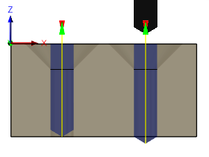 |
Profondeur vers la pointe - Profondeur vers la lèvre. |
Remarque: lorsqu'un perçage est effectué dans la partie inférieure de la pièce, prêtez une attention particulière au bridage ou à la matière sous cette pièce.
Profondeur de perçage
Précise la distance supplémentaire à laquelle la lèvre de l'outil effectue le perçage pour assurer une coupe nette à travers la pièce.
Gauche: perçage à 0.0 - Droite: perçage à 0.06 |
Remarque: lorsqu'un perçage est effectué dans la partie inférieure de la pièce, prêtez une attention particulière au bridage ou à la matière sous cette pièce.
Type de cycle
Lorsque vous sélectionnez le type de cycle de perçage, les paramètres pouvant être utilisés pour l'opération de perçage sont modifiés en conséquence. Le type de cycle de perçage apparaît ici avec le G-Code associé.
- Perçage: Avance jusqu'à la profondeur et sortie rapide - Destiné aux perçages dont les profondeurs représentent moins de 3 fois le diamètre de l'outil. (G81)
- Lamage: Avance jusqu'à la profondeur, temporisation et sortie rapide - La temporisation permet d'améliorer la finition inférieure d'un perçage. (G82)
- Brise-copeaux: Utilise plusieurs remonter d'outil en vue de briser les copeaux et/ou d'injecter du lubrifiant dans le perçage. Destiné aux perçages dont la profondeur est plus de trois fois supérieure au diamètre de l'outil. (G73)
- Perçage en profondeur: Similaire à l'option Brise-copeaux, mais l'outil se retire complètement du perçage pour enlever les copeaux et/ou injecter du lubrifiant. Cette technique est aussi appelée Perçage avec débourrage. (G83)
- Perçage: Permet de réduire l'avance et la vitesse avant d'entamer un perçage.
- Perçage en profondeur guidé: Le foret possède une seule arête de coupe. Le canon de guidage permet que le foret reste droit sur une grande profond et ainsi garder la précision sur le diamètre.
- Taraudage: taraude des filetages à droite ou à gauche en fonction de l'outil sélectionné.
- Taraudage à gauche: Avance jusqu'à la profondeur, inversion de la broche, alésoir - Pénètre dans le perçage dans le sens inverse des aiguilles d'une montre pour effectuer le filetage. (G74)
- Taraudage à droite: Avance jusqu'à la profondeur, inversion de la broche, alésoir - Pénètre dans le perçage dans le sens des aiguilles d'une montre pour effectuer le filetage. (G84)
- Taraudage avec brise-copeaux: L'outil avance et se rétracte à plusieurs reprises, plus profondément à chaque fois, jusqu'à atteindre la profondeur finale.
- Alésage: L'outil avance et se rétracte immédiatement lorsqu'il atteint la profondeur finale. (G85)
- Alésage: Avance jusqu'à la profondeur, temporisation, alésoir. (G86)
- Alésage indexé: Avance jusqu'à la profondeur, arrêt de la broche, sortie rapide. (G87)
- Alésage fin: Avance jusqu'à la profondeur, arrêt de la broche, décalage à partir de la paroi, sortie rapide. (G76)
- Contre-perçage: Alésage depuis l'arrière d'un perçage existant. (G77)
- Fraisage de poche circulaire: Permet d'utiliser un cycle personnalisé pour la création de poches circulaires.
- Alésage à la fraise: Permet d'utiliser un cycle personnalisé pour le fraisage d'alésages hélicoïdaux.
- Filetage à la fraise: Permet d'utiliser un cycle personnalisé pour le fraisage de filetages hélicoïdaux.
- Palpage: permet d'utiliser une macro de palpage à partir de la machine. Requiert des post-processeurs personnalisés. Reportez-vous à la fonction de palpage avancée du menu déroulant de Posage.
Profondeur du perçage avec débourrage
Dans le cadre d'un perçage avec débourrage, définit la profondeur du premier mouvement de perçage, par lequel l'outil pénètre dans la matière et en ressort pour éliminer et briser les copeaux.
Profondeur cumulée du perçage avec débourrage
Précise la profondeur de débourrage qui forcera un retrait complet.
Décalage de l'alésoir
Définit la distance à laquelle une barre d'alésage est autorisée à s'écarter de la paroi de la trajectoire d'outil avant qu'il soit retiré, afin d'éviter tout creusement dans la pièce. Cette option s'applique uniquement aux cycles de perçage avec barre d'alésage.
Compensation latérale
Ce paramètre détermine le côté de la trajectoire d'outil à partir duquel le centre de l'outil est décalé. Sélectionnez la correction latérale Gauche (fraisage en avalant) ou Droite (fraisage opposition).
|
|
Fraisage en avalant |
Fraisage en opposition |
Comparaison du fraisage en avalant et du fraisage en opposition
Avec le fraisage en avalant, l'outil de coupe roule en quelque sorte sur la surface faisant l'objet de la coupe. Cette technique permet généralement d'obtenir une meilleure finition pour la plupart des métaux, mais nécessite une bonne rigidité de la machine. Avec cette méthode, les premiers copeaux sont à l'épaisseur maximale, et cette dernière diminue ensuite à mesure que l'opération de coupe progresse. Ainsi, les copeaux retiennent davantage de chaleur que la pièce.
Avec le fraisage classique, l'outil de coupe avance dans le sens inverse de sa rotation sur la surface faisant l'objet de la coupe. Cette méthode est plus couramment employée avec des machines manuelles ou moins rigides. Elle présente certains avantages et peut même permettre d'obtenir une meilleure finition lors de l'usinage de matières spécifiques, notamment certains bois.
Type de correction
Précise le type de correction.
- Dans l'ordinateur: la correction de l'outil est calculée automatiquement par le programme, en fonction du diamètre d'outil sélectionné. Les résultats du post-traitement indiquent directement la trajectoire corrigée, au lieu des codes G41/G42.
- Dans l'armoire: la correction de l'outil ''n'est pas'' calculée et les codes G41/G42 sont affichés pour permettre à l'opérateur de définir les valeurs de correction et d'usure sur les commandes de la machine.
- Usure: offre les mêmes résultats que lorsque Via ordinateur est sélectionné, mais affiche également les codes G41/G42. L'opérateur peut ainsi régler la compensation de l'usure de l'outil au niveau des commandes de la machine-outil en saisissant la différence de taille d'outil sous forme de valeur négative.
- Usure inverse : identique à l'option Usure, à la seule différence que la valeur de correction de l'usure est indiquée sous forme de nombre positif.
Veuillez noter que la '' via commandes (y compris avec les options Usure et Usure inverse) n'est appliquée qu'aux passes de finition.
Compensation latérale
Détermine comment décaler la coupe par rapport à l'arête sélectionnée.
 |
Exemples de décalages de coupe à gauche, à droite et au centre. |
- Gauche: compense le côté gauche de l'arête sélectionnée.
- Droite: compense le côté droit de l'arête sélectionnée.
- Centre: place la tête de l'outil de coupe directement sur l'arête sélectionnée.
Lorsque l'option Gauche est sélectionnée, la tête est éloignée de l'arête, selon ces règles.
* Pour une coupe extérieure, avec une sélection en chaîne dans le sens horaire.
* Pour une coupe intérieure, avec une sélection en chaîne dans le sens anti-horaire.
La modification de la direction de la coupe requiert une direction de correction vers la droite.
REMARQUE: utilisez le paramètre Centre pour les gravures.
Cela permet de maintenir la tête directement sur la chaîne sélectionnée.
Type de correction
Précise le type de correction.
* Dans l'ordinateur: la position de la tête est calculée par le programme, selon le diamètre du trait et la direction de correction latérale. Le résultat du post-traitement contient la véritable position corrigée pour couper la pièce à la taille souhaitée.
L'ordinateur compense la largeur du trait.
* Dans l'armoire: la position de la tête est déterminée sur la base des véritables coordonnées de la chaîne sélectionnée. La correction ''n'est pas'' calculée, mais, à la place, des codes de correction sont générés pour permettre à l'opérateur de définir la valeur de décalage sur la commande de la machine-outil.
La commande de la machine compense la largeur du trait.
Type de correction
Précise le type de correction.
- Dans l'ordinateur: la correction de l'outil est calculée automatiquement par le programme, en fonction du diamètre d'outil sélectionné. Les résultats du post-traitement indiquent directement la trajectoire corrigée, au lieu des codes G41/G42.
- Dans l'armoire: la correction de l'outil ''n'est pas'' calculée et les codes G41/G42 sont affichés pour permettre à l'opérateur de définir les valeurs de correction et d'usure sur les commandes de la machine.
- Usure: offre les mêmes résultats que lorsque Via ordinateur est sélectionné, mais affiche également les codes G41/G42. L'opérateur peut ainsi régler la compensation de l'usure de l'outil au niveau des commandes de la machine-outil en saisissant la différence de taille d'outil sous forme de valeur négative.
- Usure inverse : identique à l'option Usure, à la seule différence que la valeur de correction de l'usure est indiquée sous forme de nombre positif.
Recouvrement maximum
Précise la prise de passe maximale pour chaque passe.
 |
Recouvrement maximum |
Nombre de recouvrements
Indique le nombre maximum de recouvrements.
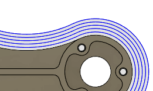 |
Nombre de recouvrements |
Recouvrement maximum
Précise la prise de passe axiale maximale.
 |
REMARQUE: ce paramètre est DIFFÉRENT de ceux de charge optimale avec les trajectoires d'évidement adaptatif. Avec l'ébauche 2D hérité, l'outil voit toujours l'insertion de coupe complète entre deux passes.
 |
 |
Évidement adaptatif |
Évidement 2D hérité |
Déviation de lissage
Valeur maximale de lissage appliquée lors des passes d'ébauche. Utilisez ce paramètre pour éviter les angles aigus dans la trajectoire d'outil.
 |
Tolérance d'angle
Valeur maximale d'écart par rapport aux angles. Utilisez ce paramètre pour éviter les angles aigus dans la trajectoire d'outil.
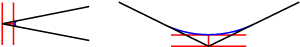 |
Déviation de lissage
Valeur maximale de lissage appliquée lors des passes d'ébauche. Utilisez ce paramètre pour éviter les angles aigus dans la trajectoire d'outil.
|
Passes de finition
 |
 |
Avec passes de finition |
Sans passes de finition |
Activez cette option pour effectuer des passes de finition à l'aide du côté de l'outil.
REMARQUE: cette option est généralement utilisée lorsque le travail d'ébauche et de finition est effectué avec le même outil.
Passes de finition
Activez cette option pour effectuer le nombre de passes de finition spécifié.
 |
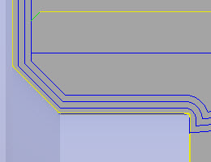 |
Passes de finition désactivées |
Passes de finition activées |
Passes de finition
Activez cette option pour effectuer le nombre de passes de finition spécifié.
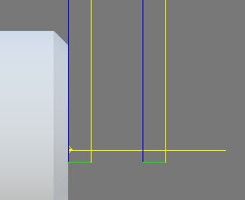 |
|
Passes de finition désactivées |
Passes de finition activées |
Passes de finition
Cette option est uniquement disponible lorsque l'option Passes d'ébauche est activée. Sur les images ci-dessous, l'option Passes d'ébauche est également activée, ce qui donne l'impression qu'il existe deux passes de finition. Astuce: l'utilisation de cette technique peut supprimer la nécessité de réaliser une opération de finition secondaire.
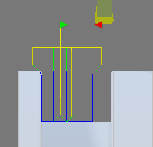 |
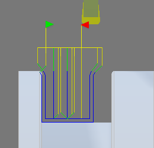 |
Passes de finition désactivées |
Passe de finition de 0,75 mm |
Recouvrement
Détermine le recouvrement maximum pour chaque coupe, lorsque vous effectuez des passes de finition multiples.
|
Recouvrement de finition |
Nombre de passes de finition
Indique le nombre de passes de finition.
 |
Exemple avec trois passes de finition |
Entrées/sorties sur toutes les passes de finition
Force une entrée et une sortie complètes à chaque passe de finition.
 |
 |
Activé |
Désactivé |
REMARQUE: les paramètres d'Entrée-Sortie peuvent être définis dans l'onglet Liaison entre passes de la boîte de dialogue Opérations.
Répéter la passe de finition
Activez cette option pour effectuer une autre passe de finition avec zéro (0.0) brut.
Efface le brut restant suite à la déviation de l'outil.
Aussi appelée Passe à vide.
Aucun glissement
Lorsque cette option est sélectionnée, les déplacements qui appliquaient une pression négative sur l'insert sont éliminés. Elle supprime également les coupes vers le haut des faces et parois verticales. Avant d'atteindre la fin de la coupe, l'outil se rétracte et change de position de façon à appliquer la coupe vers le bas de la paroi depuis l'extérieur.
 |
 |
Option Aucun glissement désactivée |
Option Aucun glissement activée |
Aucune limite de glissement
Indique l'angle minimal entre la face de la pièce et l'arête de découpe de l'insert, déclenchant alors les actions de la trajectoire d'outil Aucun glissement.
 |
Angle minimum |
Aucun dégagement de glissement
Indique la distance à laquelle s'arrêter avant d'atteindre la face de fin. L'outil se rétracte et change de direction de coupe.
Distance à partir de la face de glissement |
Aucun recouvrement de glissement
Indique la distance de recouvrement de la dernière passe, avant le retrait.
 |
Recouvrement de passe |
Passe à vide
Activez cette option pour effectuer la dernière passe de finition deux fois, afin de supprimer toute matière laissée par une flexion de l'outil.
Profondeurs multiples
Indique que des perçages doivent être effectués à plusieurs profondeurs.
 |
 |
Avec perçages à plusieurs profondeurs |
Sans perçages à plusieurs profondeurs |
NOTE: les stratégies d'évidement adaptatif permettent de réaliser des trajectoires bien plus profondes que les poches 2D héritées.
Profondeurs multiples
Activez cette option pour spécifier la passe qui réalisera plusieurs coupes en profondeur.
 |
Désactivé |
 |
Activé |
 |
Activé |
Profondeur de passe maximum d'ébauche
Indique la valeur de pas en Z maximale entre deux niveaux Z pour les opérations d'ébauche.
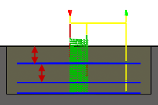 |
Profondeur de passe maximum d'ébauche |
Remarque: plusieurs pas en Z séquentiels sont effectués selon la valeur du paramètre Profondeur de passe maximum d'ébauche. Lorsque la valeur de brut restant est inférieure à la valeur de la Profondeur de passe maximum d'ébauche, le pas en Z d'ébauche final est utilisé pour retirer le brut restant.
Pas en Z maximum
Indique le pas en Z maximum entre des niveaux Z utilisée pour effectuer plusieurs coupes en profondeur.
|
Pas en Z maximum de 0.020 po. |
|
Pas en Z maximum de 0.020 po. |
Profondeur de passe maximum d'ébauche
Contrôle la quantité maximale à supprimer pour chaque passe d'ébauche. Une valeur plus importante permet de supprimer davantage de matière lors de chaque passe d'ébauche. Une valeur plus faible permet de réduire la quantité de contrainte appliquée sur l'outil.
 |
 |
Coupe de 2 mm plus petite |
Coupe de 4 mm plus grande |
Profondeur de la coupe
Contrôle la quantité maximale à supprimer pour chaque passe d'ébauche. Une valeur plus importante permet de supprimer davantage de matière lors de chaque passe d'ébauche. Une valeur plus faible permet de réduire la quantité de contrainte appliquée sur l'outil.
|
|
Coupe de 2 mm plus petite |
Coupe de 4 mm plus grande |
Pas en Z maximum
Indique la valeur de pas en Z maximale entre deux niveaux Z.
Pas en Z maximum
Indique la valeur de pas en Z maximale entre deux niveaux Z.
Nombre de passes de finition en Z
Nombre de passes de finition à la profondeur de coupe maximale de l'outil.
 |
Exemple avec trois passes de finition |
Profondeur de passe de finition
Valeur de chaque pas en Z pour les passes de finition.
 |
Profondeur de passe de finition |
Angle de dépouille de paroi
Spécifie l'angle de dépouille des parois.
La définition d'un angle d'inclinaison permet d'utiliser une stratégie 2D pour réaliser des opérations d'usinage qui auraient autrement nécessité une stratégie 3D.
REMARQUE: l'angle d'inclinaison N'EST PAS déterminé par la géométrie du modèle. Une erreur de saisie de l'angle d'inclinaison peut entraîner une modification de la pièce usinée.
 |
 |
Angle d'inclinaison à 0 degrés |
Angle d'inclinaison à 45 degrés |
Sélection de géométrie
 |
 |
Sélection à partir du bas |
Sélection à partir du haut |
REMARQUE lorsque vous définissez un angle d'inclinaison avec la stratégie d'évidement adaptatif, la géométrie doit être sélectionnée à partir du haut de la poche.
Finition uniquement à la profondeur finale
Effectue les passes de finition uniquement à la profondeur finale pour éviter de laisser des marques sur les parois.
 |
 |
Désactivé |
Activé |
Engagement axial minimal
Indique l'engagement axial minimal autorisé pour les pas intermédiaires.
Cette fonction est fréquemment utilisée de manière à ce qu'au moins une dent soit constamment engagée lors du tournage, ce qui permet par conséquent de réduire l'usure et le broutage de l'outil.
REMARQUE: si vous ignorez les pas intermédiaires, vous aurez davantage de brut pour l'opération de semi-ébauche suivante.
Tolérance
La tolérance est la somme des tolérances utilisées pour la génération de la trajectoire d'outil et la triangulation de la géométrie. Toute tolérance de filtrage supplémentaire doit être ajoutée à celle-ci pour obtenir la tolérance totale.
 |
 |
Tolérance large 0,100 |
Tolérance stricte 0,001 |
Le déplacement de délimitation de contour des machines CNC est déterminé par la commande de ligne G1 et les commandes d'arc G2 et G3. Aussi, le système de FAO calcule une approximation des trajectoires de spline et de surface en les linéarisant, c'est-à-dire en utilisant plusieurs segments courts pour obtenir à peu près la forme voulue. La correspondance entre la trajectoire d'outil et la forme désirée dépend pour beaucoup du nombre de lignes utilisées. Plus vous utilisez de lignes, plus la trajectoire d'outil est proche de la forme nominale de la spline ou de la surface.
Surcharge de données
Il est tentant de toujours utiliser des tolérances strictes, mais cette option présente aussi des inconvénients, comme un accroissement du temps de calcul des trajectoires d'outil, une augmentation de la taille des fichiers de code G et l'utilisation de mouvements linéaires très courts. Les deux premiers aspects ne sont pas très problématiques, car le programme calcule très rapidement et la plupart des commandes disposent d'au moins 1 Mo de mémoire vive. En revanche, l'application de mouvements de petite amplitude, associés à des vitesses d'avance élevées, peut entraîner un phénomène appelé surcharge de données.
On parle de surcharge lorsque la commande est submergée de données, au point qu'elle ne peut pas suivre. Les commandes CNC ne peuvent traiter qu'un nombre fini de lignes de code (blocs) par seconde. Cette valeur peut ne pas dépasser 40 blocs/s sur d'anciennes machines ou 1 000 blocs/s sur les machines Haas Automation. L'application de mouvements linéaires de faible amplitude à des vitesses d'avance élevées peut demander une vitesse de traitement excédant les capacités de gestion de la commande. Lorsque cela se produit, la machine doit s'interrompre après chaque mouvement et attendre la servocommande suivante.
Tolérance
La tolérance est la somme des tolérances utilisées pour la génération de la trajectoire d'outil et la triangulation de la géométrie. Toute tolérance de filtrage supplémentaire doit être ajoutée à celle-ci pour obtenir la tolérance totale.
|
|
Tolérance large 0,100 |
Tolérance stricte 0,001 |
Le déplacement de délimitation de contour des machines CNC est déterminé par la commande de ligne G1 et les commandes d'arc G2 et G3. Aussi, le système de FAO calcule une approximation des trajectoires de spline et de surface en les linéarisant, c'est-à-dire en utilisant plusieurs segments courts pour obtenir à peu près la forme voulue. La correspondance entre la trajectoire d'outil et la forme désirée dépend pour beaucoup du nombre de lignes utilisées. Plus vous utilisez de lignes, plus la trajectoire d'outil est proche de la forme nominale de la spline ou de la surface.
Surcharge de données
Il est tentant de toujours utiliser des tolérances strictes, mais cette option présente aussi des inconvénients, comme un accroissement du temps de calcul des trajectoires d'outil, une augmentation de la taille des fichiers de code G et l'utilisation de mouvements linéaires très courts. Les deux premiers aspects ne sont pas très problématiques, car le programme calcule très rapidement et la plupart des commandes disposent d'au moins 1 Mo de mémoire vive. En revanche, l'application de mouvements de petite amplitude, associés à des vitesses d'avance élevées, peut entraîner un phénomène appelé surcharge de données.
On parle de surcharge lorsque la commande est submergée de données, au point qu'elle ne peut pas suivre. Les commandes CNC ne peuvent traiter qu'un nombre fini de lignes de code (blocs) par seconde. Cette valeur peut ne pas dépasser 40 blocs/s sur d'anciennes machines ou 1 000 blocs/s sur les machines Haas Automation. L'application de mouvements linéaires de faible amplitude à des vitesses d'avance élevées peut demander une vitesse de traitement excédant les capacités de gestion de la commande. Lorsque cela se produit, la machine doit s'interrompre après chaque mouvement et attendre la servocommande suivante.
Tolérance
Tolérance utilisée pour linéariser des éléments de géométrie tels que des splines et des ellipses. La tolérance est déterminée par la distance de corde maximale.
|
|
Tolérance large 0,100 |
Tolérance stricte 0,001 |
Le déplacement de délimitation de contour des machines CNC est déterminé par la commande de ligne G1 et les commandes d'arc G2 et G3. Aussi, le système de FAO calcule une approximation des trajectoires de spline et de surface en les linéarisant, c'est-à-dire en utilisant plusieurs segments courts pour obtenir à peu près la forme voulue. La correspondance entre la trajectoire d'outil et la forme désirée dépend pour beaucoup du nombre de lignes utilisées. Plus vous utilisez de lignes, plus la trajectoire d'outil est proche de la forme nominale de la spline ou de la surface.
Surcharge de données
Il est tentant de toujours utiliser des tolérances strictes, mais cette option présente aussi des inconvénients, comme un accroissement du temps de calcul des trajectoires d'outil, une augmentation de la taille des fichiers de code G et l'utilisation de mouvements linéaires très courts. Les deux premiers aspects ne sont pas très problématiques, car le programme calcule très rapidement et la plupart des commandes disposent d'au moins 1 Mo de mémoire vive. En revanche, l'application de mouvements de petite amplitude, associés à des vitesses d'avance élevées, peut entraîner un phénomène appelé surcharge de données.
On parle de surcharge lorsque la commande est submergée de données, au point qu'elle ne peut pas suivre. Les commandes CNC ne peuvent traiter qu'un nombre fini de lignes de code (blocs) par seconde. Cette valeur peut ne pas dépasser 40 blocs/s sur d'anciennes machines ou 1 000 blocs/s sur les machines Haas Automation. L'application de mouvements linéaires de faible amplitude à des vitesses d'avance élevées peut demander une vitesse de traitement excédant les capacités de gestion de la commande. Lorsque cela se produit, la machine doit s'interrompre après chaque mouvement et attendre la servocommande suivante.
Tolérance
Tolérance utilisée pour linéariser des éléments de géométrie tels que des splines et des ellipses. La tolérance est déterminée par la distance de corde maximale.
|
|
Tolérance large 0,100 |
Tolérance stricte 0,001 |
Le déplacement de délimitation de contour des machines CNC est déterminé par la commande de ligne G1 et les commandes d'arc G2 et G3. Aussi, le système de FAO calcule une approximation des trajectoires de spline et de surface en les linéarisant, c'est-à-dire en utilisant plusieurs segments courts pour obtenir à peu près la forme voulue. La correspondance entre la trajectoire d'outil et la forme désirée dépend pour beaucoup du nombre de lignes utilisées. Plus vous utilisez de lignes, plus la trajectoire d'outil est proche de la forme nominale de la spline ou de la surface.
Surcharge de données
Il est tentant de toujours utiliser des tolérances strictes, mais cette option présente aussi des inconvénients, comme un accroissement du temps de calcul des trajectoires d'outil, une augmentation de la taille des fichiers de code G et l'utilisation de mouvements linéaires très courts. Les deux premiers aspects ne sont pas très problématiques, car le programme calcule très rapidement et la plupart des commandes disposent d'au moins 1 Mo de mémoire vive. En revanche, l'application de mouvements de petite amplitude, associés à des vitesses d'avance élevées, peut entraîner un phénomène appelé surcharge de données.
On parle de surcharge lorsque la commande est submergée de données, au point qu'elle ne peut pas suivre. Les commandes CNC ne peuvent traiter qu'un nombre fini de lignes de code (blocs) par seconde. Cette valeur peut ne pas dépasser 40 blocs/s sur d'anciennes machines ou 1 000 blocs/s sur les machines Haas Automation. L'application de mouvements linéaires de faible amplitude à des vitesses d'avance élevées peut demander une vitesse de traitement excédant les capacités de gestion de la commande. Lorsque cela se produit, la machine doit s'interrompre après chaque mouvement et attendre la servocommande suivante.
Limitation
Les opérations de chariotage visent à supprimer tout le brut possible avec le type d'opération sélectionné. La trajectoire d'outil peut être confinée à une zone spécifique en définissant une zone de limitation.
 |
 |
Limitation activée |
Limitation désactivée |
Exemple avec profile de chariotage
Limitation
Vous pouvez définir les zones de limitation à l'aide d'un ensemble d'arêtes, de surfaces et/ou de points d'esquisse, comme illustré ci-dessous.
 |
 |
Coupes de géométrie |
Trajectoire d'outil obtenue |
Exemple avec rainure de chariotage
Passes de finition multiples
Activez cette option pour effectuer plusieurs passes de finition.
Passes de finition multiples
Activez cette option pour spécifier plusieurs passes de finition. Si l'option Passes de finition est activée, mais que l'option Passes de finition multiples est désactivée, seule une passe de finition est effectuée.
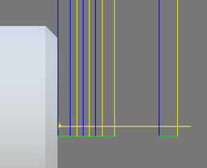 |
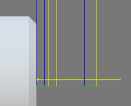 |
Passes de finition multiples activées |
Passes de finition multiples désactivées |
Déviation de lissage de finition
Valeur maximale de lissage appliquée lors de la finition. Utilisez ce paramètre pour éviter les angles aigus dans la trajectoire d'outil. Lorsque cette option est activée, un excès de brut est conservé dans les angles des contours.
|
Passes d'ébauche
Peut être utilisé pour effectuer plusieurs coupes autour du profil sélectionné. Cette action active les paramètres supplémentaires de contrôle du recouvrement et du nombre de coupes.
 |
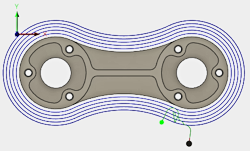 |
Passes d'ébauche désactivées |
Passes d'ébauche activées avec |
Passes d'ébauche
L'activation des passes d'ébauche vous offre la possibilité d'affiner la trajectoire d'outil de la rainure. Les options telles que le recouvrement de rainurage, le débourrage et d'autres commandes de finition deviennent disponibles, ainsi que d'autres paramètres du groupe '''Passes d'ébauche'''.
 |
 |
Passes d'ébauche désactivées |
Passes d'ébauche activées avec un |
Remarque: si l'option Passes d'ébauche est désactivée, le recouvrement des paramètres Pas en Z complet et Pas en Z partiel est calculé automatiquement en fonction de la largeur de la rainure de l'insertion.
Passes d'ébauche
L'activation des passes d'ébauche vous offre la possibilité d'affiner la trajectoire d'outil de la rainure. Les options telles que le recouvrement de rainurage, le débourrage et d'autres commandes de finition deviennent disponibles, ainsi que d'autres paramètres du groupe '''Passes d'ébauche'''.
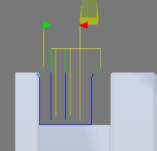 |
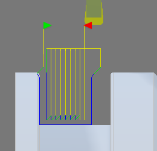 |
Passes d'ébauche désactivées |
Passes d'ébauche activées avec un |
Remarque: si l'option Passes d'ébauche est désactivée, le recouvrement des paramètres Pas en Z complet et Pas en Z partiel est calculé automatiquement en fonction de la largeur de la rainure de l'insertion.
Passes d'ébauche
Indique que les crêtes laissées par les passes d'ébauche initiales doivent être dégagées. Activez ce paramètre pour éviter que l'outil ne se charge avec une quantité de matière plus importante que prévu pendant la passe de profil finale. Ceci peut être particulièrement utile avec certaines géométries lorsque les crêtes restent sur la paroi de la rainure.
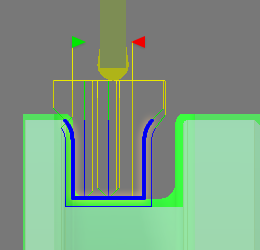 |
|
'''Passes d'ébauche désactivées''' |
'''Passes d'ébauche activées |
La zone ombrée en rouge sur la gauche représente le brut pouvant être supprimé par l'option '''Passes d'ébauche''' lorsqu'elle est activée.
Remarque: la passe d'ébauche est appliquée vers le bas uniquement, quelle que soit la valeur du paramètre Direction Haut/Bas.
Recouvrement
Spécifie le recouvrement horizontal entre les passes.
 |
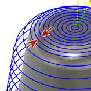 |
Distance de recouvrement |
Distance de recouvrement |
La valeur par défaut est égale à 50% du diamètre de l'outil de coupe.
Recouvrement
Spécifie le nombre de recouvrements entre les passes.
 |
'''Nombre de pas par coupe lorsque l'option Passes multiples est activée.''' |
Recouvrement
Cette distance détermine la quantité de matière que les trajectoires d'outil initiales laissent lors de la première passe de finition et de tous les recouvrements de finition suivants.
 |
Deux recouvrements de 0,75 mm |
Recouvrement
Cette distance détermine la quantité de matière que les trajectoires d'outil initiales laissent lors de la première passe de finition et de tous les recouvrements de finition suivants.
 |
 |
Recouvrement de 0.5 mm |
Recouvrement de 2 mm |
Recouvrement
Spécifie le recouvrement horizontal entre les passes.
|
Recouvrement horizontal |
La valeur par défaut est calculée par type d'outil.
Outils plats = Diamètre x 95%
Torique = Zone plane x 95%
Boule = Diamètre x 5%
Recouvrement
Spécifie le recouvrement horizontal entre les passes.
Distance de recouvrement |
La valeur par défaut est égale à 10% du diamètre de l'outil de coupe.
Recouvrement
Spécifie le recouvrement horizontal entre les passes.
Distance de recouvrement |
La valeur par défaut est calculée par type d'outil.
Outils plats = Diamètre x 80%
Torique = Zone plane x 80%
Boule = Diamètre x 5%
Nombre de recouvrements
Nombre de passes de finition.
Nombre de recouvrements
Nombre de passes de coupe.
|
Utilise plusieurs coupes pour obtenir la profondeur totale de filetage à la fraise. |
Nombre de recouvrements
Définit le nombre de recouvrements de finition à appliquer. Si l'option '''Passes d'ébauche est activée dans le groupe Passes d'ébauche''', le nombre de recouvrements appliqués peut sembler supérieur à ce qui a été spécifié.
 |
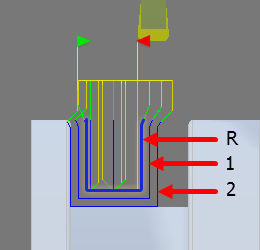 |
Deux recouvrements |
'''Deux recouvrements + Passes d'ébauche''' |
Nombre de recouvrements
Nombre de pas supplémentaires de chaque côté de la courbe bi-tangente.
Géométrie de fraisage circulaire
Sélectionnez des bossages, des poches ou des perçages cylindriques. Seules les sélections de faces sont autorisées.
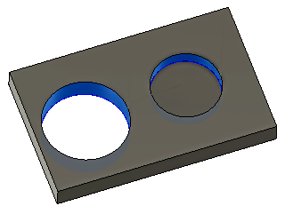 |
Sélection de la face de fraisage circulaire |
Sélectionnez une face cylindrique dans le modèle. Le diamètre, la hauteur de départ et la profondeur inférieure sont tous dérivés de cette sélection.
Géométrie de fraisage circulaire
Sélectionnez des bossages, des poches ou des perçages cylindriques. Seules les sélections de faces sont autorisées. Le diamètre, la hauteur de départ et la profondeur inférieure sont tous dérivés de cette sélection.
Sélection de la face de fraisage circulaire |
Passes multiples
Activez cette option afin d'indiquer une valeur pour plusieurs coupes latérales en cas de fraisage circulaire.
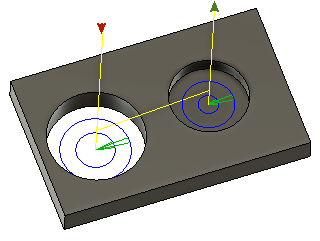 |
Plusieurs coupes latérales |
Nombre de recouvrements
Nombre de coupes latérales à effectuer.
Plusieurs coupes latérales |
Recouvrement
Spécifie le nombre de recouvrements de coupes latérales entre les passes.
 |
Plusieurs coupes latérales |
Profondeurs multiples
Activez cette option pour effectuer plusieurs coupes en profondeur en Z.
 |
Plusieurs coupes en profondeur en Z |
Profondeur de passe maximum d'ébauche
Indique la valeur de pas en Z maximale entre deux niveaux Z pour les opérations d'ébauche.
|
Profondeur de passe maximum d'ébauche |
REMARQUE: tous les pas en Z sont effectués selon la valeur de profondeur de passe maximum d'ébauche. Le pas en Z d'ébauche final est utilisé pour retirer le brut restant. Sélectionnez l'option Profondeurs de passes identiques pour obtenir des coupes en profondeur uniformes.
Géométrie
Les limites ouvertes ou fermées peuvent être usinées en sélectionnant des arêtes ou des esquisses. La forme de la rainure peut être droite, circulaire ou contenir plusieurs courbes, mais il doit s'agir d'une forme de rainure de largeur continue.
 |
 |
Zones rainurées |
Trajectoires d'outil de rainure |
Remarque: la trajectoire d'outil Rainure procède uniquement à la coupe d'un canal par le centre. Il ne s'agit pas d'une trajectoire d'outil de zone de type Poche 2D ou Adaptif 2D.
Sélection de poches
Sélectionnez des limites fermées ou ouvertes contenant des arêtes ou des esquisses. La forme de la rainure peut être droite, circulaire ou contenir plusieurs courbes, mais il doit s'agir d'une forme de rainure de largeur continue.
|
|
Zones rainurées |
Trajectoires d'outil de rainure |
Remarque: la trajectoire d'outil Rainure procède uniquement à la coupe d'un canal par le centre. Il ne s'agit pas d'une trajectoire d'outil de zone de type Poche 2D ou Adaptif 2D.
Distance de remontée
Distance jusqu'à laquelle l'outil s'éloigne de la dernière coupe avant de se rétracter.
 |
Distance: 0 po |
 |
Distance: 0,200 po |
Répéter la passe de finition
Activez cette option pour effectuer une autre passe de finition avec zéro (0.0) brut.
Efface le brut restant suite à la déviation de l'outil.
Aussi appelée Passe à vide.
|
Désactivé |
 |
Activé |
Profondeur de passe maximum en rampe
Indique la valeur maximale de pas en Z par révolution du profil de rampe. Remplace la valeur de l'angle en limitant la profondeur Z par passe.
 |
Valeur de 0,750 po |
 |
Valeur de 0,250 po |
Remarque: ce paramètre est important pour les rainures longues. Il permet de contraindre la charge d'outil lors de coupes sur toute la largeur au cours de l'application de la rampe.
Type de rampe
Définit le type de mouvement descendant de l'outil pour chaque profondeur de coupe.
 |
Pré-perçage |
 |
Plongée |
 |
Contour |
Remarque: le pré-perçage requiert une sélection de point, affichée ci-dessous.
Géométrie
Sélectionnez le contour à graver à l'aide d'arêtes ou d'esquisses. La géométrie contiguë est automatiquement enchaînée. Cette trajectoire d'outil requiert une limite fermée.
 |
Sélectionner une zone fermée |
Sélections de contours
Sélectionnez le contour à graver à l'aide d'arêtes ou d'esquisses. La géométrie contiguë est automatiquement enchaînée. Cette trajectoire d'outil requiert une limite fermée.
|
Sélectionner une zone fermée |
Angle aigu
L'opération de gravure en creux permet de créer des angles aigus dans la poche en déplaçant l'outil de coupe le long de l'intersection des coins. Si l'angle entre les arêtes est supérieur à cette valeur, aucun mouvement de nettoyage des coins ne sera effectué.
 |
Angle de la pièce défini sur 165 |
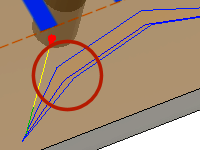 |
Angle aigu défini sur 160 |
 |
Angle aigu défini sur 168 |
Géométrie
Sélectionnez des arêtes ou des esquisses 2D ou 3D pour définir la courbe d'usinage. Sélectionnez une ou plusieurs courbes à usiner. Cette arête peut être utilisée pour la gravure de texte sur une seule ligne ou le nettoyage d'arêtes à l'aide des options de chanfrein.
 |
 |
Sélection de courbe
Sélectionnez des arêtes ou des esquisses 2D ou 3D pour définir la courbe d'usinage. Sélectionnez une ou plusieurs courbes à usiner. Cette arête peut être utilisée pour la gravure de texte sur une seule ligne ou le nettoyage d'arêtes à l'aide des options de chanfrein.
|
|
Largeur du chanfrein
Largeur du chanfrein.
Pour les arêtes qui ne sont pas déjà chanfreiné, cette valeur représente la largeur finale du chanfrein.
Pour les arêtes chanfreinées, il s'agit d'un décalage supplémentaire. Cette mesure revient à utiliser une valeur de surépaisseur radiale négative.
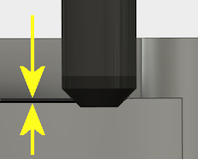 |
Largeur du chanfrein |
Largeur du chanfrein
Largeur du chanfrein.
Pour les arêtes qui ne sont pas déjà chanfreiné, cette valeur représente la largeur finale du chanfrein.
Pour les arêtes chanfreinées, il s'agit d'un décalage supplémentaire. Cette mesure revient à utiliser une valeur de surépaisseur radiale négative.
Largeur du chanfrein |
Arête de chanfrein
Sélectionnez les arêtes vives nécessitant un chanfrein.
 |
Les arêtes sélectionnées pour être usinées sont affichées en bleu. |
Largeur du chanfrein
Distance axiale sur le chanfrein.
Etendue de la portion à couper au niveau de l'arête sélectionnée. Affichée ci-dessous dans l'illustration centrale.
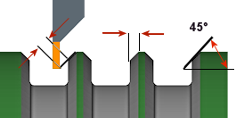 |
Extension de chanfrein - Largeur de chanfrein - Angle de chanfrein |
Extension de chanfrein
Distance de prolongement de l'outil au-delà du chanfrein.
Fournit un dégagement supplémentaire au-delà de l'arête de chanfrein. Affiché ci-dessous dans l'illustration de gauche.
Extension de chanfrein - Largeur de chanfrein - Angle de chanfrein |
Angle de chanfrein
Angle de la face chanfreinée.
L'angle est référencé à partir de l'axe Z. Illustré ci-dessous dans l'illustration de droite.
Extension de chanfrein - Largeur de chanfrein - Angle de chanfrein |
Décalage des extrémités de chanfrein
Valeur ajouté à la profondeur de la trajectoire d'outil. L'outil est maintenu en contact avec l'arête sélectionnée en ajustant le décalage radial de la trajectoire d'outil.
 |
Décalage des extrémités de chanfrein |
REMARQUE: permet de couper à partir de la partie inférieure de l'arête de chanfrein. Permet d'éviter de couper avec le bord inférieur de l'outil.
Dégagement du chanfrein
Cette valeur détermine la distance maximale jusqu'à laquelle l'outil doit s'éloigner de la géométrie du modèle non chanfreiné.
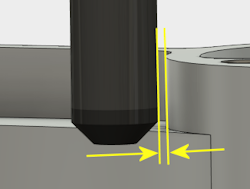 |
Dégagement du chanfrein |
REMARQUE: permet de couper le chanfrein en une arête raccordée, tout en évitant d'éventuelles collisions avec les parois sécantes.
Extension des passes
Distance de prolongement des passes au-delà de la limite d'usinage.
 |
Extension des passes |
Direction des passes
Indique la direction des passes de fraisage.
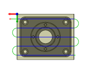 |
 |
Direction de passe à 0 degré |
Direction de passe à 45 degrés |
Direction des passes
Indique la direction des passes de tournage.
 |
 |
Direction de passe à 0 degré |
Direction de passe à 30 degrés |
Fond
Profondeur de coupe maximale.
Haut
Indique le haut du brut.
Charge optimale
Valeur maximale d'engagement que la trajectoire d'outil adaptative doit conserver.
Elle peut être considérée comme le nombre de recouvrements. Toutefois, l'usinage adaptatif à haute vitesse modifiera le recouvrement afin de réduire la surcharge de l'outil.
 |
Trajectoire d'outil d'évidement à haute vitesse |
Les trajectoires d'outil de poche traditionnelles peuvent surcharger l'outil. Un évidement adaptatif permet de réduire de 40 % la durée d'élimination des matières, vous permettant ainsi d'effectuer des coupes en profondeur plus longues en toute confiance. L'usinage adaptatif à haute vitesse accélère la suppression de matière et élimine les pointes d'insertion d'outil qui peuvent casser les outils de découpe.
 |
 |
Aucun usinage à haute vitesse |
Retrait par usinage à haute vitesse |
Ecart de charge
Écart maximal de la charge optimale de l'outil. La charge ne peut jamais être plus élevée que la somme de la charge optimale et de cet écart.
Rayon minimum de parcours d'outil
Définit le plus petit rayon de trajectoire d'outil à générer dans un angle vif. L'option Rayon minimum de parcours d'outil crée un raccord à tous les angles vif intérieurs.
Le fait de forcer l'outil dans un angle vif, ou un coin où le rayon est égal au rayon de l'outil, peut entraîner un broutage et déformer la finition de surface.
 |
 |
Défini sur zéro |
Défini sur 0,07 po |
REMARQUE: l'activation de ce paramètre laisse une plus grande quantité de matériau dans les angles internes, ce qui demande d'effectuer des opérations d'usinage de matière restante supplémentaires à l'aide d'un outil plus petit.
Pas en Z fin
Indique la valeur de pas en Z pour les passes intermédiaires. Ces passes sont réalisées vers le haut dans la direction de l'axe de l'outil.
Arrondir les parois
Permet d'arrondir les parois extrudées.
Usinage de creux
Si cette option est activée, la stratégie accède aux poches et les usine.
Si cette option est désactivée, la stratégie effectue uniquement un usinage de l'extérieur vers l'intérieur et ne touche pas aux poches.
Recouvrement manuel
Activez cette option pour définir le recouvrement manuellement.
Recouvrement minimum
Indique le recouvrement minimum.
Empêcher les coupes sur toute la largeur
Indique que les coupes sur toute la largeur doivent être évitées.
Insertion maximale de l'outil
Indique la valeur maximale d'insertion de l'outil pour les coupes sur toute la largeur.
Rayon trochoïdal maximal
Indique la valeur maximale de rayon trochoïdal.
Usinage zones planes
Indique que des niveaux Z supplémentaires doivent être ajoutés pour les passes dans les zones planes, afin d'éliminer toute crête trop prononcée.
 |
 |
Désactivé |
Activé |
Exemple avec contour 3D
Pas en Z minimum pour zones planes
Ce paramètre détermine la valeur minimale de pas en Z autorisée entre les niveaux Z supplémentaires. Il prévaut sur la valeur de recouvrement maximum définie pour les zones planes.
Passes maximum pour zones planes
Ce paramètre détermine la valeur de recouvrement utilisée pour détecter les zones où des niveaux Z supplémentaires doivent être insérés. Si la valeur de pas en Z normale entraîne un recouvrement supérieur à cette valeur, des niveaux supplémentaires sont insérés jusqu'à ce que la valeur de recouvrement ou de pas en Z minimale soit atteinte.
Détection de zone plane
Si cette option est activée, la stratégie tente de détecter la hauteur des pics et des zones planes, et effectue l'usinage à ces niveaux.
Si cette option est désactivée, la stratégie effectue l'usinage en respectant exactement le pas en Z.
Important: l'activation de cette fonction peut augmenter considérablement le temps de calcul.
Pas en Z minimum
Utilisé pour la détection des zones planes. Cette valeur représente le plus petit pas en Z pouvant être autorisé.
Passes de décalage en Z
Activez cette option pour effectuer des coupes à différentes profondeurs.
Les passes de décalage en Z permettent de créer plusieurs passes avec un décalage en Z incrémentiel. Elles fonctionnent comme le nombre de passes de finition en Z dans les opérations 2D et sont particulièrement utiles pour supprimer une quantité fixe de brut en plusieurs passes.
 |
 |
4 coupes de 0,010 po |
Trois passes de décalage en Z |
Nombre de pas en Z
Indique le nombre de pas en Z.
Surépaisseur
Epaisseur supplémentaire appliquée à l'outil pour détecter des passes.
 |
La valeur entre le rayon réel de la pièce et celui de l'outil. |
Angle de bitangence
Angle, en degrés, utilisé pour déterminer le nombre de passes le long d'une paroi ou d'un pli.
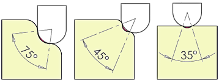 |
'''Un angle représentant les points de contact de l'outil.''' |
Les trajectoires d'outil sont créées le long de toutes les zones de contact où elles engendreraient deux contacts simultanés avec la pièce, à une valeur supérieure à la différence angulaire.
Limite du nombre de recouvrements
Lorsque cette option est désactivée, le nombre de pas est illimité. Vous obtenez une finition bi-tangente réduite de l'intégralité de la surface.
Calculer le nombre de recouvrements
Lorsque cette option est désactivée, vous pouvez spécifier le nombre de pas et la distance par pas.
Lorsque cette option est activée, le recouvrement et la quantité de brut déterminent le nombre de coupes.
Utiliser la vitesse d'avance réduite
Activez cette option pour réduire la vitesse d'avance avant la position finale de la coupe.
 |
 |
Désactivé |
Activé |
Rayon d'avance réduite
Définit le rayon avant la position finale de la coupe à l'endroit où la vitesse d'avance changera.
Réduire l'avance avant la fin de la coupe réduit la charge exercée sur l'outil.
|
'''Modification de la position du rayon de l'avance''' |
Avance réduite
Définit la nouvelle vitesse d'avance à appliquer à la position du rayon d'avance.
Réduire l'avance avant la fin de la coupe réduit la charge exercée sur l'outil.
|
'''Modification de la position de l'avance''' |
Vitesse de broche réduite
Définit la nouvelle vitesse de broche à appliquer à la position du rayon d'avance.
Changer la vitesse de broche avant la fin de la coupe peut modifier la charge sur l'outil.
|
Position de changement de vitesse |
Avance réduite
Définit la nouvelle vitesse d'avance à appliquer à la position du rayon d'avance.
Réduire l'avance avant la fin de la coupe réduit la charge exercée sur l'outil.
|
'''Modification de la position de l'avance''' |
Direction intérieur/extérieur
Indique si la trajectoire d'outil se déplace de l'intérieur vers l'extérieur ou de l'extérieur vers l'intérieur. L'option Distance d'usinage la plus courte utilise une combinaison du tri pour obtenir la distance d'usinage la plus courte.
 |
 |
Extérieur -> Intérieur |
Intérieur -> Extérieur |
Connexion de l'intérieur vers l'extérieur
Activez cette option pour indiquer si la liaison entre passes doit être effectuée sans ordre particulier ou, au contraire, en procédant des passes intérieures vers les passes extérieures.
Incrément angulaire
L'incrément angulaire en degrés entre les passes radiales.
Angle de départ
Angle du rayon de départ en degrés, mesuré à partir de l'axe des X du repère.
 |
Angle à partir de |
Angle d'arrivée
Angle du rayon de d'arrivée en degrés, mesuré à partir de l'axe des X du repère.
 |
Angle d'arrivée |
Limite intérieure
Définit la valeur minimale de rayon intérieur.
 |
 |
Sans rayon intérieur |
Rayon intérieur |
Exemple avec spirale 3D
Limite extérieure
Définit la valeur maximale de rayon extérieur.
|
 |
Pas de rayon extérieur |
Rayon extérieur |
Exemple avec spirale 3D
Centre manuel
Le centre des passes radiales.
Sens horaire
Indique que la spirale va dans le sens horaire.
Enrouler le parcours d'outil
Enroule le parcours d'outil autour d'un cylindre.
La trajectoire d'outil obtenue peut être générée en utilisant la commande substitution d'axe autour d'un axe rotatif, ou en tant que mouvements complets multi-axes.
REMARQUE: la commande Enrouler le parcours d'outil crée une inclinaison qui affecte la précision du résultat. Toutes les parois situées sous le rayon d'enroulement seront surcoupées. Pour finir les parois avec une stratégie 4 axes, utilisez la commande Roulant 5 axes avec l'option Limiter à 4 axes activée.
Décalage de rayon d'enroulement
Lors de l'enroulement, le parcours d'outil n'est correcte qu'au niveau d'un seul rayon, le '''rayon d'enroulement''', qui correspond par défaut au rayon du cylindre d'enveloppe sélectionné. Ce décalage permet d'ajuster le rayon d'enroulement.
Rayon d'enroulement
Lors de l'enroulement, le parcours d'outil n'est correct qu'au niveau d'un seul rayon. Il s'agit du rayon au niveau duquel l'enroulement se produit.
Toutes les parois situées sous ce rayon seront surcoupées et toutes celles au-dessus seront dégagées.
Cylindre d'enroulement
Cylindre autour duquel le parcours d'outil sera enroulé.
En cas de substitution d'axe, l'opération doit être effectuée le long de l'axe rotatif de votre machine.
Pour les opérations multi-axes, il peut s'agir de n'importe quel axe du moment que la machine peut atteindre les positions des trajectoires d'outil qui en découlent.
Orientation d'outil
Remplace l'orientation de l'outil définie dans la configuration.
Cette option fonctionne avec toutes les opérations 2D et 3D afin de gérer la programmation d'axe 3+2.
 |
 |
Orientation de l'outil activée |
Orientation de l'outil désactivée |
Sélection de l'orientation de l'outil
Indique la façon dont l'orientation de l'outil est définie.
- La valeur par défaut est Utilisation du repère. Elle utilise le système de coordonnées de la pièce de travail (repère) de la tâche en cours pour l'orientation de l'outil.
- L'option '''Utilisation d'un point et d'un plan''' définit une orientation d'outil spécifique pour cette opération à partir de n'importe quelle combinaison d'un point et d'un plan. Le point et le plan sélectionnés déterminent respectivement l'origine et la direction de la trajectoire.
- L'option Utilisation du repère définit une orientation d'outil spécifique pour cette opération à partir de n'importe quel système de coordonnées du modèle. Cette option utilise l'origine et l'orientation du système de coordonnées. Utilisez cette fonction si le mode ne comporte aucune combinaison d'un point et d'un plan satisfaisante pour l'opération.
Origine
Sélectionnez un point ou un sommet comme origine de l'orientation de l'outil.
Orientation
Sélectionnez une face, une esquisse ou un plan pour déterminer l'orientation de l'outil.
Remplacer le système de coordonnées configuré
Indique que le système de coordonnées de la pièce de travail (repère) doit être différent de celui défini pour la configuration.
Sélection de l'orientation de l'outil
Indique la méthode de définition du système de coordonnées de la pièce de travail.
 |
 |
 |
Origine et orientation |
Système de coordonnées |
Brut et orientation |
'''Utiliser l'origine l'orientation''': le système utilise un point d'esquisse ou un sommet du brut pour déterminer l'emplacement du repère et un plan ou une face plane pour en définir l'orientation.
'''Utiliser le système d'axes''': un système d'axes utilisateur est employé pour définir l'emplacement et l'orientation du système d'axes de travail (WCS).
'''Utiliser le brut et l'orientation''': un point du brut (par exemple, Centre haut) est utilisé pour déterminer l'emplacement du système d'axes de travail, et un plan ou une face plane pour en définir l'orientation.
Modèle
Activez cette option pour remplacer la géométrie de modèle (surfaces/corps) définie dans la configuration.
Surfaces à éviter/toucher
Spécifie les surfaces à éviter. Lorsque cette option est activée, les trajectoires d'outil maintiennent une distance spécifiée avec les surfaces sélectionnées.
 |
 |
 |
Désactivé |
Activé |
Surfaces à toucher |
REMARQUE: l'option Surfaces à toucher inverse l'effet de l'option Surfaces à éviter. Lorsqu'elle est activée, les surfaces à éviter deviennent celles devant être touchées, dans les limites de dégagement données, tandis que les autres surfaces sont évitées.
Surfaces à éviter/toucher
Sélectionnez les surfaces à éviter. Les trajectoires d'outil restent à une certaine distance des surfaces sélectionnées en fonction de la quantité de surface.
|
|
|
Aucune sélection |
Dômes sélectionnés |
Surface de base sélectionnée |
REMARQUE: l'option Surfaces à toucher inverse l'effet de l'option Surfaces à éviter. Lorsqu'elle est activée, les surfaces à éviter deviennent celles devant être touchées, dans les limites de dégagement données, tandis que les autres surfaces sont évitées.
Dégagement pour les surfaces à toucher/éviter
Distance de dégagement par rapport aux surfaces sélectionnées.
Fraisage vers le haut/bas
Cette option permet de décomposer chaque passe en plusieurs segments, de sorte que chaque pièce est usinée suivant un mouvement ascendant ou descendant. Elle est utile lorsque vous utilisez des fraises à lames rapportées qui ne peuvent effectuer des opérations de coupe que dans une seule direction.
 |
 |
Les deux |
Fraisage vers le bas |
Limite d'usinage
Le mode de limites spécifie la façon dont le contour de la trajectoire d'outil est défini.
 |
 |
Exemple 1 |
Exemple 2 |
Exemple avec trajectoire d'outil radiale 3D
Modes de limitation de l'outil:
 |
 |
 |
Zone de délimitation |
Silhouette |
Sélection |
Aucun: la trajectoire d'outil couvre l'ensemble du brut, sans limitation. REMARQUE: l'option Aucun n'est pas disponible pour toutes les stratégies d'usinage.
Zone de délimitation: confine les trajectoires d'outil à l'intérieur d'une zone définie par l'étendue maximale de la pièce vue depuis le repère.
Silhouette: confine les trajectoires d'outil à l'intérieur d'une limite définie par l'ombre de la pièce vue depuis le repère.
Sélection: confine les trajectoires d'outil à l'intérieur d'une zone définie par une limite sélectionnée.
Zone de limitation de l'outil
La zone de limitation de l'outil permet de contrôler la position des outils par rapport aux limites sélectionnées.
Outil à l'intérieur de la limite
L'intégralité de l'outil est confinée à l'intérieur de la limite. Par conséquent, la totalité de la surface délimitée peut ne pas être usinée.
Outil centré sur la limite
La limite est circonscrite au centre de l'outil. Ce paramètre garantit que la totalité de la surface située à l'intérieur de la limite est usinée. Toutefois, les zones situées à l'extérieur des limites peuvent également être usinées.
Outil à l'extérieur de la limite
La trajectoire d'outil est créée à l'intérieur de la limite, mais le bord de l'outil peut se déplacer le long de la bordure extérieure de la limite.
 |
 |
 |
Intérieur |
Centre |
Extérieur |
Pour décaler la limitation, utilisez le paramètre Décalage supplémentaire.
Limite de point de contact
Lorsque cette option est activée, les limites d'usinage de la position de coupe sont prolongées jusqu'à l'endroit où l'outil entre en contact avec la pièce, plutôt que jusqu'au point de centre de l'outil. Dans l'illustration ci-dessous, la ligne rouge indique l'arête sélectionnée en tant que limite d'usinage, du point de vue du plan de l'outil. La ligne bleue indique le point de contact avec l'outil.
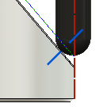 |
 |
Désactivé |
Activé |
Peut être utilisé pour limiter le survol sur l'arête supérieure d'une coupe. La différence est illustrée ci-dessous sur une trajectoire d'outil parallèle.
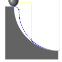 |
 |
Désactivé |
Activé |
Inclinaison
Contient des trajectoires d'outil basées sur une plage d'angles spécifiés.
 |
 |
 |
0 degré - 90 degrés |
0 degrés - 45 degrés |
45 degrés - 90 degrés |
La limitation de l'angle d'inclinaison est déterminées par les paramètres d'angle d'inclinaison minimale et d'inclinaison maximale situé sous l'onglet Géométrie. Les angles définis doivent être compris entre 0 (horizontale) et 90 degrés (verticale).
Seules les zones dont l'inclinaison est supérieure ou égale aux valeurs Inclinaison minimale et Inclinaison maximale sont usinées.
La plupart des stratégies de finition 3D prennent en charge la limitation d'angle d'inclinaison. Cette fonction permet notamment de contraindre un parcours d'outil sélectionné aux angles pour lesquels il est le plus approprié. Par exemple, la Finition parallèle est adaptée aux zones à faible pente, tandis de la Finition de contour est adaptée aux surfaces à forte inclinaison.
Depuis l'angle de pente
L'Angle d'inclinaison minimale est calculé à partir du plan de degré 0 (l'horizontale). Seules les zones dont l'inclinaison est supérieure ou égale à cette valeur sont usinées.
 |
Angle d'inclinaison à partir de l'horizontale |
Jusqu'à l'angle d'inclinaison
L'angle d'inclinaison maximale est calculé à partir du plan de degré 0 (l'horizontale). Seules les zones dont l'inclinaison est inférieure ou égale à cette valeur sont usinées.
 |
Angle d'inclinaison jusqu'à la verticale |
Contact uniquement
Détermine si vous souhaitez ou non que des trajectoires d'outil soient calculées aux endroits où l'outil n'est pas en contact avec la surface d'usinage. Lorsque cette option est désactivée, les trajectoires d'outil sont prolongées jusqu'à la limite de confinement et traversent les ouvertures dans la pièce de travail.
 |
 |
Activé |
Désactivé |
Distance de sécurité
Distance minimale entre l'outil et les surfaces de la pièce lors des mouvements de retrait.
Cette distance est mesurée après l'application des valeurs de brut à conserver. Aussi, si une valeur négative est utilisée, veillez bien à ce que la distance de sécurité soit suffisamment grande pour éviter toute collision.
Stratégie de retrait
Détermine la façon dont l'outil se déplace entre les passes de coupe.
 |
 |
 |
Retrait complet |
Retrait minimum |
Chemin le plus court |
Exemple avec flux
Retrait complet: permet de rétracter entièrement l'outil selon la valeur du paramètre Hauteur de retrait à la fin de la passe, avant de le positionner au-dessus du début de la passe suivante.
Retrait minimum: permet d'atteindre directement la hauteur minimale à laquelle l'outil usine la pièce de travail, plus toute distance de sécurité spécifiée.
Chemin le plus court: permet de déplacer l'outil sur la distance la plus courte possible en ligne droite entre des trajectoires.
AVERTISSEMENT: l'option Chemin le plus court ne doit pas être utilisée sur des ordinateurs qui ne prennent pas en charge les mouvements linéarisés à grand vitesse où les déplacements G0 sont effectués en ligne droite (par opposition à ceux qui guident l'ensemble des axes à vitesse maximale, parfois appelés déplacements en zigzag). Tout non-respect de cette règle peut entraîner une simulation incorrecte des mouvements de la machine par le logiciel et provoquer des pannes d'outil.
Pour les machines CNC qui ne prennent pas en charge les mouvements rapides linéarisés, vous pouvez modifier le post-processeur afin de convertir tous les mouvements G0 en mouvements G1 UGV. Contactez l'assistance technique pour en savoir plus sur la façon de modifier les post-processeurs à cet effet.
Stratégie de retrait
Détermine si l'outil doit se retirer vers le diamètre de dégagement après chaque passe de coupe ou simplement se retirer à une courte distance de la tâche. La distance est déterminée par la valeur Distance de sécurité.
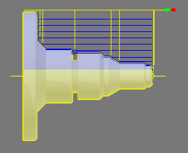 |
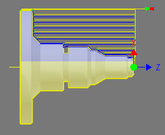 |
Retrait complet |
Retrait minimum |
Définir le diamètre de profil minimal
Cette opération permet de définir un diamètre minimal de profil. Si une zone d'usinage est plus petite que le diamètre de profil minimal, il n'est pas usiné.
Diamètre de profil minimal
Permet de définir la cavité minimale à couper.
Direction
Définit le mode d'usinage.
- Fraisage en avalant
- Fraisage en opposition
Autoriser le retrait rapide
Lorsque cette option est activée, les retraits sont effectués par mouvements rapides (G0). Désactivez-la pour forcer les retraits à l'avance de sortie.
Maintenir l'outil baissé
Lorsque cette option est activée, la stratégie évite d'effectuer un retrait lorsque la distance vers la zone suivante est inférieure à la distance outil baissé spécifiée.
Maintenir l'outil baissé
Ces options peuvent être utilisées pour éviter les retraits et les zones déjà coupées.
 |
La tête évite les zones déjà coupées |
REMARQUE: lorsqu'un contour est découpé, il se peut que le résidu ressorte vers le haut. Si vous maintenez la tête de la machine vers le bas, ce résidu peut endommager cette pièce. Les paramètres ci-dessous vous permettent de maintenir la tête vers le bas, mais définissent une condition selon laquelle le déplacement rapide évitera tous les endroits où un contour a déjà été coupé.
Distance maximum d'outil baissé
De nombreuses trajectoires d'outil feront une coupe et se repositionneront en vue de la coupe suivante. Si la distance entre les positions est supérieure à la valeur d'outil baissé maximale, l'outil se rétractera entre les coupes. Pour garder l'outil baissé entre les coupes, définissez une valeur supérieure à la plus grande distance de repositionnement.
Dans la pièce affichée, le point le plus large est de 1,8".
 |
 |
Distance maximale outil |
Distance maximale outil |
Exemple avec usinage adaptatif 2D
REMARQUE: quelle que soit la distance outil baissé, l'outil est rétracté entre les passes si le déplacement rapide ne respecte pas l'intégrité de la pièce de travail.
Distance maximum d'outil baissé
Distance à laquelle les retraits ne sont plus nécessaires.
|
La distance entre les coupes est inférieure à 4." |
 |
La distance entre les coupes est supérieure à 4." |
Une distance plus petite entraînera le retrait de la tête jusqu'au plan de dégagement. Une distance plus grande vous permettra de maintenir la tête vers le bas à la hauteur sur le dessus.
REMARQUE: dans le premier exemple, vous pouvez voir comment le déplacement rapide évite tous les contours précédemment coupés. Les pièces plus petites peuvent ressortir, ce qui peut entraîner une collision avec la tête. Le fait d'éviter les contours déjà coupés permet d'empêcher tout risque de collision.
Distance minimale outil baissé
Dégagement de l'arête de la pièce coupée pour les déplacements rapides.
'''Distance de dégagement rapide de l'arête de .040"''' |
'''Distance de dégagement rapide de l'arête de .200"''' |
Lorsque la tête est maintenue vers le bas à la hauteur sur le dessus, ce dégagement évite les contours qui ont été coupés. Il s'agit d'un dégagement XY par rapport à l'arête la plus proche, qui se produit lorsque des déplacements rapides sont effectués entre des coupes.
Dans les deux sens
Lorsque cette option est activée, les passes sont effectuées dans les deux directions. Désactivez-la pour forcer l'utilisation du fraisage en avalant uniquement.
Entrée
Activez cette option pour générer une entrée.
 |
Entrée |
Entrée
Raccorde les contours.
 |
Entrée |
Le mouvement d'entrée/sortie permet de raccorder le contour de la pièce.
Sans ce type de raccordement, une marque peut subsister au niveau du point de départ suite à cette opération.
Entrée
Détermine la façon dont l'outil entre dans le chemin de coupe. Le rayon, la distance et l'angle peuvent être spécifiés.
 |
Entrée |
Rayon d'entrée horizontal
Spécifie le rayon des mouvements d'entrée horizontaux.
 |
Rayon d'entrée horizontal |
Rayon d'entrée/de sortie horizontal
Crée un arc dans le plan de coupe XY pour effectuer un raccordement à la pièce. Le rayon d'entrée/de sortie horizontal est déplacé.
|
Rayon d'entrée/de sortie horizontal |
Rayon d'entrée
Spécifie le rayon à appliquer aux déplacements d'entrée.
 |
Rayon d'entrée |
Le raccordement à rayon permet d'obtenir une transition lissée au niveau de la coupe.
Rayon d'entrée
Spécifie le rayon du mouvement d'entrée au début d'une passe de coupe.
 |
|
Rayon d'entrée à 0 mm |
Rayon d'entrée à 3 mm |
Angle de balayage d'entrée
Spécifie l'angle d'attaque de l'arc d'entrée.
 |
 |
Angle d'attaque à 90 degrés |
Angle d'attaque à 45 degrés |
Angle de balayage d'entrée
Spécifie l'angle de balayage de l'arc d'entrée.
|
 |
Angle d'attaque à 90 degrés |
Angle d'attaque à 45 degrés |
Longueur d'entrée linéaire
Indique la longueur du mouvement d'entrée linéaire pour lequel vous souhaitez activer la correction de rayon dans le contrôleur.
 |
Longueur d'entrée linéaire |
Longueur d'entrée linéaire
Indique la longueur du mouvement d'entrée linéaire.
 |
Longueur d'entrée linéaire |
Requis en cas d'utilisation de la correction de l'outil de coupe.
Entrées/sorties et transitions
Contrôle le raccordement de l'outil avec la coupe.
Entrée linéaire et radiale |
Longueur d'entrée linéaire
Indique la distance (longueur) du mouvement d'entrée au début d'une passe de coupe.
 |
|
Longueur d'entrée linéaire définie sur 0 mm |
Longueur d'entrée linéaire définie sur 2 mm |
Perpendiculaire
Remplace les extensions tangentielles des arcs d'entrée/de sortie avec un déplacement perpendiculaire à l'arc.
 |
Exemple avec entrée/sortie perpendiculaire |
Exemple: alésage où les arcs sont le plus large possible (plus l'arc est long, moins vous risquez de créer de marques de temporisation) et où une entrée linéaire tangente est impossible car elle s'étendrait jusque sur les côtés de la zone d'alésage.
Rayon d'entrée vertical
Rayon de l'arc vertical qui atténue le mouvement d'entrée en direction de la trajectoire d'outil elle-même.
 |
Rayon d'entrée vertical |
Rayon d'entrée/de sortie vertical
Crée un arc dans le plan vertical pour effectuer un raccordement vers la pièce. Le rayon d'entrée/de sortie vertical est déplacé.
|
Rayon d'entrée/de sortie vertical |
Sortie
Activez cette option pour générer une sortie.
 |
Sortie |
Sortie
Raccorde les contours.
|
Sortie |
Le mouvement d'entrée/sortie permet d'effectuer un raccordement au niveau du contour de la pièce.
Sans ce type de raccordement, une marque peut subsister au niveau du point de départ suite à cette opération.
Sortie
Détermine la façon dont l'outil quitte le chemin de coupe. Le rayon, la distance et l'angle peuvent être spécifiés.
 |
Sortie |
Identique à l'entrée
Lorsque cette option est activée, les valeurs de sortie sont identiques aux valeurs d'entrée.
|
 |
Sortie identique à l'entrée |
Sortie différente de l'entrée |
REMARQUE: décochez cette option pour modifier les valeurs de sortie
Identique à l'entrée
Lorsque cette option est activée, les valeurs de sortie sont identiques aux valeurs d'entrée.
Rayon de sortie horizontal
Spécifie le rayon à appliquer aux mouvements de sortie horizontaux.
 |
Rayon de sortie horizontal |
Rayon de sortie
Spécifie le rayon à appliquer aux mouvements de sortie.
 |
Rayon de sortie |
Le raccordement à rayon permet d'obtenir une transition lissée en sortie de coupe.
Rayon de sortie
Indique le rayon du mouvement de sortie à la fin d'une passe de coupe.
 |
|
Rayon de sortie à 0 mm |
Rayon de sortie à 3 mm |
Angle de balayage de sortie
Spécifie l'angle d'attaque de l'arc de sortie.
|
|
Angle d'attaque à 90 degrés |
Angle d'attaque à 45 degrés |
Angle de balayage de sortie
Spécifie l'angle de balayage de l'arc de sortie.
|
|
Angle d'attaque à 90 degrés |
Angle d'attaque à 45 degrés |
Distance de sortie linéaire
Indique la longueur du mouvement de sortie linéaire pour lequel vous souhaitez désactiver la correction radiale dans le contrôleur.
 |
Distance de sortie linéaire |
Longueur de sortie linéaire
Indique la longueur du mouvement de sortie linéaire.
 |
Longueur de la sortie linéaire |
Requis en cas d'utilisation de la correction de l'outil de coupe.
Distance de sortie linéaire
Indique la distance (longueur) du mouvement de sortie à la fin d'une passe de coupe.
 |
 |
Distance de sortie linéaire définie sur 1 mm |
Distance de sortie linéaire définie sur 5 mm |
Dégagement Z X
Détermine la distance de dégagement Z X par rapport au profil de coupe.
Distance X de 0.030 po. |
Distance Z de 0.030 po. |
Distance X de 0.090 po. |
Distance Z de 0.090 po. |
Dégagement Z
La distance de dégagement Z par rapport au début de la coupe.
Distance Z de 0.030 po. |
Distance Z de 0.090 po. |
Dégagement X
La distance de dégagement X par rapport à la coupe la plus éloignée sur le profil.
Distance X de 0.030 po. |
Distance X de 0.090 po. |
Distance de retrait
Contrôle le mouvement de dégagement après chaque ébauche de coupe. Illustré ci-dessous en vert.
 |
 |
Distance de retrait de 2 mm |
Distance de retrait de 6 mm |
Perpendiculaire
Remplace les extensions tangentielles des arcs d'entrée/de sortie avec un déplacement perpendiculaire à l'arc.
|
Exemple avec entrée/sortie perpendiculaire |
Exemple: alésage où les arcs sont le plus large possible (plus l'arc est long, moins vous risquez de créer de marques de temporisation) et où une entrée linéaire tangente est impossible car elle s'étendrait jusque sur les côtés de la zone d'alésage.
Rayon de sortie vertical
Spécifie le rayon de la sortie verticale.
 |
Rayon de sortie vertical |
Type de transition
Spécifie le type de connexion effectuée entre les passes.
- Aucun contact: les passes latérales ne sont pas connectées les unes aux autres sur le même niveau Z, mais via un mouvement de retrait.
- Ligne droite: connexions plus simples et plus directes par lignes droites.
- Chemin le plus court: chemin le plus court possible entre deux zones d'usinage, généralement un mouvement en ligne droite.
- Lissage: utilise des mouvements tangentiels lissés en utilisant de véritable arcs lorsque c'est possible.
Rampe
Active les rampes.
 |
Exemple avec un angle de rampe de 15 degrés |
Type de rampe
Définit le type de mouvement descendant de l'outil pour chaque profondeur de coupe.
Plongée en dehors du brut |
 |
|
Pré-perçage |
Plongée |
Pour utiliser l'option Pré-perçage, vous devez définir au moins un emplacement de pré-perçage.
 |
|
Zig-Zag |
Profil |
Remarquez les transitions lissées obtenues avec le type de rampe en zig-zag.
 |
 |
Profil lissé |
Hélice |
Utiliser l'angle de rampe
Utilise l'angle d'inclinaison d'une spirale plutôt qu'un pas afin de contrôler la profondeur de l'avance.
Le pas contrôle la profondeur avec une distance par révolution.
L'angle contrôle la façon dont l'outil s'incline dans la pièce.
 |
 |
Affiché avec la distance du pas |
Affiché avec une rampe de 2 degrés |
Angle
Détermine l'angle de l'hélice qui pénètre dans l'empreinte.
|
Affiché avec une rampe de 2 degrés |
Angle de rampe (degrés)
Détermine l'angle de l'hélice qui pénètre dans l'empreinte.
|
Affiché avec une rampe de 2 degrés |
Angle de dépouille de rampe (degrés)
Crée une empreinte d'entrée de forme conique afin de réduire la charge de l'outil. Indiquée en tant qu'angle inclus.
Détermine les diamètres de départ et de fin de l'hélice qui pénètre dans l'empreinte.
Affiché avec une dépouille de 12 degrés |
Profondeur de passe maximum en rampe
Indique la valeur maximale de pas en Z par révolution du profil de rampe. Ce paramètre permet de limiter la charge de l'outil lors de l'exécution de coupes sur toute la largeur au cours d'une plongée en rampe.
Hauteur de dégagement rampe
Dégagement au-dessus de la hauteur sur le dessus, au niveau duquel la rampe de l'hélice démarre.
Dégagement pour le démarrage de l'hélice |
Diamètre de rampe hélicoïdale
Diamètre maximal à utiliser pour une entrée hélicoïdale dans l'empreinte.
Avec une valeur optimale, l'outil recouvre son centre, mais crée néanmoins l'alésage hélicoïdal maximal pour l'entrée dans l'empreinte. L'objectif est d'obtenir une bonne évacuation des copeaux. Si la valeur est supérieure au diamètre de l'outil, un bossage peut apparaître au centre de l'hélice.
 |
|
Valeur de 1,8 x diamètre |
Valeur de 0,8 x diamètre |
Le système détermine le meilleur emplacement pour l'hélice d'entrée, sauf si une position d'entrée est sélectionnée. (Les positions d'entrée sont indiquées ci-dessous.) L'intégralité de la zone sera toujours effacée, quel que soit le diamètre. Remarque: la largeur de la zone doit correspondre à la formule Diamètre de l'outil + Diamètre de la rampe + Brut, sinon l'entrée hélicoïdale échouera.
Diamètre minimum de rampe
Plus petit diamètre de rampe hélicoïdale acceptable.
Cette valeur doit toujours être inférieure au diamètre de la rampe hélicoïdale, de sorte que le système puisse calculer un intervalle adapté à la poche ou au canal disponible. Des diamètres plus petits peuvent réduire l'évacuation des copeaux, créer des mouvements saccadés de la machine, voire casser l'outil.
 |
Rampe hélicoïdale de 0,100 po - Rampe minimale de 0,060 po |
Forcer la rampe
Activez cette option pour forcer un profil de rampe au-dessus des contours sélectionnés.
Utilisez cette option pour découper des trous, par exemple.
Positions
Spécifiez les points d'entrée d'outil.
Positions de pré-perçage
Sélectionnez les points au niveau desquels des trous ont été percés pour permettre le passage de l'outil de coupe dans la matière.
 |
Emplacement de pré-perçage |
|
Début de la plongée de pré-perçage |
Positions d'entrée
Sélectionnez la géométrie à proximité de l'emplacement auquel vous souhaitez faire passer l'outil.
Limitation des passes
Activez cette option pour limiter l'amplitude des passes de sorte à les ajuster aux avancées, lorsque ce n'est autrement pas possible, pour permettre à la machine CNC de maintenir une avance élevée. Si cette option est désactivée, la passe entière est usinée, ce qui peut créer des trajectoires de couples suivant des angles aigus ne respectant la valeur de rayon de bout d'outil minimale.
Diamètre de rampe manuel
Si cette option est activée, le diamètre de rampe minimal peut être défini.
Angle de rampe de contact
Angle maximal de la rampe de contact.
Rampe de contact lissée
Indique que la rampe de contact doit être lissée.
Supprimer les pointes
Activez cette option pour supprimer les pointes de la trajectoire d'outil.
Angle maximal de pointe
Spécifie l'angle entre deux passes qui crée une pointe.
Filtre de lissage
Lisse la trajectoire d'outil en supprimant les points superflus et en ajustant les arcs lorsque la tolérance de filtrage le permet.
 |
 |
Lisage désactivé |
Lissage activé |
Le lissage permet de réduire la taille du code sans sacrifier la précision. Il consiste à remplacer les segments colinéaires par une seule courbe et des arcs tangents afin de réduire le nombre de lignes dans les zones courbes.
Les effets du lissage peuvent être considérables. La taille du fichier de code G peut être réduite de plus de 50 %. La machine se déplace plus rapidement et de manière plus fluide, permettant une meilleure finition de surface. La quantité de réduction de code dépend de l'adéquation de la trajectoire d'outil au lissage. Pour les trajectoires qui se limitent principalement à un plan principal (XY, YZ ou XZ), comme les trajectoires parallèles, le filtrage offre de bons résultats. Pour les autres, par exemple dans le cas de crêtes 3D, la réduction de code est moins importante.
Tolérance de lissage
Spécifie la tolérance de lissage.
Le lissage donne de meilleurs résultats lorsque la tolérance (la précision avec laquelle la trajectoire linéarisée initiale est générée) est supérieure ou égale à la valeur de tolérance de lissage (ajustement des lignes d'arc).
REMARQUE: la tolérance totale, c'est-à-dire la distance à laquelle la trajectoire d'outil peut s'écarter de la forme de spline ou de surface idéale, est la somme de la tolérance de coupe et de la tolérance de lissage. Par exemple, si vous définissez une tolérance de coupe de 0,0004 pouce et une tolérance de lissage équivalente, la trajectoire d'outil peut s'écarter de 0,0008 pouce de la trajectoire idéale, celle permettant d'obtenir la forme de spline ou de surface initiale.
Mode grande vitesse d'avance
Indique dans quelles conditions les mouvements rapides doivent être générés comme de véritables mouvements rapides (G0) comme des mouvements à haute vitesse d'avance (G1).
- Conserver les mouvements rapides: tous les mouvements rapides sont conservés.
- Conserver les mouvements rapides axiaux et radiaux: les mouvements rapides effectués strictement dans le sens horizontal (radiaux) ou vertical (axiaux) sont générés comme de véritables mouvements rapides.
- Conserver les mouvements rapides axiaux: mouvements rapides verticaux uniquement.
- Conserver les mouvements rapides radiaux: mouvements rapides horizontaux uniquement.
- Conserver les mouvements rapides sur un seul axe: mouvement rapides le long d'un seul axe (X, Y ou Z).
- Toujours utiliser l'UGV: traite les mouvements rapides comme des mouvements à haute avance (G1) et non comme des mouvements rapides (G0).
Ce paramètre est habituellement utilisé pour éviter les collisions à haute vitesse sur les machines effectuant des mouvements en rapide de manière "non linéaire".
Haute vitesse d'avance
Vitesse d'avance à utiliser pour les mouvements rapides traités comme des mouvements G1 au lieu de G0.
Usinage matière restante
Limite l'opération de manière à supprimer uniquement la matière n'ayant pas pu être retirée par un outil précédent ou au cours d'une opération précédente.
Matière restante désigne le brut restant.
 |
 |
Zone à usiner. |
Opération précédente. |
Vous pouvez usiner l'ensemble de la poche à l'aide d'un outil de petite taille. Sinon, retirez le brut restant à l'aide de l'option Usinage matière restante.
 |
|
Option Utiliser l'usinage de |
Option Utiliser l'usinage de |
Requiert des informations supplémentaires sur l'outil précédemment utilisé pour couper la limite.
Usinage matière restante
Indique que seul le brut restant après les opérations précédentes doit être usiné.
 |
 |
Désactivé |
Activé |
Usinage matière restante
Limite l'opération de manière à supprimer uniquement la matière n'ayant pas pu être retirée par un outil précédent ou au cours d'une opération précédente.
Matière restante désigne le brut restant.
|
|
Zone à usiner. |
Opération précédente. |
Vous pouvez usiner l'ensemble de la poche à l'aide d'un outil de petite taille. Sinon, retirez le brut restant à l'aide de l'option Usinage matière restante.
|
|
Option Utiliser l'usinage de |
Option Utiliser l'usinage de |
Requiert des informations supplémentaires sur l'outil précédemment utilisé pour couper la limite.
Source matière restante
Indique la source à partir de laquelle l'usinage de matière restante doit être calculé.
- Depuis les opérations précédentes
- Depuis l'opération/les opérations
- Depuis l'outil
- Depuis le fichier
- Depuis les solides
- Depuis le brut du posage
Opération d'usinage de matière restante
Opération d'usinage de matière restante.
Réunion de toutes les opérations dépendantes
Union de toutes les opérations dépendantes.
Inclure toutes les opérations précédentes
Inclut toutes les opérations précédentes.
Résolution d'usinage de matière restante
Indique la résolution de l'usinage de matière restante.
Diamètre de l'outil d'usinage de matière restante
Spécifiez le diamètre de l'outil précédemment utilisé pour couper la limite.
Toutes les zones non coupées par cet outil seront usinées.
Rayon de bout d'outil d'usinage de matière restante
Spécifiez le rayon de bout d'outil de l'outil précédemment utilisé pour couper la limite.
Toutes les zones non coupées par cet outil seront usinées.
Brut à conserver sur la matière restante
Indique la quantité de brut à conserver sur la matière restante.
Ajustement reprise
Permet de régler l'opération d'usinage de matière restante de sorte à ignorer ou à assurer le fraisage des petites dentelures.
- Utiliser comme calculé
- Ignorer les crêtes
- Usinage de crêtes
Décalage d'ajustement reprise
Ce paramètre indique la quantité supplémentaire de brut à ignorer ou à supprimer, selon le réglage du paramètre Ajustement reprise.
Il est surtout utilisé pour éviter d'usiner de petites quantités de matière restante lorsque le paramètre Ignorer les dentelures est utilisé.
Hauteur de dégagement
Ce paramètre définit le plan de dégagement.
Hauteur de dégagement
La hauteur de dégagement est la première hauteur à laquelle l'outil se positionne lorsqu'il se déplace au point de départ de la trajectoire d'outil.
Hauteur de dégagement |
- Hauteur de retrait: décalage incrémentiel par rapport à la hauteur de retrait.
- Hauteur d'avance: décalage incrémentiel par rapport à la hauteur d'avance.
- Hauteur sur le dessus: décalage incrémentiel par rapport la hauteur sur le dessus.
- Hauteur sur le fond: décalage incrémentiel par rapport à la hauteur sur le fond.
- Haut du modèle: décalage incrémentiel par rapport au haut du modèle.
- Bas du modèle: décalage incrémentiel par rapport au bas du modèle.
- Dessus du brut: décalage incrémentiel par rapport au dessus du brut.
- Fond du brut: décalage incrémentiel par rapport au fond du brut.
- Contour(s) sélectionné(s): décalage incrémentiel par rapport à un contour sélectionné dans le modèle.
- Sélection: décalage incrémentiel par rapport à un point (sommet), une arête ou une face sélectionnés dans le modèle.
- Origine (absolue): décalage absolu par rapport à l' origine définie dans les paramètres Configuration ou Orientation de l'outil de l'opération en cours.
Hauteur de dégagement
La hauteur de dégagement est la première hauteur à laquelle l'outil se positionne lorsqu'il se déplace au point de départ de la trajectoire d'outil.
Hauteur de dégagement |
- Hauteur de retrait: décalage incrémentiel par rapport à la hauteur de retrait.
- Hauteur d'avance: décalage incrémentiel par rapport à la hauteur d'avance.
- Hauteur sur le dessus: décalage incrémentiel par rapport la hauteur sur le dessus.
- Hauteur sur le fond: décalage incrémentiel par rapport à la hauteur sur le fond.
- Haut du modèle: décalage incrémentiel par rapport au haut du modèle.
- Bas du modèle: décalage incrémentiel par rapport au bas du modèle.
- Dessus du brut: décalage incrémentiel par rapport au dessus du brut.
- Fond du brut: décalage incrémentiel par rapport au fond du brut.
- Contour(s) sélectionné(s): décalage incrémentiel par rapport à un contour sélectionné dans le modèle.
- Sélection: décalage incrémentiel par rapport à un point (sommet), une arête ou une face sélectionnés dans le modèle.
- Origine (absolue): décalage absolu par rapport à l' origine définie dans les paramètres Configuration ou Orientation de l'outil de l'opération en cours.
Hauteur de dégagement
La hauteur de dégagement est la première hauteur à laquelle la tête se déplace rapidement pour rejoindre le début de la trajectoire d'outil.
Hauteur de dégagement |
- Hauteur de retrait: décalage incrémentiel par rapport à la hauteur de retrait.
- Hauteur sur le dessus: décalage incrémentiel par rapport la hauteur sur le dessus.
- Haut du modèle: décalage incrémentiel par rapport au haut du modèle.
- Bas du modèle: décalage incrémentiel par rapport au bas du modèle.
- Dessus du brut: décalage incrémentiel par rapport au dessus du brut.
- Fond du brut: décalage incrémentiel par rapport au fond du brut.
- Contour(s) sélectionné(s): décalage incrémentiel par rapport à un contour sélectionné dans le modèle.
- Sélection: décalage incrémentiel par rapport à un point (sommet), une arête ou une face sélectionnés dans le modèle.
- Origine (absolue): décalage absolu par rapport à l' origine définie dans les paramètres Configuration ou Orientation de l'outil de l'opération en cours.
Référence sur la hauteur de dégagement
Décalage de hauteur de dégagement
Le décalage de la hauteur de dégagement est calculé par rapport à la hauteur de dégagement sélectionnée dans la liste déroulante ci-dessus.
Hauteur de retrait
Ce paramètre spécifie le plan de retrait.
Hauteur de retrait
La hauteur de retrait définit la hauteur à laquelle l'outil remonte avant d'effectuer la passe de coupe suivante. La hauteur définie doit être supérieure à la hauteur d'avance et au haut. La hauteur de retrait est utilisée conjointement avec le décalage ultérieur pour définir la hauteur.
Hauteur de retrait |
- Hauteur de dégagement: décalage incrémentiel à partir de la hauteur de dégagement
- Hauteur d'avance: décalage incrémentiel à partir de la hauteur d'avance
- Hauteur sur le dessus: décalage incrémentiel par rapport la hauteur sur le dessus.
- Hauteur sur le fond: décalage incrémentiel par rapport à la hauteur sur le fond.
- Haut du modèle: décalage incrémentiel par rapport au haut du modèle.
- Bas du modèle: décalage incrémentiel par rapport au bas du modèle.
- Dessus du brut: décalage incrémentiel par rapport au dessus du brut.
- Fond du brut: décalage incrémentiel par rapport au fond du brut.
- Contour(s) sélectionné(s): décalage incrémentiel par rapport à un contour sélectionné dans le modèle.
- Sélection: décalage incrémentiel par rapport à un point (sommet), une arête ou une face sélectionnés dans le modèle.
- Origine (absolue): décalage absolu par rapport à l' origine définie dans les paramètres Configuration ou Orientation de l'outil de l'opération en cours.
Hauteur de retrait
La hauteur de retrait définit la hauteur à laquelle l'outil remonte avant d'effectuer la passe de coupe suivante. La hauteur définie doit être supérieure à la hauteur d'avance et au haut. La hauteur de retrait est utilisée conjointement avec le décalage ultérieur pour définir la hauteur.
 |
Hauteur de retrait |
- Hauteur de dégagement: décalage incrémentiel à partir de la hauteur de dégagement
- Hauteur sur le dessus: décalage incrémentiel par rapport la hauteur sur le dessus.
- Hauteur sur le fond: décalage incrémentiel par rapport à la hauteur sur le fond.
- Haut du modèle: décalage incrémentiel par rapport au haut du modèle.
- Bas du modèle: décalage incrémentiel par rapport au bas du modèle.
- Dessus du brut: décalage incrémentiel par rapport au dessus du brut.
- Fond du brut: décalage incrémentiel par rapport au fond du brut.
- Contour(s) sélectionné(s): décalage incrémentiel par rapport à un contour sélectionné dans le modèle.
- Sélection: décalage incrémentiel par rapport à un point (sommet), une arête ou une face sélectionnés dans le modèle.
- Origine (absolue): décalage absolu par rapport à l' origine définie dans les paramètres Configuration ou Orientation de l'outil de l'opération en cours.
Hauteur de retrait
La hauteur de retrait définit la hauteur à laquelle la tête se déplace vers le haut avant la passe de coupe suivante. Cette valeur doit être plus importante que la valeur Hauteur sur le dessus. La hauteur de retrait est utilisée avec le décalage ultérieur pour définir la hauteur.
 |
Hauteur de retrait |
- Hauteur de dégagement: décalage incrémentiel à partir de la hauteur de dégagement
- Hauteur sur le dessus: décalage incrémentiel par rapport la hauteur sur le dessus.
- Haut du modèle: décalage incrémentiel par rapport au haut du modèle.
- Bas du modèle: décalage incrémentiel par rapport au bas du modèle.
- Dessus du brut: décalage incrémentiel par rapport au dessus du brut.
- Fond du brut: décalage incrémentiel par rapport au fond du brut.
- Contour(s) sélectionné(s): décalage incrémentiel par rapport à un contour sélectionné dans le modèle.
- Sélection: décalage incrémentiel par rapport à un point (sommet), une arête ou une face sélectionnés dans le modèle.
- Origine (absolue): décalage absolu par rapport à l' origine définie dans les paramètres Configuration ou Orientation de l'outil de l'opération en cours.
Référence hauteur de retrait
Décalage hauteur de retrait
Le décalage de la hauteur de retrait est calculé par rapport à la hauteur de retrait sélectionnée dans la liste déroulante ci-dessus.
Hauteur d'avance
Ce paramètre définit le plan d'avance.
Hauteur d'avance
La hauteur d'avance définit la hauteur jusqu'à laquelle l'outil accélère avant de passer à la vitesse d'avance/de plongée pour pénétrer la pièce. La valeur définie doit être supérieure à celle indiquée pour le haut. Une opération de perçage utilise cette hauteur comme hauteur d'avance initiale et comme hauteur de retrait entre les picotins. La hauteur d'avance est utilisée conjointement avec le décalage ultérieur pour définir la hauteur.
 |
Hauteur d'avance |
- Hauteur de dégagement: décalage incrémentiel à partir de la hauteur de dégagement
- Hauteur de retrait: décalage incrémentiel par rapport à la hauteur de retrait.
- Désactivé: si vous désactivez la hauteur d'avance, l'outil pénètre à grande vitesse dans le brut.
- Hauteur sur le dessus: décalage incrémentiel par rapport la hauteur sur le dessus.
- Hauteur sur le fond: décalage incrémentiel par rapport à la hauteur sur le fond.
- Haut du modèle: décalage incrémentiel par rapport au haut du modèle.
- Bas du modèle: décalage incrémentiel par rapport au bas du modèle.
- Dessus du brut: décalage incrémentiel par rapport au dessus du brut.
- Fond du brut: décalage incrémentiel par rapport au fond du brut.
- Contour(s) sélectionné(s): décalage incrémentiel par rapport à un contour sélectionné dans le modèle.
- Sélection: décalage incrémentiel par rapport à un point (sommet), une arête ou une face sélectionnés dans le modèle.
- Origine (absolue): décalage absolu par rapport à l' origine définie dans les paramètres Configuration ou Orientation de l'outil de l'opération en cours.
Référence de hauteur d'avance
Décalage de hauteur d'avance
Le décalage de la hauteur d'avance est calculé par rapport à la hauteur d'avance sélectionnée dans la liste déroulante ci-dessus.
Hauteur sur le dessus
Indique le haut du brut.
Hauteur sur le dessus
La hauteur sur le dessus définit la hauteur décrivant le haut de la coupe. La valeur définie doit être supérieure à celle indiquée pour le fond. La hauteur sur le dessus est utilisée conjointement avec le décalage ultérieur pour définir la hauteur.
 |
Hauteur sur le dessus |
- Hauteur de dégagement: décalage incrémentiel à partir de la hauteur de dégagement
- Hauteur de retrait: décalage incrémentiel par rapport à la hauteur de retrait.
- Hauteur d'avance: décalage incrémentiel par rapport à la hauteur d'avance.
- Hauteur sur le fond: décalage incrémentiel par rapport à la hauteur sur le fond.
- Haut du modèle: décalage incrémentiel par rapport au haut du modèle.
- Bas du modèle: décalage incrémentiel par rapport au bas du modèle.
- Dessus du brut: décalage incrémentiel par rapport au dessus du brut.
- Fond du brut: décalage incrémentiel par rapport au fond du brut.
- Contour(s) sélectionné(s): décalage incrémentiel par rapport à un contour sélectionné dans le modèle.
- Sélection: décalage incrémentiel par rapport à un point (sommet), une arête ou une face sélectionnés dans le modèle.
- Origine (absolue): décalage absolu par rapport à l' origine définie dans les paramètres Configuration ou Orientation de l'outil de l'opération en cours.
Hauteur sur le dessus
La hauteur sur le dessus définit la hauteur décrivant le haut de la coupe. La valeur définie doit être supérieure à celle indiquée pour le fond. La hauteur sur le dessus est utilisée conjointement avec le décalage ultérieur pour définir la hauteur.
 |
Hauteur sur le dessus |
- Hauteur de dégagement: décalage incrémentiel à partir de la hauteur de dégagement
- Hauteur de retrait: décalage incrémentiel par rapport à la hauteur de retrait.
- Hauteur d'avance: décalage incrémentiel par rapport à la hauteur d'avance.
- Hauteur sur le fond: décalage incrémentiel par rapport à la hauteur sur le fond.
- Haut du modèle: décalage incrémentiel par rapport au haut du modèle.
- Bas du modèle: décalage incrémentiel par rapport au bas du modèle.
- Dessus du brut: décalage incrémentiel par rapport au dessus du brut.
- Fond du brut: décalage incrémentiel par rapport au fond du brut.
- Contour(s) sélectionné(s): décalage incrémentiel par rapport à un contour sélectionné dans le modèle.
- Sélection: décalage incrémentiel par rapport à un point (sommet), une arête ou une face sélectionnés dans le modèle.
- Origine (absolue): décalage absolu par rapport à l' origine définie dans les paramètres Configuration ou Orientation de l'outil de l'opération en cours.
Hauteur sur le dessus
La valeur Hauteur sur le dessus définit la hauteur décrivant le haut de la pièce. Cette valeur est utilisée avec le décalage ultérieur pour définir la hauteur.
 |
Hauteur sur le dessus |
- Hauteur de dégagement: décalage incrémentiel à partir de la hauteur de dégagement
- Hauteur de retrait: décalage incrémentiel par rapport à la hauteur de retrait.
- Haut du modèle: décalage incrémentiel par rapport au haut du modèle.
- Bas du modèle: décalage incrémentiel par rapport au bas du modèle.
- Dessus du brut: décalage incrémentiel par rapport au dessus du brut.
- Fond du brut: décalage incrémentiel par rapport au fond du brut.
- Contour(s) sélectionné(s): décalage incrémentiel par rapport à un contour sélectionné dans le modèle.
- Sélection: décalage incrémentiel par rapport à un point (sommet), une arête ou une face sélectionnés dans le modèle.
- Origine (absolue): décalage absolu par rapport à l' origine définie dans les paramètres Configuration ou Orientation de l'outil de l'opération en cours.
Référence supérieure
Décalage au-dessus du brut
Le décalage au-dessus du brut est calculé par rapport à la hauteur sur le dessus sélectionnée dans la liste déroulante ci-dessus.
Fond
Profondeur de coupe maximale.
Hauteur sur le fond
La hauteur sur le fond détermine les valeurs finales de hauteur et de profondeur d'usinage, ainsi que la profondeur maximale atteinte par l'outil dans le brut. La valeur définie doit être inférieure à celle indiquée pour la hauteur sur le dessus. La hauteur sur le fond est utilisée conjointement avec le décalage ultérieur pour définir la hauteur.
 |
Hauteur sur le fond |
- Hauteur de dégagement: décalage incrémentiel à partir de la hauteur de dégagement
- Hauteur de retrait: décalage incrémentiel par rapport à la hauteur de retrait.
- Hauteur d'avance: décalage incrémentiel par rapport à la hauteur d'avance.
- Hauteur sur le dessus: décalage incrémentiel par rapport la hauteur sur le dessus.
- Haut du modèle: décalage incrémentiel par rapport au haut du modèle.
- Bas du modèle: décalage incrémentiel par rapport au bas du modèle.
- Dessus du brut: décalage incrémentiel par rapport au dessus du brut.
- Fond du brut: décalage incrémentiel par rapport au fond du brut.
- Contour(s) sélectionné(s): décalage incrémentiel par rapport à un contour sélectionné dans le modèle.
- Sélection: décalage incrémentiel par rapport à un point (sommet), une arête ou une face sélectionnés dans le modèle.
- Origine (absolue): décalage absolu par rapport à l' origine définie dans les paramètres Configuration ou Orientation de l'outil de l'opération en cours.
- Jusqu'à la largeur du chanfrein: permet à l'outil d'effectuer uniquement un perçage suffisant pour que la largeur du chanfrein corresponde au paramètre d'entrée. Ce dernier ne doit pas dépasser la largeur de chanfrein de l'outil. Le calcul du décalage de hauteur dépend des paramètres de l'outil (diamètre, diamètre de pointe et angle de pointe) et du diamètre du perçage. Les options autorisées incluent les faces cylindriques, les cercles ou les arcs.
- Jusqu'au diamètre du chanfrein: le diamètre du nouveau perçage est égal à la valeur du paramètre d'entrée. Par conséquent, cette valeur ne doit pas dépasser le diamètre de l'outil. Le calcul du décalage de la hauteur dépend des paramètres de l'outil, pas du type de perçage sélectionné. Les types autorisés incluent les faces cylindriques, les cercles ou les arcs.
Hauteur sur le fond
La hauteur sur le fond détermine les valeurs finales de hauteur et de profondeur d'usinage, ainsi que la profondeur maximale atteinte par l'outil dans le brut. La valeur définie doit être inférieure à celle indiquée pour la hauteur sur le dessus. La hauteur sur le fond est utilisée conjointement avec le décalage ultérieur pour définir la hauteur.
 |
Hauteur sur le fond |
- Hauteur de dégagement: décalage incrémentiel à partir de la hauteur de dégagement
- Hauteur de retrait: décalage incrémentiel par rapport à la hauteur de retrait.
- Hauteur d'avance: décalage incrémentiel par rapport à la hauteur d'avance.
- Hauteur sur le dessus: décalage incrémentiel par rapport la hauteur sur le dessus.
- Haut du modèle: décalage incrémentiel par rapport au haut du modèle.
- Bas du modèle: décalage incrémentiel par rapport au bas du modèle.
- Dessus du brut: décalage incrémentiel par rapport au dessus du brut.
- Fond du brut: décalage incrémentiel par rapport au fond du brut.
- Contour(s) sélectionné(s): décalage incrémentiel par rapport à un contour sélectionné dans le modèle.
- Sélection: décalage incrémentiel par rapport à un point (sommet), une arête ou une face sélectionnés dans le modèle.
- Origine (absolue): décalage absolu par rapport à l' origine définie dans les paramètres Configuration ou Orientation de l'outil de l'opération en cours.
Référence inférieure
Décalage au fond
Le décalage au fond est calculé par rapport à la hauteur sur le fond sélectionnée dans la liste déroulante ci-dessus.
Sélections du palpage de géométrie
En fonction du mode de palpage, vous pouvez sélectionner le modèle ou le brut.
Sélectionnez une seule face, des faces perpendiculaires ou des faces parallèles/opposées.
Les options de type de palpage varient en fonction de vos sélections.
 |
 |
Coin du modèle |
Coin du brut |
 |
 |
Bossage du modèle |
Bossage du brut |
Mode de palpage
Vous pouvez sélectionner des faces du brut ou du modèle de la pièce.
Les options de sélection de face varient en fonction de votre choix.
|
 |
Coin du modèle |
Centre du brut |
|
|
Bossage du modèle |
Bossage du brut |
Palpage de surfaces du brut
Dans la zone de dessin, sélectionnez une ou plusieurs faces sur le brut. Les faces sélectionnées déterminent les options Type de palpage' disponibles.
Remarque: pour sélectionner des faces sur le modèle, remplacez la valeur de Mode de palpage par 'Modèle.
Exemples de faces sélectionnées et d'options Type de palpage:
 |
 |
Bossage rectangulaire XY |
Coin extérieur XY |
 |
 |
Surface Y |
'''Angle le long de l'axe Y''' |
 |
 |
Paroi X |
Bossage circulaire XY' |
Surface(s) de palpage
Dans la zone de dessin, sélectionnez une ou plusieurs faces du modèle. Les faces sélectionnées déterminent les options Type de palpage' disponibles.
Remarque: pour sélectionner des faces sur le brut, remplacez la valeur de Mode de palpage par Brut.
Exemples de faces sélectionnées et d'options Type de palpage:
Surface Z |
Perçage circulaire XY |
 |
|
Paroi X |
Canal Y |
 |
|
Coin extérieur XY |
Surface Y |
Type de palpage
Sélectionnez une option de cycle de palpage. Les faces sélectionnées déterminent les options disponibles.
Exemples de faces sélectionnées et d'options Type de palpage:
|
|
Surface Z |
Bossage rectangulaire XY |
|
|
Coin extérieur XY |
Surface Y |
|
|
Perçage circulaire XY |
Bossage circulaire XY |
Utiliser le point de sélection
Lorsque cette option est activée, le palpage est effectué au niveau du point réel choisi sur la surface sélectionnée.
 |
La flèche affiche l'emplacement de palpage |
Espacement
Définit l'espacement du palpage entre les points sur la surface sélectionnée.
 |
 |
Espacement de 1,5 po. |
Espacement de 3 po. |
Hauteur sur le fond
La position Hauteur sur le fond détermine la référence associée à la profondeur de palpage finale. Cette référence et la valeur Décalage déterminent la profondeur de palpage réelle. Cette position doit être reliée au point de contact du palpeur.
Référence à la hauteur sur le fond du palpage |
- Hauteur de dégagement: décalage incrémentiel à partir de la hauteur de dégagement
- Hauteur de retrait: décalage incrémentiel par rapport à la hauteur de retrait.
- Haut du modèle: décalage incrémentiel par rapport au haut du modèle.
- Bas du modèle: décalage incrémentiel par rapport au bas du modèle.
- Dessus du brut: décalage incrémentiel par rapport au dessus du brut.
- Fond du brut: décalage incrémentiel par rapport au fond du brut.
- Sélection: décalage incrémentiel par rapport à un point (sommet), une arête ou une face sélectionnés dans le modèle.
- Dessus de la surface de palpage: décalage incrémentiel à partir de la partie supérieure de la surface inférieure sélectionnée.
- Origine (absolue): décalage absolu par rapport à l' origine définie dans les paramètres Configuration ou Orientation de l'outil de l'opération en cours.
Décalage au fond
Le décalage de la hauteur sur le fond est un ajustement à la position relative spécifiée dans la liste déroulante ci-dessus. Cette position représente la pointe et non le point de contact (côté) du palpeur.
Hauteur
La position de la hauteur désigne la première hauteur à laquelle le palpeur se déplace rapidement pour rejoindre le début du palpage et le point auquel il retourne une fois le processus terminé.
Référence sur la hauteur de dégagement du palpeur |
- Hauteur de retrait: décalage incrémentiel par rapport à la hauteur de retrait.
- Hauteur sur le fond: décalage incrémentiel par rapport à la hauteur sur le fond.
- Haut du modèle: décalage incrémentiel par rapport au haut du modèle.
- Bas du modèle: décalage incrémentiel par rapport au bas du modèle.
- Dessus du brut: décalage incrémentiel par rapport au dessus du brut.
- Fond du brut: décalage incrémentiel par rapport au fond du brut.
- Sélection: décalage incrémentiel par rapport à un point (sommet), une arête ou une face sélectionnés dans le modèle.
- Dessus de la surface de palpage: décalage incrémentiel à partir de la partie supérieure de la surface inférieure sélectionnée.
- Origine (absolue): décalage absolu par rapport à l' origine définie dans les paramètres Configuration ou Orientation de l'outil de l'opération en cours.
Décalage de hauteur de dégagement
Le décalage de la hauteur de dégagement est un ajustement à la position relative spécifiée dans la liste déroulante ci-dessus.
Hauteur de retrait
La position de la hauteur de retrait définit une hauteur intermédiaire entre les positions de dégagement et de la hauteur sur le fond.
Référence de la hauteur de retrait du palpeur |
- Hauteur de dégagement: décalage incrémentiel à partir de la hauteur de dégagement
- Hauteur sur le fond: décalage incrémentiel par rapport à la hauteur sur le fond.
- Haut du modèle: décalage incrémentiel par rapport au haut du modèle.
- Bas du modèle: décalage incrémentiel par rapport au bas du modèle.
- Dessus du brut: décalage incrémentiel par rapport au dessus du brut.
- Fond du brut: décalage incrémentiel par rapport au fond du brut.
- Sélection: décalage incrémentiel par rapport à un point (sommet), une arête ou une face sélectionnés dans le modèle.
- Dessus de la surface de palpage: décalage incrémentiel à partir de la partie supérieure de la surface inférieure sélectionnée.
- Origine (absolue): décalage absolu par rapport à l' origine définie dans les paramètres Configuration ou Orientation de l'outil de l'opération en cours.
Méthode
Spécifie quels axes sont libres d'être transformés dans l'alignement de la pièce. Choisissez une méthode prise en charge par votre machine-outil et votre post-processeur.
- 3 axes: active la translation le long d'un, de deux ou de trois axes linéaires.
- 4 axes: active la translation le long de tous les axes linéaires et la rotation autour d'un axe rotatif.
- 5 axes: active la translation le long de tous les axes, et la rotation autour de ceux-ci.
 |
 |
 |
3 axes - Exemple |
4 axes - exemple |
5 axes - exemple |
Autoriser la translation le long de l'axe X
Active la translation le long de l'axe X. Désélectionnez en cas de limite sur votre machine-outil ou post-processeur ou si vous voulez restreindre la translation.
Autoriser la translation le long de l'axe Y
Active la translation le long de l'axe Y. Désélectionnez en cas de limite sur votre machine-outil ou post-processeur ou si vous voulez restreindre la translation.
Autoriser la translation le long de l'axe Z
Active la translation le long de l'axe Z. Désélectionnez en cas de limite sur votre machine-outil ou post-processeur ou si vous voulez restreindre la translation.
Axe rotatif
Spécifie l'axe pouvant pivoter.
Sélectionner les résultats existants (facultatif)
Si vous avez déjà importé des résultats d'inspection que vous voulez utiliser pour calculer l'alignement des pièces, développez ce groupe pour sélectionner les résultats.
Sinon, l'alignement des pièces est calculé lorsque vous cliquez sur '''Obtenir les résultats > Importer les résultats de l'inspection''' et choisissez un fichier de résultats générés par la machine.
Résultats pour le calcul
Résultats d'inspection utilisés pour calculer l'alignement des pièces.
Si vous avez déjà importé les résultats de l'inspection et que vous souhaitez les utiliser pour calculer l'alignement des pièces, sélectionnez manuellement ces résultats dans le navigateur.
 |
Sinon, l'alignement des pièces est calculé lorsque vous cliquez sur '''Obtenir les résultats > Importer les résultats de l'inspection''' et choisissez un fichier de résultats générés par la machine.
Décalage hauteur de retrait
Le décalage de la hauteur de retrait est un ajustement à la position relative spécifiée dans la liste déroulante ci-dessus.
Sélection de la mesure
La géométrie que vous souhaitez mesurer à l'aide d'un appareil manuel, par exemple un pied à coulisse ou un micromètre.
Sélectionnez un perçage, un bossage ou deux parois. La valeur nominale du diamètre ou de la distance s'affiche.
 |
 |
Exemple de diamètre de perçage |
Exemple de distance entre deux murs |
Lorsque vous créez l'entrée Inspection manuelle dans le navigateur, vous pouvez la sélectionner et cliquer sur '''Palpage > Inspecter > Enregistrer l'inspection''' pour enregistrer la valeur mesurée.
Tolérance supérieure
Limite supérieure de la bande de tolérance pour la mesure.
La bande de tolérance est la valeur d'écart acceptable par rapport à la valeur nominale. Si la mesure enregistrée est au-dessus ou en dessous de la bande de tolérance, la mesure est considérée comme hors tolérance.
Par exemple, une tolérance supérieure de 0,1 mm et une tolérance inférieure de -0,1 mm pour un perçage de 15 mm signifie que le diamètre doit être compris entre 14,9 et 15,1 mm.
Tolérance inférieure
Limite inférieure de la bande de tolérance pour la mesure.
La bande de tolérance est la valeur d'écart acceptable par rapport à la valeur nominale. Si la mesure enregistrée est au-dessus ou en dessous de la bande de tolérance, la mesure est considérée comme hors tolérance.
Par exemple, une tolérance supérieure de 0,1 mm et une tolérance inférieure de -0,1 mm pour un perçage de 15 mm signifie que le diamètre doit être compris entre 14,9 et 15,1 mm.
Type d'inspection
Type d'inspection à effectuer sur la pièce physique.
- Distance: sélectionnez cette option pour mesurer les diamètres des perçages et des bossages, ou les distances entre deux surfaces parallèles. Si l'option Distance est sélectionnée, vous devez cliquer sur une fonction dans la zone de dessin.
- Réussite/Échec: sélectionnez cette option pour effectuer une vérification par rapport aux critères définis.
- Texte: sélectionnez cette option pour effectuer une vérification par rapport à un test personnalisé.
Lorsque vous enregistrez l'inspection manuelle, les options disponibles dans la boîte de dialogue '''Enregistrer l'inspection manuelle''' varient en fonction du type d'inspection sélectionné. Si vous avez sélectionné:
- Distance, vous entrez une valeur Mesuré.
- Réussite/Échec, vous sélectionnez les options Réussite ou Échec.
- Texte, vous entrez le résultat du test personnalisé dans une zone Résultat.
Outil
Ouvre la boîte de dialogue Bibliothèque d'outils, dans laquelle vous pouvez sélectionner un outil existant ou en créer un.
Outil
Ouvre la '''bibliothèque d'outils''', dans laquelle vous pouvez sélectionner une buse adaptée au type de travail.
Sélectionnez l'outil/la buse appropriés pour le processus de découpe.
 |
'''Types d'outil/de buse appropriés' |
Vous pouvez également cliquer sur l'icône |
REMARQUE: les options de la trajectoire d'outil varient selon le type d'outil/de buse sélectionné.
Lien vers le produit
Le lien de produit du site Web, qui contient les informations sur l'outil.
Avance d'entrée
Avance utilisée lors de l'entrée dans un mouvement de coupe.
|
Avance de sortie
Avance utilisée lors de la sortie dans un mouvement de coupe.
|
Vitesse d'avance en rampe
Avance utilisée lors du déplacement simultané de la broche vers le bas et du plan XY. Pour les coupes en rampe et hélicoïdales.
|
Mouvement de la rampe affiché en vert |
Avance de plongée
Avance utilisée lors de la plongée verticale dans le brut.
|
Plongée verticale affichée en rouge |
Avance par tour
La distance sur laquelle l'outil avance dans la coupe, pour chaque révolution effectuée par la broche.
Description
Une description textuelle du porte-outil.
Remarque: ces descriptions peuvent uniquement être modifiées en éditant le porte-outil.
Distributeur
Le constructeur ou fournisseur du porte-outil.
Remarque: ces descriptions peuvent uniquement être modifiées en éditant le porte-outil.
ID produit
Le numéro d'identification du constructeur ou numéro de pièce du porte-outil.
Remarque: ces descriptions peuvent uniquement être modifiées en éditant le porte-outil.
Lien vers le produit
Le lien de produit du site Web, qui contient des informations sur le porte-outil.
Remarque: ces descriptions peuvent uniquement être modifiées en éditant le porte-outil.
Inverser l'axe Z
Passe de finition
Indique qu'une passe de finition doit être effectuée
 |
Passe de finition |
Depuis l'autre côté
Indique que la trajectoire d'outil commence de l'autre côté de la pièce.
 |
 |
Désélectionné |
Sélectionné |
Hauteur de remontée
Spécifie la distance d'élévation lors des mouvements de repositionnement.
 |
 |
Hauteur de remontée nulle |
Hauteur de remontée de 1 pouce |
Vitesse d'avance sans engagement
Indique la vitesse d'avance utilisée pour les déplacements où l'outil n'est pas inséré dans la matière, sans toutefois être rétracté.
Vitesse d'avance sans engagement
Indique la vitesse d'avance utilisée pour les déplacements où l'outil n'est pas inséré dans la matière, sans toutefois être rétracté.
Lorsque le mouvement entre les coupes est supérieur à la distance maximale de l'outil baissé, l'outil ne remonte pas jusqu'à la hauteur de dégagement et avance entre les profils de coupe. Ce paramètre contrôle la vitesse d'avance de ce mouvement.
 |
'''La flèche rouge représente le mouvement de l'avancement.''' |
Utiliser l'évidement de rainure
Activez ce paramètre pour démarrer l'évidement d'une poche en formant une rainure au milieu, avant de avec de d'effectuer un mouvement en spirale vers les parois.
Cette fonction peut être utilisée d'éviter les mouvements de transition dans les coins pour certaines poches.
Activé |
Désactivé |
Largeur d'évidement de rainure
Largeur de la rainure d'évidement initialement formée dans la partie centrale de la poche avant que l'outil ne décrive un mouvement en spirale vers les parois de celle-ci.
Largeur de l'évidement de rainure |
Rayon de correction autorisé
Ce paramètre permet de définir la plage des diamètres d'outil pouvant être utilisés en toute sécurité, au lieu d'employer uniquement l'outil sélectionné pour l'opération.
La plage des rayons disponibles s'étend de la valeur de rayon de l'outil sélectionné jusqu'à une valeur égale à la somme de ce rayon et de la valeur de compensation autorisée.
Créer angles vifs
Force la création d'une intersection de trajectoire d'outil nette sur tous les coins externes.
Lorsque cette option est désélectionnée, la trajectoire d'outil tourne autour de tous les angles vifs externes. Cela évite les changements brusques de direction en créant une trajectoire d'outil régulière.
 |
Désélectionnée - Angle arrondi |
 |
Sélectionnée - Angle vif |
Remarque: seule la trajectoire d'outil est affectée par ce paramètre. La pièce possédera toujours une intersection nette. Si un outil avec un rayon de bec plus petit est utilisé, il risque d'entrer en collision avec la pièce.
Chanfrein
Indique que la délimitation de contour sera utilisée pour créer un chanfrein.
Conseils de sélection de géométrie:
 |
 |
Angles vifs |
Arêtes chanfreinées |
Angles vifs: sélectionnez l'angle voulu et définissez la taille du chanfrein à l'aide du paramètre Largeur de chanfrein.
Arêtes chanfreinées: sélectionnez l'arête inférieure du chanfrein. La largeur de celui-ci est calculée automatiquement.
Important: Toutes les arêtes sélectionnées doivent correspondre à l'arête inférieure du chanfrein ou à des arêtes non chanfreinées. Si ces deux types d'arêtes sont sélectionnés, celles qui ont déjà été chanfreinées se retrouvent avec un chanfrein deux fois supérieur à la taille qu'il devrait avoir.
Largeur du chanfrein
Profondeur de chanfrein
Tri par îlots
Indique l'ordre dans lequel les coupes en profondeur sont effectuées lorsqu'il existe plusieurs profils.
Désactivé |
Activé |
Désactivé: les coupes en profondeur sont ordonnées par profondeur.
Activé: les coupes en profondeur sont ordonnées par profil.
REMARQUE: le fait d'ordonner les coupes par îlots réduit le nombre de déplacements rapides.
Angle minimal pour fraisage Haut/Bas
Autoriser les crêtes de recouvrement
Lorsque vous programmez des surfaces planes avec un outil ayant un rayon dans le coin, des rides (ou crêtes) peuvent être générées entre les recouvrements.
Par défaut, la valeur Recouvrement maximum est remplacée afin d'assurer qu'aucune crête de recouvrement ne se forme entre les passes.
 |
 |
Autoriser les crêtes de recouvrement désactivé |
Autoriser les crêtes de recouvrement |
Ci-dessus: poche usinée à l'aide d'une fraise à tête arrondie 3/8" avec un recouvrement maximum de 0,25".
Dégagement radial rampe
Indique la distance minimale avec le contour pour les entrées en hélice.
Décalage en Z
Permet de déplacer la courbe sélectionnée au-dessus ou en dessous de l'axe de la broche.
Fusionner les segments de perçage
Profondeur incrémentielle
Réduction de profondeur de débourrage
Valeur de réduction de la profondeur de débourrage par plongée.
Profondeur de débourrage minimale
Valeur minimale de profondeur de débourrage autorisée.
Pas
Distance de brise-copeaux
Lors d'une opération visant à briser les copeaux, le foret se retire sur une distance spécifiée après avoir avancé dans le trou afin d'empêcher la liaison des copeaux.
Distance de contre-perçage
Diamètre
Recouvrement
Corps d'outil et porte-outil
Activez cette option pour spécifier la manière dont le corps de l'outil et/ou le porte-outil sont utilisés pour éviter les collisions avec la pièce usinée.
 |
 |
Désactivé |
Activé |
Mode corps d'outil et porte-outil
Définit la façon dont la trajectoire d'outil doit traiter une collision du corps et/ou du porte-outil avec la pièce de travail.
|
 |
Désactivé |
Ajusté |
|
 |
Eloigner |
Détecter la longueur d'outil |
Ajusté: les portions de la trajectoire d'outil qui entraînent une violation des distances de sécurité avec le corps et/ou le porte-outil sont supprimées.
Éloigner: la trajectoire d'outil s'écarte de la pièce usinée pour maintenir une distance de sécurité avec le corps et/ou le porte-outil.
'''Détecter la longueur d'outil''': la longueur d'outil sortant du porte-outil est automatiquement allongée afin de maintenir la distance de sécurité spécifiée entre le corps et/ou le porte-outil et la pièce usinée. Un message indiquant la distance d'allongement de la sortie d'outil est consigné.
Echec en cas de collision: la trajectoire d'outil calculée est abandonnée et un message d'erreur apparaît lorsque la distance de sécurité n'est plus respectée.
Utiliser le corps d'outil
Indique que le corps de l'outil sélectionné sera utilisée dans le calcul de la trajectoire d'outil pour éviter les collisions.
Dégagement du corps
Le corps de l'outil est toujours maintenu à cette distance de la pièce.
Utiliser un porte-outil
Indique que le porte-outil de l'outil sélectionné sera utilisé dans le calcul de la trajectoire d'outil pour éviter les collisions.
Dégagement du porte-outil
Le porte-outil est toujours maintenu à cette distance de la pièce.
Largeur de silhouette
Fichier matière restante
Depuis le brut du posage
Angle de dépouille de l'outil d'usinage de matière restante
Spécifiez l'angle de dépouille de l'outil précédemment utilisé pour couper la limite.
Toutes les zones non coupées par cet outil seront usinées.
Longueur d'épaulement de l'outil d'usinage de matière restante
Spécifiez la longueur d'épaulement de l'outil précédemment utilisé pour couper la limite.
Toutes les zones non coupées par cet outil seront usinées.
Rayon de congé
Spécifiez un rayon de congé.
Diamètre minimum
Plus petit diamètre cylindrique pouvant être usiné.
Cela permet de limiter les profondeurs de coupe en fonction de la taille de la cavité. Lorsque cette valeur est définie sur zéro, l'outil applique un usinage jusqu'aux limites auxquelles l'opération peut être effectuée en toute sécurité.
 |
|
Défini sur zéro |
Défini sur 0,320 po |
Conseil La valeur devient effective lorsqu'elle est supérieure à la valeur correspondant à la différence entre le diamètre de la cavité et le diamètre de l'outil.
Longueur minimale de fragment
Distance d'extension de fragment
Rampes lissées
Lorsque cette option est activée, les plongées en rampe sont commencées et terminées de façon tangentielle sur les trois axes.
La plongée en rampe est effectuée sans discontinuité dans la dérivée du premier ordre, de sorte que des courbes lissées sont utilisées à la place des boucles habituelles dans la trajectoire.
Crête
La hauteur de crête est la finition de surface théorique produite par le rayon de l'outil au cours des trajectoires d'outil successives. Plus le diamètre de l'outil est petit ou plus le recouvrement est grand, plus la hauteur de crête est importante.
 |
Hauteur de crête |
Tri du bas vers le haut
Les passes de contour sont généralement effectuées du haut vers le bas. Cochez cette case pour indiquer que les passes doivent être effectuées du bas vers le haut.
L'ordre est fait de telle sorte que les passes avec la plus petite orientation d'outil au niveau Z soient d'abord effectuées en une seule opération pour des contours multiples. Cette méthode est très utile pour l'usinage de matériaux fragiles comme le graphite.
usinage zones en pente
Indique que des passes doivent être ajoutées à l'endroit où la surface présente une forte inclinaison dans le sens perpendiculaire à la direction d'usinage. Ceci est important pour les moules d'injection plastique, où la direction de coupe doit rester la même afin d'éviter de laisser des marques sur les pièces.
 |
 |
Désactivé |
Activé |
Recouvrement minimum pour zones pentues
Définit le recouvrement minimal utilisé lorsque la fonction Usinage des zones à forte pente est activée, quel que soit le nombre de passes.
Pas en Z maximum pour zones pentues
Définit la valeur de pas maximale pour les zones à forte pente.
Ajouter des passes perpendiculaires
Ce paramètre ajoute un ensemble de passes perpendiculaire à la direction d'usinage spécifiée, afin de réduire les crêtes d'usinage.
|
 |
Désactivé |
Activé |
usinage zones droites
Évite d'usiner le long des zones de forte pente en choisissant automatiquement la meilleure direction pour les passes parallèles.
Usinage de zones en utilisant des limites
Lorsque cette option est activée, les passes sont calculées à partir des bordures définies par l'ensemble des objets de limitation (limites d'usinage, inclinaison, hauteurs, etc.). Lorsque cette option est désactivée, les passes sont générées à partir des limites d'usinage et ne suivent normalement pas la surface.
Chevauchement au niveau de la limite
Lorsque vous utilisez une limitation en fonction de l'inclinaison et/ou que vous effectuez un usinage de matière restante dans le cadre d'une opération de crête constante, vous pouvez cocher la case Usinage des zones délimitées pour décaler la trajectoire d'outil par rapport aux limites créées par la détection de pente et/ou de matière restante.
Vous pouvez définir une valeur d'empiètement pour la limite, afin que la zone d'inclinaison ou de matière restante détectée soit élargie suivant la valeur définie.
Lissage de zone
Mode spirale
 |
 |
 |
Spirale |
Spirale avec cercles |
Cercles concentriques |
Le paramètre Spirale crée une trajectoire en spirale allant du point de centre vers l'extérieur, jusqu'à ce qu'elle atteigne la limite de confinement ou le rayon maximal.
Le paramètre Spirale avec cercles ajoute une trajectoire d'outil circulaire au niveau du rayon minimal et du rayon maximal. Cette trajectoire d'outil circulaire est uniquement ajoutée si le rayon minimal est supérieur à 0 et si le rayon maximal est inférieur au rayon de la zone de limitation.
Le paramètre Cercles concentriques crée des trajectoires décrivant des cercles concentriques liés les uns aux autres. Il produit ainsi des trajectoires circulaires plutôt qu'en spirale.
Le paramètre Spirale déformée crée une spirale à partir d'une forme non circulaire.
Nombre de recouvrements de décalage
Décalage de contour
Cette valeur permet de décaler le centre de l'outil de la trajectoire d'outil générée, selon une distance spécifiée.
Mode variable
Simple: interpolation linéaires entre les points.
Le plus proche: de point final à point final.
Automatique: déformation automatique entre des points.
Mode d'inclinaison
Inclinaison vers l'avant
Indique le nombre de degrés selon lequel l'outil doit être incliné vers l'avant.
Inclinaison latérale
Indique le nombre de degrés selon lequel l'outil doit être incliné latéralement.
Inclinaison maximum
Indique l'inclinaison maximale autorisée par rapport à l'axe d'outil d'opération sélectionné.
Longueur de segment maximum
Indique la longueur maximale d'un segment unique pour la trajectoire d'outil générée.
Distance de recouvrement de 0,150 po |
 |
Distance de recouvrement de 0,050 po |
Remarque: une distance plus importante peut permettre de réduire la taille du fichier, mais peut entraîner une découpe grossière. La trajectoire d'outil calculée sera toujours comprise dans la tolérance spécifiée.
Balayage d'axe d'outil maximum
Indique le changement d'angle maximal autorisé pour un seul mouvement d'inclinaison de l'axe d'outil pour la trajectoire d'outil générée.
 |
Balayage angulaire de 10 degrés |
 |
Balayage angulaire de 5 degrés |
Remarque: une distance plus importante peut permettre de réduire la taille du fichier, mais peut entraîner une découpe grossière. La trajectoire d'outil calculée sera toujours comprise dans la tolérance spécifiée.
Autoriser les nouvelles liaisons
Quantité de matière restante
Cette valeur détermine la quantité de matière restante que vous pouvez ignorer. Utilisez ce paramètre pour éviter que des passes non désirées ne soient effectuées sur les zones contenant peu de matière restante.
Décalage de brut
Indique la valeur de décalage vers l'extérieur du contour de brut.
 |
Décalage de brut |
Décalage de brut
Permet de définir la distance d'empiètement de la limite d'usinage sur la limite de brut sur les axes X et Y.
 |
Décalage de brut |
Distance de sortie
Indique la distance à laquelle l'avance de sortie est appliquée avant la fin de la géométrie sélectionnée.
 |
 |
@ 0 po |
@ .5 po |
REMARQUE: cette option sert à modifier l'avance avant la fin de la passe.
Conserver l'ordre
Lorsque cette option est sélectionnée, les chaînes/fonctions sont usinées dans l'ordre dans lequel elles ont été sélectionnées.
Si cette option est désactivée, le programme optimise l'ordre de coupe.
Conserver l'ordre
Lorsque cette option est sélectionnée, les chaînes/fonctions sont usinées dans l'ordre dans lequel elles ont été sélectionnées.
Si cette option est désactivée, le programme optimise l'ordre de coupe.
Par défaut, les trajectoires de l'outil de coupe au jet d'eau sont toujours optimisées pour démarrer l'usinage à l'intérieur des limites (résidus), puis à l'extérieur. Cela empêche les pièces de s'échapper et de se déplacer lorsqu'une deuxième ou une troisième coupe est effectuée sur la même pièce.
REMARQUE: consultez les paramètres de l'option Liaison - Maintenir la buse en bas en vue de contrôler davantage les mouvements entre les résidus des coupes intérieures et les pièces des coupes extérieures.
Angle maximal (deg)
Détermine l'angle de plongée maximum des passes.
Mode d'orientation d'outil
Inclure les trous percés
Inclure les trous alésés
Inclure les trous débouchants
Inclure les trous scindés
Congés
Permet d'entrer un rayon de congé.
Réduire les changements d'orientation de l'outil
Réduire les changements d'outils
Réduire la distance
Utiliser le recouvrement
Permet d'entrer une valeur de recouvrement maximum.
Mode guide
Détermine si la trajectoire d'outil sera contrôlée par les faces du modèle ou les contours sélectionnés par l'utilisateur.
 |
 |
Lorsque des faces sont sélectionnées, la |
Lorsque des contours sont sélectionnés, les |
Mode de sélection
Permet de sélectionner la zone d'usinage sur la base de faces continues, de faces uniques ou de paires de contours de chaînes.
|
 |
Mode guide = surfaces |
Mode guide = surfaces |
|
 |
Mode guide = contours |
Mode guide = contours |
Usinage depuis l'autre côté
Force la trajectoire d'outil à rejoindre le côté opposé du contour d'usinage.
Probablement requis avec un changement du paramètre Inverser le haut/bas.
Inverser haut/bas
Modifie la direction de pointage de l'outil en intervertissant le contour inférieur
et le contour supérieur. S'applique uniquement lorsque des contours sont sélectionnés.
 |
 |
Inverse de 180 degrés le vecteur d'outil traversant l'axe de la broche.
Mode de synchronisation
Mode de coupe
Le mode de coupe définit la méthode d'usinage descendant utilisée sur les côtés.
Passe unique |
 |
|
Depuis le bas |
Ajuster depuis le dessous |
 |
|
Depuis le haut |
Ajuster depuis le dessus |
 |
 |
Spirale |
Variable |
Sélection de courbe
Sélectionnez les courbes de guidage à usiner.
|
Sélectionnez une ou plusieurs courbes à usiner. |
Sélection de courbe
Sélectionnez les courbes de guidage à usiner.
 |
Sélectionnez deux courbes ou plus pour l'usinage. |
Mode de coupe
Le mode de coupe définit la méthode d'usinage utilisée le long d'une courbe de contact donnée.
Mode de coupe
Utilisez cette option pour les machines possédant des tables de qualité internes pour
définir les avances de coupe appropriées pour la matière en cours de coupe.
* Débouchant - Automatique
* Débouchant - Haute qualité
* Débouchant - Qualité moyenne
* Débouchant - Basse qualité
* Graver
* Vaporiser
REMARQUE: la fonction Gravure creuse la surface de la matière sans extrusion.
L'option Vaporiser permet de brûler le film plastique qui recouvre certaines matières.
Certaines de ces options ne sont pas disponibles pour tous les types de machine.
Exemple: vous ne pouvez pas effectuer de gravure avec un outil de coupe au jet de plasma.
Mode de coupe
Ce mode permet de définir la méthode d'usinage utilisée sur des surfaces sélectionnées dans les directions isoparamétriques.
Supprimer les déplacements impossibles: supprime les déplacements qui suivent une trajectoire d'outil impossible.
Mettre en échec si impossible: crée une erreur si des déplacements impossibles sont générés dans la trajectoire d'outil.
Demi tour si impossible: contourne les portions de la trajectoire d'outil qui sont impossibles à suivre.
Pas en Z manuels
Dessus du brut
Définit l'épaisseur globale du brut.
 |
Hauteur du brut |
Correction d'outil
Définit un décalage supplémentaire le long de l'axe de l'outil par rapport à la courbe de guidage inférieure.
 |
 |
Extension du décalage de l'outil - 0.00 |
Extension du décalage de l'outil - 0.20 |
Réduire le déplacement axial
Le long du brut
Recouvrement des passes
Définit la distance de prolongement de l'usinage pour une passe fermée.
Distance de déploiement maximum
Détermine la distance maximale sur laquelle déployer l'axe de l'outil.
Distance d'extension tangentielle
Prolonge la coupe de façon tangentielle aux deux extrémités de la passe.
 |
Extension tangentielle aux deux extrémités de la coupe |
Dégagement d'outil arrière
Spécifie un angle qui est ajouté à l'angle d'outil pour fournir un dégagement derrière l'arête de coupe.
Affiché avec un dégagement arrière de 20 degrés et un dégagement avant de 30 degrés |
Définit le détalonnage entre la pièce et l'arête arrière de l'outil de coupe. Permet d'obtenir une entrée plus progressive dans la pièce et exerce moins de pression sur l'outil.
Dégagement d'outil avant
Spécifie un angle qui est ajouté à l'angle d'outil pour fournir un dégagement devant l'arête de coupe.
Affiché avec un dégagement avant de 30 degrés et un dégagement arrière de 20 degrés |
Définit le détalonnage entre la pièce et l'arête avant de l'outil de coupe. Permet de moins faire glisser l'insert sur l'arête avant des outils.
Usinage à l'intérieur (alésage)
Indique que l'opération doit usiner le diamètre intérieur de la pièce de travail.
 |
 |
Désactivé |
Activé |
Exemple avec profile de chariotage
REMARQUE: ce paramètre implique généralement un changement d'outil et l'utilisation d'un outil d'alésage à la place d'un outil de tournage extérieur.
Utiliser la contre-pointe
Une contre-pointe permet de supporter l'axe de rotation longitudinal de la pièce usinée. Cette fonction s'avère particulièrement utile lorsque la pièce de travail est relativement longue et fine. Si vous n'utilisez pas une contre-pointe, la pièce de travail risque de se plier excessivement lors de la coupe, ce qui peut entraîner un "broutage".
Pour que cette option soit activée, votre machine doit être équipée d'une contre-pointe programmable et votre post-processeur doit être configuré de manière à écrire le code dont votre machine a besoin.
Une fois la configuration terminée, M21 (contre-pointe avant) doit s'afficher au début de l'opération et M22 (contre-pointe arrière) à la fin de l'opération, avec cette option activée.
Se positionner à l'origine
La position d'origine est une valeur Z connue définie par rapport au système de coordonnées et paramétrée dans la section Système de coordonnées (WCS) dans l'onglet Configuration de la boîte de dialogue Stratégie de configuration.
Vous pouvez forcer l'outil à se déplacer vers la position d'origine avant de commencer l'opération ou une fois l'opération terminée. L'outil retirera toujours du brut sur l'axe X jusqu'à atteindre la hauteur de dégagement, puis se positionnera au niveau de la position d'origine sur l'axe Z.
Ne pas se positionner à l'origine |
Se positionner à l'origine au début |
 |
 |
Se positionner à l'origine à la fin |
Se positionner à l'origine au début et à la fin |
Remarque: la position d'origine mentionnée ici ne correspond pas à la position d'origine G28 ou G53 définie dans la boîte de dialogue Post-processeur avec certains poteaux. La définition des deux valeurs simultanément peut entraîner des résultats inattendus si vous ne connaissez pas bien votre post-processeur et votre machine.
Avance et vitesse
Développez ce groupe pour accéder aux paramètres qui vous permettent de personnaliser les valeurs d'avance et de vitesse de l'outil à partir de la manière dont elles sont définies dans la bibliothèque.
Utiliser une vitesse de surface constante
Permet d'ajuster automatiquement la vitesse de rotation des broches de manière à maintenir une vitesse de surface constante entre l'outil et la pièce de travail en cas de changement de la distance radiale de la pointe de l'outil. Sur la plupart des machines, la commande G96 est utilisée pour définir une vitesse de surface constante (CSS).
Utiliser l'avance par tour
Ajuste automatiquement l'avance en fonction de la vitesse de rotation de la broche pour maintenir une charge de copeaux constante.
Avance de coupe par tour
Définit la distance sur laquelle l'outil pénètre dans la matière pour chaque rotation de 360 degrés de la broche lorsque l'outil est entièrement engagé.
Avance d'entrée par tour
Définit la distance sur laquelle l'outil pénètre dans la matière pour chaque rotation de 360 degrés de la broche lorsque l'outil s'approche du matériau et commence à y pénétrer.
Avance de sortie par tour
Définit la distance sur laquelle l'outil pénètre dans la matière pour chaque rotation de 360 degrés de la broche lorsque l'outil sort de la matière.
Décalage face avant brut
Indique la distance à usiner au-delà de l'avant du modèle.
Limitation avec décalages
 |
Décalage négatif à l'avant |
 |
Décalage positif à l'avant |
REMARQUE: ce décalage s'applique à l'avant du modèle ou de la zone de limitation, et peut s'utiliser en même temps qu'un décalage à l'arrière.
Surépaisseur de brut à l'arrière
Indique la distance à usiner au-delà de l'arrière du modèle.
Limitation avec décalages
 |
Décalage négatif à l'arrière |
 |
Décalage positif à l'arrière |
REMARQUE: ce décalage s'applique à l'arrière du modèle ou de la zone de limitation, et peut s'utiliser en même temps qu'un décalage à l'avant.
Recouvrement d'ébauche
Détermine la distance maximale jusqu'à laquelle l'outil doit s'éloigner de la passe précédente avant d'entamer une sortie ou un retrait.
La trajectoire indiquée en rouge représente une passe complète.
 |
Recouvrement défini sur 0 mm |
 |
Recouvrement défini sur 0,5 mm |
Utiliser le débourrage
Le débourrage crée plusieurs pas sur la longueur de la direction de coupe. Entre chaque profondeur de débourrage, l'outil se rétracte le long d'une trajectoire en fonction de la distance de retrait du débourrage spécifiée. Utilisez cette option si la matière utilisée génère de long copeaux.
 |
 |
La fonction Utiliser le débourrage est désactivée. |
La profondeur de débourrage |
Conseil: pour visualiser les emplacements où l'outil réalisera le débourrage et se rétractera, accédez au menu Simulation et, dans le groupe Afficher la trajectoire d'outil, activez l'icône Afficher les points.
Profondeur de débourrage
Définit la distance de pas par débourrage le long de la longueur de la direction de coupe. Il s'agit de la distance d'avance le long de la coupe, entre chaque retrait.
 |
Les flèches rouges indiquent le segment couvert par la profondeur de débourrage. |
Conseil: pour visualiser les emplacements où l'outil réalisera le débourrage et se rétractera, accédez au menu Simulation et, dans le groupe Afficher la trajectoire d'outil, activez l'icône Afficher les points.
Retrait du débourrage
Indique la distance de retrait entre les débourrages le long de la direction de coupe.
 |
Les flèches rouges indiquent le segment couvert par le retrait du débourrage. |
Conseil: pour visualiser les emplacements où l'outil réalisera le débourrage et se rétractera, accédez au menu Simulation et, dans le groupe Afficher la trajectoire d'outil, activez l'icône Afficher les points.
Utiliser le débourrage
Le débourrage crée plusieurs pas sur la longueur de la direction de coupe. Entre chaque profondeur de débourrage, l'outil se rétracte le long d'une trajectoire en fonction de la distance de retrait du débourrage spécifiée. Utilisez cette option si la matière utilisée génère de long copeaux ou pour améliorer la circulation du lubrifiant vers la pointe de l'outil.
 |
 |
La fonction Utiliser le débourrage est désactivée. |
La profondeur du débourrage |
Conseil: pour visualiser les emplacements où l'outil réalisera le débourrage et se rétractera, accédez au menu Simulation et, dans le groupe Afficher la trajectoire d'outil, activez l'icône Afficher les points.
Profondeur de débourrage
Définit la distance de pas par débourrage le long de la longueur de la direction de coupe. Il s'agit de la distance d'avance le long de la coupe, entre chaque retrait.
 |
Les flèches rouges indiquent le segment couvert par la profondeur de débourrage. |
Conseil: pour visualiser les emplacements où l'outil réalisera le débourrage et se rétractera, accédez au menu Simulation et, dans le groupe Afficher la trajectoire d'outil, activez l'icône Afficher les points.
Retrait du débourrage
Indique la distance de retrait entre les débourrages le long de la direction de coupe.
 |
Les flèches rouges indiquent le segment couvert par le retrait du débourrage. |
Conseil: pour visualiser les emplacements où l'outil réalisera le débourrage et se rétractera, accédez au menu Simulation et, dans le groupe Afficher la trajectoire d'outil, activez l'icône Afficher les points.
Autoriser le rainurage
Permet à l'outil de se déplacer vers le centre du brut dans des zones étroites. Si cette option est désactivée, l'outil ne peut commencer les coupes que sur la face ouverte avant du brut. Lorsque cette option est activée, l'outil peut plonger dans le brut dans des zones étroites pour créer des rainures.
Fonction Autoriser le rainurage désactivée |
Fonction Autoriser le rainurage activée |
Mode d'entrée/sortie
Les paramètres du mode d'entrée/sortie permettent de contrôler les entrées/sorties. Cinq options sont disponibles.
Echec: entraîne une erreur s'il n'est pas possible d'effectuer les entrées/sorties sans entraîner de collision. L'utilisateur doit alors procéder à un ajustement.
Ignorer les passes: ignore toutes les passes qui ne peuvent pas être atteintes avec les paramètres indiqués. Cette option permet de conserver la matière restante pour les opérations suivantes.
Déplacer guide: déplace la position du guide vers un emplacement libre de la pièce, mais conserve le guide tel quel.
Entrée/sortie de tournage: modifie l'angle d'entrée/sortie jusqu'à ce qu'il y ait de la place.
Entrée/sortie de retrait: mode d'entrée/sortie le plus automatisé et paramètre par défaut. Il permet la liaison entre toutes les pièces et procède, dans certains cas, à un retrait radial lorsqu'il n'existe aucune autre alternative. Ce paramètre est recommandé.
Angle d'entrée linéaire
Indique la direction d'entrée.
Angle d'entrée linéaire
Indique l'angle d'entrée du mouvement d'entrée au début d'une passe de découpe. L'angle est calculé en référence à la première coupe.
L'entrée est affichée en vert.
 |
 |
 |
Angle @ 0 degré |
Angle @ 45 degrés |
Angle @ 90 degrés |
Extension d'entrée
Indique l'extension d'entrée.
Extension d'entrée
Spécifie la valeur de l'extension d'entrée qui a pour effet de réaliser une entrée à la distance spécifiée avant le point à partir duquel le mouvement de coupe commence.
Extension d'entrée définie sur 0 mm |
Extension d'entrée définie sur 1 mm |
Angle de sortie linéaire
Indique la direction de sortie.
Angle de sortie linéaire
Indique l'angle de sortie du mouvement de sortie à la fin d'une passe de découpe. L'angle est calculé en référence à la dernière coupe.
La sortie est affichée en vert.
 |
 |
 |
Angle @ 0 degré |
Angle @ 45 degrés |
Angle @ 90 degrés |
Autoriser l'entrée/la sortie à couper le brut
Permet aux rayons d'entrée et de sortie/Longueur/Angle de se déplacer au-delà des limites de confinement de la limite de coupe. Cela peut entraîner une collision entre la trajectoire d'outil et le brut restant.
Lorsque cette option est désactivée, si la trajectoire d'outil passe par le brut restant, elle n'est pas générée.
Extension de sortie
Indique l'extension de sortie.
Extension de sortie
Ce paramètre a pour effet de retarder le point auquel l'outil commence à sortir à la distance spécifiée.
 |
|
Extension de sortie définie sur 0 mm |
Extension de sortie définie sur 1 mm |
Recouvrement de rainurage maximum
Détermine le recouvrement de rainurage maximum. Le recouvrement final est inférieur à cette valeur pour tenir compte du rayon sur la plaquette, en veillant à ce qu'il ne reste aucune crête sur la surface. Dans l'image ci-dessous, la valeur Recouvrement de rainurage maximum est définie sur 10 mm pour que la distance axiale entre les passes soit toujours le plus près possible de 10 mm.
 |
Recouvrement de rainurage maximum défini sur 10 mm |
Motif de rainurage
Spécifie la stratégie utilisée pour créer la trajectoire d'outil de la rainure. La géométrie tournée, la matière de la pièce, ainsi que le type d'insert de rainurage et de porte-outil à utiliser déterminent l'option la plus adaptée.
 |
 |
 |
Pas en Z complet |
Pas en Z partiel |
Latéral avec |
Pas en Z complet: supprime toute la matière de manière radiale, avant de se déplacer le long de l'axe de la broche pour supprimer la quantité suivante. Le nombre de pas effectués à chaque fois par l'outil est contrôlé par la valeur Recouvrement de rainurage maximum.
Pas en Z partiel: supprime toute la matière le long de l'axe de la broche avant de commencer à supprimer la matière à la profondeur suivante spécifiée par la valeur Pas en Z de rainurage maximal.
Latéral avec pas en Z partiel: pour certaines matières, il est préférable de rainurer d'un côté à l'autre, car l'opération génère de plus petits copeaux et augmente la durée de vie de l'outil. Par exemple, si la rainure est plus large que profonde, cette option peut accélérer la suppression de la matière par rapport aux options Pas en Z complet ou Pas en Z partiel. Astuce: dans un cas tel que celui-ci, utilisez l'option Dans les deux sens disponible dans le menu déroulant Direction de l'onglet Outil, comme illustré dans l'image ci-dessus.
Pas en Z de rainurage maximal
Spécifie la distance maximale jusqu'à laquelle les trajectoires d'outil Pas en Z partiel et Latéral avec pas en Z partiel peuvent se déplacer dans l'axe X entre chaque passe radiale.
 |
 |
Pas en Z de rainurage maximal défini sur 2 mm |
Pas en Z de rainurage maximal défini sur 3.5 mm |
Distance de remontée
Indique la distance de garde par rapport au brut avant le retrait.
Utiliser le débourrage
Le débourrage force l'outil à pénétrer dans la matière selon la distance spécifiée par l'option Profondeur de débourrage, en atteignant progressivement la profondeur finale requise. L'outil se rétracte alors le long de sa trajectoire selon la distance définie par l'option Retrait de débourrage.
Fonction Utiliser le débourrage désactivée |
Profondeur de débourrage de 3 mm |
Astuce: vous pouvez facilement visualiser les points où l'outil débourre et se rétracte en activant l'option Afficher les points dans le groupe Trajectoire d'outil pendant la simulation.
Profondeur du perçage avec débourrage
Spécifie la distance maximale à laquelle l'outil pénètre dans la matière avant de se rétracter pour retirer ou briser les copeaux. Dans l'image, les flèches rouges indiquent à quel endroit l'outil procède à la coupe par incréments égaux ou inférieurs à cette valeur.
Profondeur de débourrage |
Retrait de débourrage
Spécifie la distance à laquelle l'outil se rétracte depuis sa profondeur de débourrage pour retirer ou briser les copeaux. Dans l'image, la flèche verte indique l'endroit où l'outil ressort entre chaque débourrage.
Retrait de débourrage |
Remarque: l'outil se rétracte selon l'avance de coupe.
Utiliser la vitesse d'avance réduite
Activez cette option pour réduire la vitesse d'avance lors du rainurage le long de l'axe X. Les passes de finition sont malgré tout réalisées à la vitesse d'avance d'origine spécifiée dans l'onglet Outils.
 |
Les éléments mis en surbrillance en bleu dans la trajectoire d'outil utilisent la |
Passes multiples
Activez cette option pour spécifier une valeur de recouvrement.
Passes multiples
Permet d'entrer une valeur pour plusieurs coupes en profondeur lors d'une opération de filetage à la fraise.
|
Plusieurs passes |
Géométrie pour alésage à la fraise
Sélectionnez une face circulaire interne ou externe. Elle peut être conique ou à paroi droite.
 |
Sélection de la géométrie d'alésage à la fraise |
Sélectionnez une face cylindrique ou conique dans le modèle. Il peut s'agir d'un bossage pour un alésage à la fraise du diamètre extérieur ou d'un perçage pour un alésage à la fraise du diamètre intérieur. Le diamètre, la hauteur de départ et la profondeur inférieure sont tous dérivés de cette sélection.
Géométrie pour alésage à la fraise
Sélectionnez une face circulaire interne ou externe. Elle peut être conique ou à paroi droite. Les hauteurs et les profondeurs sont automatiquement dérivées de la face sélectionnée.
|
Sélection de la géométrie d'alésage à la fraise |
Sélectionnez une face cylindrique ou conique dans le modèle. Il peut s'agir d'un bossage pour un alésage à la fraise du diamètre extérieur ou d'un perçage pour un alésage à la fraise du diamètre intérieur. Le diamètre, la hauteur de départ et la profondeur inférieure sont tous dérivés de cette sélection.
Pas
Distance jusqu'à laquelle avancer l'outil vers le bas pour chaque révolution de 360 degrés. Pour les parois droites, cette valeur est généralement supérieure à celle des parois de dépouille. La définition d'un pas plus fin sur une paroi de dépouille permet de créer une finition de surface plus lissée.
|
Profondeur par révolution |
Passes multiples
Activez cette option afin d'entrer une valeur pour plusieurs coupes latérales en cas d'alésage à la fraise.
|
Plusieurs passes |
Nombre de recouvrements
Nombre de coupes latérales à effectuer.
|
Cette illustration représente deux recouvrements. |
Recouvrement
Spécifie le nombre de recouvrements de coupes latérales entre les passes.
|
Quantité par coupe. |
Direction isométrique
Indique le sens du balayage isoparamétrique Suivant U (semblable à l'axe X dans le système de coordonnées cartésien) ou Suivant V (semblable à l'axe Y dans le système de coordonnées cartésien).
Suivant U
Suivant V
Changement de direction maximal
Indique la valeur maximale de
changement de l'angle autorisée,
avant que la vitesse d'avance
ne soit réduite.
Distance d'avance réduite
Indique la distance de réduction de l'avance avant un coin.
Avance réduite
Spécifie une vitesse d'avance plus lente à appliquer lorsque l'outil se déplace dans la direction de l'axe X lors de la coupe de la matière.
Avance réduite
Spécifie une vitesse d'avance plus lente à appliquer lorsque l'outil se déplace dans la direction de l'axe X lors de la coupe de la matière.
Coins intérieurs uniquement
Permet de réduire uniquement l'avance au niveau des coins internes.
Dernière passe d'ébauche
Permet d'appliquer une passe d'ébauche à la profondeur finale lors de l'utilisation de plusieurs profondeurs avec le nombre de passes de finition en Z.
Dans les deux sens
Indique que l'opération utilise à la fois le fraisage en avalant et le fraisage en opposition pour usiner les contours ouverts.
 |
 |
Désélectionné |
Sélectionné |
REMARQUE: cette option permet uniquement de déterminer les modalités d'usinage pour les coupes à plusieurs profondeurs sur un même contour ouvert. Il ne permet pas d'optimiser la direction de coupe pour plusieurs contours ouverts.
Filetage
Profondeur d'outil maximale
Diamètre de foret à pointer par défaut
Taille de chanfrein
Fusionner avec le foret à pointer
Diamètre de pré-perçage minimum
Incrémenter le diamètre de pré-perçage
Brut par côté restant pour l'outil de finition
Mode Normalisation
Référence de normalisation
Décalage de normalisation
Normalisation
Orientation de filetage
 |
 |
à Droite |
à Gauche |
Orientation de filetage
 |
Créez une direction de filetage à droite ou à gauche. |
Hauteur du filet
Indique la hauteur du filet.
 |
Hauteur de filet = T |
Représenté par T dans l'illustration, il s'agit de la différence entre les diamètres majeur D et mineur d divisée par 2.
Pas de filetage
Indique le pas de filetage.
|
Pas de filetage = P |
Signalée par la lettre P dans l'illustration, il s'agit de la distance parcourue pour 1 filetage complet. 1/Filets par pouce (TPI), ou pas réel pour les filetages métriques.
Pas de filetage
La distance entre les filetages.
 |
La distance traversée par 1 filetage complet. |
Réaliser plusieurs filetages
Utilisé pour les filetages à plusieurs entrées/sorties. Activez cette option et spécifiez le nombre d'entrées/sorties du filetage.
Nombre de filets
Spécifie le nombre d'entrées/sorties de filetage. Utilisé pour les filetages à plusieurs entrées/sorties.
Exemple: lorsque le numéro 3 est spécifié, 3 filetages sont créés à 120 degrés les uns des autres.
Mode d'entrée
L'entrée correspond à la profondeur de coupe pour chaque passe et est essentielle au filetage. Chaque passe successive engage une partie de plus en plus grande de l'arête de coupe de l'insert. Il existe trois options de mode d'entrée.
Entrée constante: lorsque cette option est activée, la force de coupe et le taux de retrait de métal peuvent considérablement augmenter d'une passe à l'autre. Exemple: lors de la création d'une forme avec un filetage de 60 degrés à l'aide d'une entrée constante de 0,010 pouce par passe, la deuxième passe retire trois fois la quantité de métal retirée lors de la première passe. La quantité de métal retiré continue de croître de façon exponentielle au fil des passes.
Entrée réduite: cette option conserve des forces de coupe plus réalistes et réduit la profondeur de coupe au fil des passes. Ce paramètre est recommandé car, contrairement à l'entrée constante, il évite l'augmentation du taux de retrait de métal.
'''Alterner l'entrée''': similaire à l'entrée réduite, à l'exception que cette méthode alterne entre l'entrée depuis les côtés gauche et droit du profil de filetage.
 |
 |
Plongées égales constantes |
Entrée réduite définie sur 29,5 degrés |
 |
 |
Entrée latérale alternée |
Entrée latérale alternée |
Angle d'entrée
Indique l'angle d'entrée de l'outil.
Parfois défini sur la moitié de l'angle du filet inclus
de l'insert, moins 0,5 degrés pour le dégagement.
Exemple: (60 deg./2) - 0,5 = 29,5
|
|
Entrée définie sur 0 degré |
Entrée définie sur 29,5 degrés |
Le fait d'appliquer l'avance au niveau de l'angle permet de réduire la charge exercée sur la partie avant de l'outil.
Brut dans le mandrin
Indique la quantité de matière dans le mandrin.
 |
Brut dans le mandrin Distance décalée |
Ejection de brut
Indique la quantité de brut à éjecter du mandrin courant.
Avance de finition
Avance utilisée pour la passe de finition finale.
Rayon d'avance réduite
Indique le rayon minimum autorisé avant la réduction de l'avance.
Géométrie
Sélectionnez une face, une arête ou une esquisse afin de définir la limite d'usinage.
 |
Sélection de la partie extérieure |
REMARQUE: lorsqu'une face est sélectionnée, toutes les limites intérieures et extérieures sont détectées.
Sélections de contours
Sélectionnez une face, une arête ou une esquisse pour définir la limite d'usinage. Si vous sélectionnez une face, des trajectoires d'outil sont créées sur toutes les arêtes. Sélectionnez des arêtes pour les zones comportant des perçages ou des poches au niveau de la face. Si vous sélectionnez l'arête inférieure, la référence de la profondeur de coupe sera automatiquement définie.
|
 |
Sélection de chaîne - Externe |
Sélection de chaîne - Interne |
REMARQUE: lorsqu'une face est sélectionnée, toutes les limites intérieures et extérieures sont détectées.
Géométrie de filetage à la fraise
Sélectionnez une face cylindrique ou conique dans le modèle. Il peut s'agir d'un bossage pour un filetage à la fraise du diamètre extérieur ou d'un perçage pour un filetage à la fraise du diamètre intérieur. Le diamètre, l'angle de dépouille, la hauteur de départ et la profondeur inférieure sont tous dérivés de cette sélection.
|
 |
Sélectionner une face de diamètre |
Trajectoire d'outil |
Remarque: pour le filetage à la fraise du diamètre intérieur, le cylindre doit être modélisé d'après le petit diamètre. Pour le filetage à la fraise du diamètre extérieur, le cylindre doit être modélisé sur le grand diamètre.
Géométrie de filetage à la fraise
Sélectionnez une face cylindrique ou conique dans le modèle. Il peut s'agir d'un bossage pour un filetage à la fraise du diamètre extérieur ou d'un perçage pour un filetage à la fraise du diamètre intérieur. Le diamètre, l'angle de dépouille, la hauteur de départ et la profondeur inférieure sont tous dérivés de cette sélection.
|
|
Sélectionner une face de diamètre |
Trajectoire d'outil |
Remarque: pour le filetage à la fraise du diamètre intérieur, le cylindre doit être modélisé d'après le petit diamètre. Pour le filetage à la fraise du diamètre extérieur, le cylindre doit être modélisé sur le grand diamètre.
Sélections de contours
Sélectionnez les arêtes ou les faces du modèle dans lesquelles rechercher les chaînes à usiner.
Sélectionnez des esquisses directement à partir de l'arborescence du navigateur.
|
|
Sélection de chaîne - Externe |
Sélection de chaîne - Interne |
REMARQUE: la sélection d'une face détecte toutes les limites intérieures ou extérieures en fonction des paramètres de l'option Contours fermés.
Sélectionner les faces figurant sur le même plan
Lorsque cette option est activée, la sélection d'une face détectera toutes les faces situées sur le même plan, dans toutes les pièces comprises dans la limite du brut.
Sélectionnez n'importe quelle face de n'importe quelle pièce pour obtenir une correspondance. |
REMARQUE: cette option permet de filtrer les limites selon la profondeur de la face. Utilisez le filtre Contours fermés pour détecter toutes les limites intérieures et extérieures.
Contours
Cette option permet de filtrer les chaînes ouvertes et fermées.
* Tous les contours: sélectionne tous les contours de la face sélectionnée.
* Contours ouverts: sélectionne uniquement les contours ouverts sur la face sélectionnée.
* Contours fermés: sélectionne uniquement les contours fermés sur la face sélectionnée.
Sélection des contours fermés
Cette option est utilisée avec la sélection de face pour filtrer les chaînes intérieures et extérieures.
 |
 |
 |
Tous les contours |
Contours fermés |
Contours fermés |
REMARQUE: il peut être bénéfique de sélectionner toutes les limites internes pour une trajectoire d'outil unique et les limites externes pour une autre trajectoire d'outil. Cela vous permet de mieux contrôler le dégagement du perçage et les valeurs d'entrée/sortie pour chacune d'elles.
Côté
Cette option permet de décaler les arêtes ou les esquisses sélectionnées.
Cette option permet de décaler le contour à l'intérieur ou à l'extérieur de la géométrie d'esquisse ou de l'arête d'origine. Elle peut être utilisée pour effectuer une gravure le long de l'arête d'un contour. La direction de correction latérale sélectionnée peut ainsi être décalée et la direction du décalage de correction peut être inversée.
* Démarrer à l'extérieur
* Démarrer à l'intérieur
* Toujours à l'extérieur
* Toujours à l'intérieur
Remarque: si le mode de coupe de l'outil est défini sur Gravure, la correction latérale est définie par défaut sur Centre. Cette position restera inchangée si vous modifiez les options Côté, à moins que vous définissiez la correction latérale sur Gauche ou Droite.
Dégagement du perçage
Distance entre l'arête de la pièce et le point auquel démarrer la coupe.
Permet à la tête de l'outil de coupe au jet de plasma, à la buse de l'outil de coupe au jet d'eau ou à l'outil de coupe au laser de plonger le
perçage initial dans la pièce, sans que cela ait d'incidence sur l'arête de la pièce.
REMARQUE: cette valeur s'ajoute à la distance d'entrée/sortie.
Onglets
Les onglets vous permettent de maintenir la pièce lors de la coupe des contours dans une feuille.
 |
 |
Pièce affichée avec 4 onglets |
Pièce maintenue avec 4 onglets |
REMARQUE: les onglets peuvent être espacés de manière régulière le long du contour ou être insérés à des points spécifiques sélectionnés par l'utilisateur.
Onglets
Les onglets vous permettent de maintenir la pièce lors de la coupe des contours dans une feuille.
 |
 |
Pièce affichée avec 4 onglets |
Pièce maintenue avec 4 onglets |
REMARQUE: les onglets peuvent être espacés de manière régulière le long du contour ou être insérés à des points spécifiques sélectionnés par l'utilisateur.
Forme de l'onglet
Les onglets peuvent être de forme rectangulaire ou triangulaire.
 |
 |
Onglet rectangulaire |
Onglet triangulaire |
Largeur de l'onglet
Largeur de matière permettant de maintenir la pièce
lors de la coupe de contours dans une feuille.
 |
Largeur de l'onglet |
REMARQUE: les onglets seront insérés perpendiculairement à la géométrie usinée.
Largeur de l'onglet
Largeur de matière permettant de maintenir la pièce
lors de la coupe de contours dans une feuille.
 |
Largeur de l'onglet |
REMARQUE: les onglets seront insérés perpendiculairement à la géométrie usinée.
Hauteur de l'onglet
Hauteur de matière permettant de maintenir la pièce lors de la coupe de contours dans une feuille.
 |
 |
Hauteur de l'onglet |
Hauteur de l'onglet de coupe |
REMARQUE: la hauteur de l'onglet doit être mesurée à partir de la partie inférieure de la coupe. En conservant une faible hauteur d'onglet, les utilisateurs sont en mesure de créer des onglets pouvant se détacher facilement de la feuille. Ceux-ci sont couramment qualifiés d'onglets amovibles.
Distance entre onglets
Si l'option Positionnement d'onglet est définie sur Par distance, les onglets seront espacés de manière égale conformément à cette valeur le long du contour sélectionné.
Positionnement d'onglet
Sélectionnez le mode d'insertion de l'onglet.
* Par distance: les onglets sont insérés à une distance égale le long du contour.
* Par points: les onglets sont insérés au niveau de points sélectionnés par l'utilisateur.
|
4 onglets à une distance sélectionnée par l'utilisateur |
REMARQUE: les onglets seront insérés perpendiculairement à la géométrie.
Positionnement d'onglet
Sélectionnez le mode d'insertion de l'onglet.
* Par distance: les onglets sont insérés à une distance égale le long du contour.
* Par points: les onglets sont insérés au niveau de points sélectionnés par l'utilisateur.
|
4 onglets à une distance sélectionnée par l'utilisateur |
REMARQUE: les onglets seront insérés perpendiculairement à la géométrie.
Distance d'extension tangentielle
Cette option est utilisée sur les contours ouverts afin d'étendre le début et la fin de la ou des chaînes sélectionnées. Une extension linéaire et tangente est créée en fonction de l'angle au niveau du début et des extrémités. Il s'agit d'une extension de la géométrie sélectionnée.
 |
 |
Pas d'extension |
Extension de 12 mm |
Si la distance d'extension provoque le chevauchement d'une chaîne simple, l'intersection sera coupée pour former une limite fermée.
 |
 |
Affichée avec plusieurs |
Passe unique |
L'extension tangentielle propose des options de création de différentes longueurs à chaque extrémité de la chaîne.
Remarque: utilisez l'option Contours de brut pour forcer la trajectoire d'outil à dépasser le brut défini ou une limite sélectionnée. Cette option est adaptée aux formes irrégulières. Pour étendre davantage la trajectoire d'outil, rendez-vous dans l'onglet Passes et utilisez l'option Distance d'extension tangentielle.
Séparer l'extension tangentielle finale
Sélectionnez cette option pour entrer une autre valeur de longueur d'extension à la fin.
 |
Extension au début 16 mm |
Distance d'extension finale tangentielle
Définit la distance d'extension de la position de fin.
|
Extension au début 16 mm |
Distance d'extension tangentielle
Cette option est utilisée sur les contours ouverts afin d'étendre le début et la fin de la trajectoire d'outil calculée. Une extension linéaire et tangente est créée en fonction de l'angle au niveau du début et des extrémités. Cette extension peut être utilisée avec l'option Géométrie – Distance d'extension tangentielle.
|
|
Pas d'extension |
Extension de 12 mm |
Les extensions d'une chaîne unique qui se chevauchent ne seront pas coupées.
 |
 |
Affichée avec plusieurs |
Passe unique |
Remarque: utilisez l'option Contours de brut pour forcer la trajectoire d'outil à dépasser le brut défini ou une limite sélectionnée. Cette option est adaptée aux formes irrégulières. Pour utiliser une extension différente à chaque extrémité de la coupe, sélectionnez l'onglet Géométrie – Distance d'extension tangentielle.
Rouler autour des coins
Utiliser des entrées/sorties hélicoïdales
Permet d'utiliser des mouvements d'entrée/sortie hélicoïdaux au lieu de mouvements d'entrée/de sortie circulaires.
Longueur d'entrée/sortie linéaire
Indique la longueur des entrées/sorties linéaires.
Temporisation avant retrait
Active la temporisation avant le retrait du débourrage en vue d'affiner les copeaux. Selon la matière usinée, le levage de l'outil peut augmenter significativement.
Utiliser des pas multiples
Nombre de pas
Indique le nombre de pas radiaux.
Direction
Répéter la passe
Entrer en contact avec les surfaces de vérification
Ce paramètre permet d'inverser la signification des surfaces de contrôle. Lorsqu'il est activé, les surfaces de contrôle désignent les surfaces à toucher dans les limites du dégagement spécifié, tandis que les surfaces restantes sont évitées.
 |
|
|
Surfaces à toucher |
Désactivé |
Activé |
Aller à l'origine
Utiliser une direction fixe d'entrée/sortie
Définit les directions d'entrée/sortie par rapport à la référence à 0 degré du système de coordonnées XZ. Lorsque cette option est désactivée, les entrées/sorties sont relatives à la direction de coupe de chaque passe.
 |
 |
Sélectionnée Référence XZ |
Désélectionnée Par rapport à la coupe |
Direction Haut/Bas
Options permettant de contrôler la direction des passes de finition.
 |
 |
 |
Vers le haut et vers le bas |
Vers le bas uniquement |
Vers le haut uniquement |
Notez qu'avec les options Vers le bas uniquement et Vers le haut uniquement vous obtenez une passe de finition discontinue. L'outil quitte ou entre dans la passe de finition à partir du centre de la rainure.
Recouvrement des passes
Spécifie la distance de recouvrement utilisée pour le découpage des passes de finition en raison des indications d'usinage Vers le haut uniquement et Vers le bas uniquement.
 |
 |
Recouvrement des passes à 0 mm |
Recouvrement des passes à 3 mm |
Configurer le type
Affiche le type d'opération d'usinage. Exemple: Contour 2D, Perçage, Balayage isoparamétrique, etc.
Unité du modèle
Echelle
Indique l'échelle du modèle.
Mode de brut
Indique la taille et la forme du brut.
 |
 |
Bloc à taille fixe: crée un corps de brut |
Cylindre à taille fixe: crée un corps de brut |
 |
 |
Tube à taille fixe: crée un corps |
Depuis le solide: crée un brut en sélectionnant |
A partir de la configuration précédente
Crée un brut qui correspond à celui défini dans la configuration précédente. La taille correspondra, mais pas l'orientation ni le repère.
Note:' Les types de brut relatif et fixe incluent des options pour déplacer la position de référence du brut.
Inverser la direction
Indique la direction de l'extrusion de l'esquisse à inverser.
Indique le mode d'ajout du brut au modèle.
Mode de décalage de brut
 |
 |
 |
Pas de brut additionnel |
Ajouter du brut sur les côtés |
Ajouter du brut de chaque côté |
Pas de brut additionnel : Aucune valeur de décalage n'est ajoutée à la taille du brut.
Ajouter du brut sur les côtés ainsi qu'en haut et en bas: décalage de brut symétrique pour tous les côtés. Valeurs uniques pour les décalages au-dessus et au fond.
Ajouter du brut de chaque côté: valeurs uniques pour toutes les directions du décalage.
Décalage latéral de brut
Indique le brut supplémentaire sur les côtés.
Décalage au-dessus du brut
Indique le brut supplémentaire en haut.
Décalage au fond du brut
Indique le brut supplémentaire en bas.
Brut + décalage X
Indique le décalage du brut.
Brut - décalage X
Indique le décalage du brut.
Brut + décalage Y
Indique le décalage du brut.
Brut - décalage Y
Indique le décalage du brut.
Brut + décalage Z
Indique le décalage du brut.
Brut - décalage Z
Indique le décalage du brut.
Utiliser le rayon de brut
Indique le rayon du brut cylindrique au lieu d'utiliser une valeur de décalage.
''Cette option s'avère utile lorsque vous travaillez avec un brut de barre commandé à un diamètre ou rayon donné.''
Rayon du brut
Indique le rayon du brut.
Décalage radial du brut
Indique le décalage radial du brut.
Continuer l'usinage avec la configuration précédente
Origine du système d'axes
Indique '''l'emplacement''' du système de coordonnées (référence) de la tâche associée au brut.
 |
'''Sélection de l'origine du repère''' |
''L'orientation du repère ci-dessus est définie à l'aide de la zone de sélection prévue à cet effet.''
Position d'origine
Indique la position d'origine en Z.
Broche
Décalage d'usinage
Affiche le numéro de décalage de construction.
Multiples décalages de repères
Activez cette option pour préciser que la pièce de travail doit être dupliquée.
Doublons de travail
Nombre total d'instances de la pièce à créer pour une configuration avec plusieurs bridages. Le nombre total correspond à la trajectoire d'outil d'origine plus le nombre de doublons souhaités.
Incréments du décalage de repère
Indique l'incrément de décalage d'usinage utilisé pour la duplication des pièces de travail.
Ordre des opérations
Indique l'ordre de tri des opérations individuelles.
Contours de brut
Indique le périmètre du brut devant faire l'objet d'un ajustage au nu.
 |
 |
Désactivé |
Activé |
Désactivé: le périmètre du brut défini dans la configuration est utilisé.
Activé: les faces ou arêtes sélectionnées sont projetées sur le haut du modèle.
Contours de brut
Lorsque cette option est sélectionnée, la trajectoire d'outil est calculée pour prendre en compte les limites du brut défini ou une limite sélectionnée. Cela fournit un dégagement supplémentaire pour les mouvements d'engagement et de dégagement.
 |
|
La trajectoire d'outil est calculée |
La trajectoire d'outil est calculée |
Dans l'exemple ci-dessus, une seule arête est sélectionnée pour un contour et des passes d'ébauche supplémentaires sont définies. Les limites du brut étendent la trajectoire d'outil de sorte à dégager les arêtes de la zone du brut. Elles peuvent également limiter le nombre de passes d'ébauche dans cette zone.
Sélections de brut
Sélectionnez une arête ou une limite d'esquisse. La trajectoire d'outil débutera à l'extérieur de la limite sélectionnée. Vous pouvez ainsi créer une trajectoire d'outil qui suit précisément le contour de la pièce.
La trajectoire d'outil est calculée |
Dans l'exemple ci-dessus, une seule arête est sélectionnée pour un contour et des passes d'ébauche supplémentaires sont définies. Les limites du brut étendent la trajectoire d'outil de sorte à dégager les arêtes de la zone du brut. Elles peuvent également limiter le nombre de passes d'ébauche dans cette zone.
Géométrie
Les limites fermées ou ouvertes peuvent être usinées en sélectionnant des faces, des arêtes ou des esquisses. Vous pouvez retirer du brut de l'intérieur d'une poche ou de l'extérieur d'un bossage vertical.
 |
Zone fermée de poche |
Zone ouverte de poche |
 |
Bossage vertical |
Si vous sélectionnez des faces qui comprennent des perçages ou des poches, la trajectoire d'outil adaptative estimera que ces ouvertures ont déjà été dégagées et ne les usinera pas. Utilisez la sélection d'arête pour les poches avec perçages ou contenant d'autres poches. Pour les bossages verticaux, sélectionnez la limite extérieure du bossage et cochez l'option Contours de brut affichée ci-dessous. La trajectoire d'outil sera calculée entre la limite sélectionnée et la zone extérieure du brut.
Sélection de poches
Sélectionnez une face, une arête ou une esquisse pour définir les limites de l'usinage. Utilisez la sélection d'arête pour les zones qui comprennent des perçages ou pour les poches qui contiennent d'autres poches. Pour les bossages verticaux, sélectionnez la limite extérieure du bossage et cochez l'option Contours de brut affichée ci-dessous. La trajectoire d'outil sera calculée entre la limite sélectionnée et la zone extérieure du brut.
 |
|
Sélection de la face d'une poche fermée |
Trajectoire d'outil de la poche fermée |
 |
|
Sélection de la face d'une poche ouverte |
Trajectoire d'outil de la poche ouverte |
 |
|
Sélection de l'arête d'un bossage avec du brut |
Dégagement d'une zone avec un bossage vertical |
Si vous sélectionnez des faces qui comprennent des perçages ou des poches, la trajectoire d'outil adaptative estimera que ces ouvertures ont déjà été dégagées et ne les usinera pas. Utilisez les options Arête ou Esquisse pour sélectionner la zone à usiner.
Contours de brut
Lorsque cette option est sélectionnée, la trajectoire d'outil est calculée pour prendre en compte les limites du brut défini ou une limite sélectionnée. La limite par défaut est la boîte du brut spécifiée dans les paramètres. Vous pouvez également sélectionner des arêtes du modèle ou une limite d'esquisse. Cela fournit un dégagement supplémentaire pour les mouvements d'engagement et de dégagement. La zone d'usinage du brut peut être limitée ou étendue. Ne cochez pas cette option pour les poches avec des limites fermées.
 |
Calculée à partir du brut |
 |
Une esquisse est plus grande que le brut |
La zone sélectionnée peut avoir n'importe quelle taille ou forme. |
REMARQUE: il ne s'agit pas d'une limite de confinement, car l'outil réalisera son approche depuis l'extérieur de la zone sélectionnée.
Sélections de brut
Sélectionnez une limite fermée pour définir la zone de l'usinage. Vous pouvez choisir n'importe quelle arête du modèle ou une limite de l'esquisse. La zone usinée du brut pourrait être étendue ou limitée. Aucun sélection n'est nécessaire pour l'usinage de la boîte du brut spécifiée dans les paramètres. Si vous sélectionnez une limite plus grande que le brut, la zone de coupe sera étendue, ce qui est utile pour les tailles de brut inhabituelles. La limite d'usinage peut avoir la forme de votre choix.
|
Calculée à partir du brut – Aucune sélection nécessaire |
|
Une esquisse est plus grande que le brut |
La zone sélectionnée peut avoir n'importe quelle taille ou forme. |
REMARQUE: il ne s'agit pas d'une limite de confinement, car l'outil réalisera son approche depuis l'extérieur de la zone sélectionnée.
Géométrie
Les limites fermées ou ouvertes peuvent être usinées en sélectionnant des faces, des arêtes ou des esquisses. Vous pouvez retirer du brut de l'intérieur d'une poche ou de l'extérieur d'un bossage vertical.
|
Zone fermée de poche |
Zone ouverte de poche |
|
Bossage vertical |
Si vous sélectionnez des faces qui comprennent des perçages ou des poches, la trajectoire d'outil Poche estimera que ces ouvertures ont déjà été dégagées et ne les usinera pas. Utilisez la sélection d'arête pour les poches avec perçages ou contenant d'autres poches. Pour les bossages verticaux, sélectionnez la limite extérieure du bossage et cochez l'option Contours de brut affichée ci-dessous. La trajectoire d'outil sera calculée entre la limite sélectionnée et la zone extérieure du brut.
Sélection de poches
Sélectionnez une face, une arête ou une esquisse pour définir les limites de l'usinage. Utilisez la sélection d'arête pour les zones qui comprennent des perçages ou pour les poches qui contiennent d'autres poches. Pour les bossages verticaux, sélectionnez la limite extérieure du bossage et cochez l'option Contours de brut affichée ci-dessous. La trajectoire d'outil sera calculée entre la limite sélectionnée et la zone extérieure du brut.
|
|
Sélection de la face d'une poche fermée |
Trajectoire d'outil de la poche fermée |
|
|
Sélection de la face d'une poche ouverte |
Trajectoire d'outil de la poche ouverte |
|
|
Sélection de l'arête d'un bossage avec du brut |
Dégagement d'une zone avec un bossage vertical |
Si vous sélectionnez des faces qui comprennent des perçages ou des poches, la trajectoire d'outil Poche estimera que ces ouvertures ont déjà été dégagées et ne les usinera pas. Utilisez l'option Arête ou Esquisse pour sélectionner la zone à usiner.
Contours de brut
Lorsque cette option est sélectionnée, la trajectoire d'outil est calculée pour prendre en compte les limites du brut défini ou une limite sélectionnée. La limite par défaut est la boîte du brut spécifiée dans les paramètres. Vous pouvez également sélectionner des arêtes du modèle ou une limite d'esquisse. Cela fournit un dégagement supplémentaire pour les mouvements d'engagement et de dégagement. La zone d'usinage du brut peut être limitée ou étendue. Ne cochez pas cette option pour les poches avec des limites fermées.
|
Calculée à partir du brut |
|
Une esquisse est plus grande que le brut |
La zone sélectionnée peut avoir n'importe quelle taille ou forme. |
REMARQUE: il ne s'agit pas d'une limite de confinement, car l'outil réalisera son approche depuis l'extérieur de la zone sélectionnée.
Sélections de brut
Sélectionnez une limite fermée pour définir la zone de l'usinage. Vous pouvez choisir n'importe quelle arête du modèle ou une limite de l'esquisse. La zone usinée du brut pourrait être étendue ou limitée. Aucun sélection n'est nécessaire pour l'usinage de la boîte du brut spécifiée dans les paramètres. Si vous sélectionnez une limite plus grande que le brut, la zone de coupe sera étendue, ce qui est utile pour les tailles de brut inhabituelles. La limite d'usinage peut avoir la forme de votre choix.
|
Calculée à partir du brut – Aucune sélection nécessaire |
|
Une esquisse est plus grande que le brut |
La zone sélectionnée peut avoir n'importe quelle taille ou forme. |
REMARQUE: il ne s'agit pas d'une limite de confinement, car l'outil réalisera son approche depuis l'extérieur de la zone sélectionnée.
Contours de brut
Aucune sélection n'est requise pour la trajectoire d'outil de surfaçage. Le système applique automatiquement un surfaçage au brut défini dans les paramètres de configuration de la tâche. Si vous souhaitez appliquer un surfaçage à une zone spécifique, utilisez l'option Sélections de brut.
|
 |
Application d'un surfaçage à la limite de brut |
Application d'un surfaçage à la limite de brut |
Aucune sélection n'est requise pour usiner le brut par défaut.
Sélections de brut
Aucune sélection n'est requise pour la trajectoire d'outil de surfaçage. Le système applique automatiquement un surfaçage au brut défini dans les paramètres de configuration de la tâche.
Vous pouvez sélectionner une zone de n'importe quelle taille ou forme en vue d'appliquer un surfaçage. Cette zone peut être une sélection d'arête ou une sélection d'esquisse. La zone de brut à usiner est affichée en jaune.
|
 |
Zone de brut par défaut |
Sélection d'arête de limite de surfaçage |
Tolérance de chaînage
Utilisé lors du chaînage d'une limite ou d'un contour. Les espaces inférieurs à la valeur de tolérance de chaînage sont automatiquement fusionnés.
Paramètre avancé. Uniquement visible lorsque le mode avancé est activé.
Mode Coin extérieur
Lors de l'usinage des coins extérieurs, il peut être nécessaire d'éviter de se déplacer autour des coins afin de les laisser parfaitement nets. Le mode Coin extérieur offre trois méthodes d'usinage des coins extérieurs.
Rouler autour du coin: reste en contact avec les coins tout au long du mouvement.
Conserver l'angle vif: poursuit la trajectoire d'outil jusqu'à un coin à point unique, perdant ainsi temporairement le contact avec la matière.
Conserver l'angle vif avec contour fermé: identique à Conserver l'angle vif, mais effectue également une sortie et une entrée horizontales au niveau du coin.
Décalage diamètre pas
Crée un décalage de diamètre (positif ou négatif) à partir de la géométrie sélectionnée.
Décalage diamètre pas
La différence entre le grand diamètre et le petit diamètre de filetage.
 |
Différence entre le grand diamètre "D" et le petit diamètre "d". REMARQUE: requis si le perçage est défini sur la plus petite taille |
Tolérance de comparaison
Utilisée lors de la comparaison de deux entités afin de déterminer si elles sont identiques (par exemple, si deux perçages possèdent le même diamètre).
Paramètre avancé. Uniquement visible lorsque le mode avancé est activé.
Orientation de la broche au décalage
Orientation de la broche à utiliser lors des décalages pendant les opérations d'alésage. Notez que toutes les commandes CNC ne prennent pas entièrement en charge le contrôle de l'orientation de la broche.
Mode 3D rapide
Mode de simulation le plus rapide. La simulation est effectuée selon une résolution limitée réglée à l'aide du curseur de qualité. Ce mode est uniquement disponible lors de la simulation d'opérations de fraisage 3 axes réalisées selon la même orientation de l'outil. Il n'est pas possible de simuler les gorges dans ce mode.
Mode Solide
Il s'agit du mode le plus souple. La qualité du brut est meilleure qu'en mode 3D rapide et le niveau de tolérance utilisé peut être réglé à l'aide du curseur de qualité. Ce mode est celui qui offre les meilleurs résultats pour le tournage et prend en charge les systèmes multicoeurs/processeurs pour une simulation rapide.
Mode Haute qualité
Le mode Haute qualité offre, dans certains cas, une meilleure visualisation du brut et une mise à jour plus rapide qu'avec les autres modes. Toutefois, le brut doit être mis à jour à chaque fois que vous effectuez un zoom ou une rotation dans la fenêtre du modèle.
Mode Rapide
Le mode Rapide donne souvent de bons résultats pour une trajectoire d'outil de fraisage. Il prend également en charge les systèmes multicoeurs/processeurs pour une simulation rapide et génère souvent des résultats plus rapidement que cela n'est possible avec le mode Solide. Pour le tournage, le mode Solide est toutefois préconisé.
Numéro
Numéro utilisé pour sélectionner l'outil sur la machine CNC.
Correcteur de longueur
Numéro du correcteur de longueur de l'outil.
Ce paramètre est généralement défini lors de l'utilisation d'outils dotés de plusieurs têtes indexées par longueur.
Correcteur de diamètre
Numéro du correcteur de diamètre de l'outil.
Décalage de correction
Numéro du correcteur de compensation de l'outil utilisé pour le tournage.
Changement d'outil manuel
Activez cette option pour forcer un changement d'outil manuel sur les machines dotées d'un système de changement d'outil automatique.
Contrôle de bris
Lorsque cette option est activée, des informations supplémentaires sont générées dans le code CN final afin de vérifier que l'outil n'est pas cassé après utilisation.
'''Remarque: nécessite l'utilisation d'un post-processeur qui prend en charge cette fonction pour votre machine.'''
Lubrifiant
Type de lubrifiant employé avec l'outil.
Matière
Matière de l'outil.
Description
Description textuelle de l'outil.
Cette description est incluse dans le nom de l'outil affiché dans le programme.
Commentaire
Commentaire textuel sur l'outil.
Le commentaire est généralement inclus dans la sortie de post-traitement.
Distributeur
Distributeur de l'outil.
Permet d'identifier l'outil utilisé.
ID produit
Identifiant du fournisseur (ID) associé à l'outil.
Permet d'identifier l'outil utilisé.
Type
Type de l'outil.
Largeur du trait
Le trait désigne l'épaisseur de la matière supprimée par le processus.
Les types de processus sont répertoriés ici, du plus précis au moins précis.
Laser, jet d'eau, oxygaz et plasma.
 |
Largeur du trait de coupe |
REMARQUE: le trait correspond à la largeur de la coupe. Il peut être contrôlé au niveau de la machine
sur la base de la taille de la buse, de la vitesse de la coupe et de l'épaisseur de la matière.
Consultez le manuel d'utilisation de la machine pour obtenir des informations sur le trait de coupe optimal.
Contrôle qualité
Cette action modifie la façon dont les vitesses d'avance sont déterminées pour la coupe.
* Usinage avec avances: les vitesses d'avance peuvent être sélectionnées par l'utilisateur.
* Usinage qualité: les vitesses d'avance sont générées en fonction du
mode de coupe sélectionné et des tables de calcul de la vitesse d'avance utilisées par les machines.
REMARQUE: certaines machines utilisent des tables internes pour déterminer les vitesses d'avance
en fonction de la qualité requise pour la finition (mode de coupe), de l'épaisseur de la matière
et du type de matière.
Unité
Unité de l'outil.
Diamètre
Diamètre de l'outil de coupe.
Diamètre de la pointe
Diamètre de pointe de l'outil de coupe.
Rayon de bout d'outil
Rayon de bout d'outil de l'outil de coupe.
Angle de dépouille
L'angle de dépouille.
Angle de pointe
Angle de la pointe de l'outil.
Cet angle permet de calculer la profondeur supplémentaire nécessaire pour que l'outil perce le matériau
Longueur de dent
Longueur de la partie coupante de l'outil.
Long. épaulement
Longueur d'épaulement de l'outil.
Longueur du corps
Longueur du corps de l'outil.
Diamètre du corps
Diamètre de corps de l'outil.
Pas de filetage
Pas du taraud, indiqué comme la distance verticale entre les dents du taraud.
Vitesse de broche
Vitesse de rotation de la broche.
Vitesse de coupe
Vitesse de la broche exprimée en tant que vitesse de l'outil sur la surface.
Vitesse de broche en rampe
Vitesse de rotation de la broche lors de la réalisation de mouvements de rampe.
Nombre de dents
Nombre de dents coupantes sur l'outil.
Avance de coupe
Avance utilisée dans les mouvements de l'outil.
Avance par dent
Avance de coupe exprimée en tant qu'avance par dent.
Avance de retrait
Avance utilisée lors du retrait sans utilisation de mouvements rapides (G0).
Rainurage
Utilisez cette option pour autoriser ou limiter le mouvement de dégagement de gorges de la trajectoire d'outil. Peut être utilisée pour empêcher l'outil de se retrouver dans les canaux au niveau du diamètre, de la face ou de l'extrémité de la pièce.
 |
 |
Ne pas autoriser le rainurage |
Autoriser le rainurage radial |
 |
|
Autoriser le rainurage axial |
Autoriser le rainurage radial et axial |
Remarque: la géométrie de l'outil détermine l'efficacité de l'évidement d'une zone.
Orientation d'outil
Utilisez cette option si votre tourelle de révolution dispose d'un axe B programmable. Votre post-processeur devra prendre en charge la publication à partir de cette valeur. La direction des passes de la trajectoire d'outil est automatiquement pivotée afin de correspondre à cette valeur et d'éviter une rupture ou une déflexion de l'outil.
 |
 |
Orientation de l'outil à 0 degré |
Orientation de l'outil à -15 degrés |
Orientation d'outil
Utilisez cette option si votre tourelle de révolution dispose d'un axe B programmable. Votre post-processeur devra prendre en charge la publication à partir de cette valeur. La direction des passes de la trajectoire d'outil est automatiquement pivotée afin de correspondre à cette valeur et d'éviter une rupture ou une déflexion de l'outil.
 |
 |
Orientation de l'outil à 0 degré |
Orientation de l'outil à 45 degrés |
Angle de chanfrein
Angle du chanfrein mesuré depuis l'axe Z.
Extension de chanfrein
Distance sur laquelle la passe de coupe de chanfrein doit être étendue.
Alignement du côté des rainures
Arrière: décale l'outil à partir de la géométrie de rainure sélectionnée dans la direction Z négative (vers l'arrière du brut).
Milieu: centre l'outil sur la géométrie de rainure sélectionnée.
Avant: décale l'outil à partir de la géométrie de rainure sélectionnée dans la direction Z positive (vers l'avant du brut).
Alignement bout de rainure
Extrusion: la pointe de l'outil s'étend au-delà de la distance radiale sélectionnée dans la direction radiale négative pour un rainurage extérieur et dans la direction radiale positive pour un rainurage intérieur.
IMPORTANT: l'option indiquant le rainurage intérieur/extérieur sélectionné figure dans l'onglet Outil et non dans l'onglet Géométrie.
Pointe: la pointe de l'outil s'arrête à la distance radiale sélectionnée.
Transférer le brut
Indique que le brut doit être serré pour être utilisé sur l'autre broche.
Appliquer de l'avant vers l'arrière
Applique le décalage arrière du brut à partir de l'avant.
Ralentir à l'extrémité du filetage
Activez ce paramètre pour ralentir le filetage à l'extrémité.
Utiliser le cycle
Activez cette option pour générer l'ébauche en tant que cycle fixe pour votre contrôle.
Cela peut réduire la quantité de code généré pour le programme CN. Cela limite également certaines options avancées pour la trajectoire d'outil Ébauche de profil, car la plupart des cycles fixes ne créent qu'une coupe de limite standard.
Remarque: cette opération peut nécessiter de modifier le post-processeur de manière spécifique par rapport au contrôle de votre machine.
Profondeurs de passes identiques
Activez cette option pour définir des distances égales entre les passes d'usinage.
Exemple: supposons que vous usinez un profil d'une profondeur de 23 mm et d'un pas en Z maximal de 10 mm.
Si vous activez l'option Profondeurs de passes identiques, vous obtenez trois passes avec la première valeur à -7.666 mm, la seconde à -15.3333 mm et la troisième à -23 mm.
Avec l'option Profondeurs de passes identiques désactivée: vous obtenez à nouveau trois passes, la première à -10 mm, la deuxième à -20 mm et la troisième à -23 mm.
Entrée/sortie au centre
Lorsque cette option est activée, le mouvement d'entrée/sortie démarre au centre du perçage ou de la poche.
 |
Option Entrée/sortie au centre activée |
Autoriser le plongement en dehors du brut
Au lieu d'usiner le matériau à l'intérieur du contour d'une zone sélectionnée, l'activation de ce paramètre permet de retirer le matériau à l'extérieur du contour sélectionné en choisissant un contour de brut supplémentaire.
Désactivez ce paramètre pour forcer la plongée en rampe dans le brut.
Inclinaison minimale
Détermine l'inclinaison minimale autorisée depuis l'axe d'outil d'opération sélectionné.
Serrage intérieur
Passes dans l'ordre
Lorsque cette option est activée, chaque étape d'ébauche et de finition est usinée sur toute la profondeur avant le passage à l'étape suivante.
Désactivé |
Activé |
Utiliser l'usinage en spirale variable
Activez cette option pour créer une trajectoire d'outil à déplacements en spirale pour la poche. Cela peut permettre de fluidifier l'exécution sur la machine.
 |
 |
Trajectoire d'outil de poche standard |
Trajectoire d'outil de poche à spirale interpolée |
Mode Ligne de flux
Vérifier par rapport au modèle
Type de correction
Description
Affiche le numéro et le type de l'opération d'usinage. Exemples: Poche2D1, Alésage3, Parallèle6, etc.
Position
Profondeur de temporisation
Vitesse d'avance
Affiche l'avance du parcours d'outil dans les unités actives (mm ou pouces) par minute.
Porte-outil attaché
Commentaire sur le porte-outils
Bibliothèque de porte-outils
Inclure les perçages obstrués
Serrer de l'intérieur
Modèle de mandrin
Commentaire programme
Spécifie le commentaire relatif au programme. Ce paramètre est mis à la disposition du post-processeur.
Continuer l'usinage de matière restante
Lorsque cette option est activée, vous pouvez réaliser des usinages de matière restante selon les opérations créées dans la configuration précédente.
Bridage
Sélectionnez la géométrie du modèle qui représente les composants des bridages.
Position d'origine
Entrez une valeur pour spécifier la position d'origine le long de l'axe Z.
Modèle
Développez cette option pour sélectionner les modèles/solides pris en compte dans le calcul de la trajectoire d'outil.
Modèle
Utilisez cette option pour indiquer les modèles/solides pris en compte dans le calcul de la trajectoire d'outil.
Echelle du modèle
Unité du modèle
Multiples décalages de repères
Activez cette option pour préciser que la pièce de travail doit être dupliquée.
Nom / numéro du programme
Indique le numéro ou le nom du programme. Ce paramètre est mis à la disposition du post-processeur.
Broche
Sélectionnez la broche utilisée pour usiner la pièce. S'applique uniquement aux machines acceptant les sous-broches.
 |
 |
Broche principale |
Broche secondaire |
Décalage du système d'axes de travail (WCS)
Définissez l'orientation de manière à refléter le plan d'usinage.
Sur une fraiseuse, l'axe Z doit pointer vers le haut. Sur un tour, l'axe Z doit suivre l'axe de la pièce.
 |
 |
Référence du système d'axes de fraisage |
Référence du système d'axes de tournage |
Axe de révolution
Axe Z (axe rotatif)
Sélectionnez une arête circulaire ou une face cylindrique pour définir l'orientation de l'axe Z.
L'axe Z doit pointer vers le trait d'axe de la pièce. Normalement, l'axe Z+ doit pointer vers l'extérieur du mandrin sur la broche principale.
 |
 |
Sélection affichée en bleu |
Sélection affichée en bleu |
Axe X
Indique l'orientation de l'axe X de la pièce. Pour les pièces tournées sur 2 axes simples, cette valeur n'est pas forcément requise.
Pour les pièces qui requièrent des opérations avec des outils actifs, vous pouvez l'utiliser pour définir la position de référence X.
|
 |
'''Orientation de l'axe X''' |
X défini sur la ligne |
Sélectionnez une arête ou une ligne d'esquisse pointant vers Z pour définir la référence.
Décalage au fond du brut
Bloquer le brut à l'origine du modèle
Lorsque cette option est activée, le brut est lié à l'origine du modèle. Dans le navigateur, développez Modèles - Origine pour afficher l'origine du modèle.
 |
 |
Largeur de brut
Largeur du brut sur l'axe X.
 |
Profondeur de brut
Profondeur du brut sur l'axe Y.
 |
Hauteur de brut
Hauteur du brut sur l'axe Z.
 |
Position du modèle
Sélectionnez la référence de l'axe X pour le décalage du bloc brut.
Position du modèle
Sélectionnez la référence de l'axe Y pour le décalage du bloc brut.
Position du modèle
Sélectionnez la référence de l'axe Z pour le décalage du bloc brut.
Décalage de brut
Indique la distance de décalage du brut sur l'axe X de la position du modèle sélectionnée ou de l'origine du modèle. Il peut s'agir d'une valeur positive ou négative.
 |
Décalage de brut
Indique la distance de décalage du brut sur l'axe Y de la position du modèle sélectionnée ou de l'origine du modèle. Il peut s'agir d'une valeur positive ou négative.
 |
Décalage de brut
Indique la distance de décalage du brut sur l'axe Z de la position du modèle sélectionnée ou de l'origine du modèle. Il peut s'agir d'une valeur positive ou négative.
 |
Hauteur de brut
Décalage de brut
Surépaisseur de brut à l'arrière
Indique la distance à usiner au-delà de l'arrière du modèle.
Décalage face avant brut
Indique la distance à usiner au-delà de l'avant du modèle.
Esquisse de révolution de brut
Esquisse de brut
Solide de brut
Machine
La sélection du type de machine détermine les stratégies qui seront disponibles.
Appuyez sur Sélectionner pour afficher les types de machine disponibles. La liste des machines disponibles varie selon le processus d'usinage sélectionné.
 |
Fraisage: machines avec broches rotatives et 2 - 5 axes de mouvement.
Tournage: tours 2 axes et tours avec configurations de fraisage/tournage.
Coupe: ''machines à jet d'eau, laser ou plasma.''
Additif: impression 3D avec plastique ou métal
Machine
Le menu déroulant Machine vous permet de sélectionner les machines utilisées précédemment. Sinon, sélectionnez Aucune pour supprimer une machine sélectionnée. La sélection du type de machine permet de définir les stratégies qui seront disponibles.
Appuyez sur Sélectionner pour afficher les types de machine disponibles. La liste des machines varie selon le processus d'usinage sélectionné.
La sélection du type de machine détermine les stratégies qui seront disponibles.
Fraisage: machines avec broches rotatives et 2 - 5 axes de mouvement.
Tournage: tours 2 axes et tours avec configurations de fraisage/tournage.
Coupe: machines à jet d'eau, laser ou plasma.
Additif: impression 3D avec plastique ou métal.
Sélectionner
Affichez les types de machine disponibles et sélectionnez une machine dans la liste.
|
La sélection du type de machine détermine les stratégies de trajectoire d'outil qui seront disponibles. Selon le type sélectionné, il se peut que des paramètres supplémentaires spécifiques à la machine s'affichent. Sélectionnez votre machine dans la liste ou choisissez une représentation de machine générique.
Fraisage: machines avec broches rotatives et 2 - 5 axes de mouvement.
Tournage: tours 2 axes et tours avec configurations de fraisage/tournage.
Coupe: ''machines à jet d'eau, laser ou plasma.''
Additif: impression 3D avec plastique ou métal
Brut
La définition de la zone de brut est une étape importante du processus de création d'une trajectoire d'outil. Cette section vous permet de définir la taille et la forme de la matière du brut.
L'objectif du système est de supprimer le brut autour du modèle. Une représentation précise du brut aide à créer de meilleures trajectoires d'outil. La définition du brut peut vous aider à estimer la taille du vide nécessaire pour usiner la pièce.
|
|
Limites de brut rectangulaires. |
Limites de brut cylindrique. |
|
|
Limites du tube cylindrique. |
Brut de forme irrégulière |
A partir de la configuration précédente
Crée un brut qui correspond à celui défini dans la configuration précédente.
Configuration
Permet de spécifier le processus de fabrication.
 |
 |
Fraisage |
Tournage |
 |
 |
Découpe |
Additif |
Type d'opération
Permet de spécifier le processus de fabrication.
|
|
Fraisage |
Tournage |
|
|
Découpe |
Additif |
Utiliser un modèle externe
Bridage
Développez cette option pour spécifier des bridages, des étaux, des mandrins, des serrages, etc. que les trajectoires d'outil doivent éviter.
Utiliser le rayon de brut
Indique le rayon du brut cylindrique au lieu d'utiliser une valeur de décalage.
''Cette option s'avère utile lorsque vous travaillez avec un brut de barre commandé à un diamètre ou rayon donné.''
Origine système d'axes (WCS)
Identifie le système de coordonnées de la pièce de travail souhaité pour la configuration. La configuration du post-processeur est responsable du mappage de ce nombre au système de coordonnées réel sur la machine.
Incréments du décalage de repère
Indique l'incrément de décalage d'usinage utilisé pour la duplication des pièces de travail.
Ordre des opérations
Indique l'ordre de tri des opérations individuelles.
Conserve l'ordre: indique que les fonctions sont usinées dans l'ordre dans lequel elles ont été sélectionnées.
Tri par opération: spécifie l'ordre de tri des opérations individuelles.
Tri par outil: indique l'ordre des opérations par outil. Par exemple, toutes les opérations qui utilisent une fraise deux tailles d'un diamètre de 0.75 pouce sont usinées en premier. Ensuite, l'ensemble suivant d'opérations utilisant un autre outil identique (une fraise deux tailles de 0.25 pouce de diamètre, par exemple) est usiné.
Sélection de la limite d'usinage
Distance d'usinage
Affiche la distance totale de la trajectoire d'outil d'usinage de la simulation.
Temps d'usinage
Affiche le temps total d'usinage de la simulation. Veuillez noter que le temps d'usinage est une estimation grossière, qui peut être très différente du temps d'usinage réel après post-traitement.
Mouvement
Affiche le type de mouvement (entrée, rampe, coupe, transition, etc.) lors de la simulation de la trajectoire d'outil.
Opérations
Affiche le nombre total d'opérations d'usinage de la simulation.
Avance de positionnement
Vitesse de la broche de positionnement
Largeur
Définit la largeur de l'enveloppe de la machine.
Hauteur
Définit la hauteur de l'enveloppe de la machine.
Profondeur
Définit la profondeur de l'enveloppe de la machine.
Système de changement d'outil
Définit les caractéristiques de votre système de changement de machine-outil.
Les capacités du système de changement d'outil automatique peuvent être définies ici.
 |
'''Magasin de systèmes de changement d'outil automatique.''' |
Système de changement d'outil automatique
Activez cette option si votre machine dispose d'un système de changement d'outil automatique.
Désactivez cette option pour les machines dont le changement d'outil se fait manuellement.
|
'''Magasin de systèmes de changement d'outil automatique.''' |
Prend en charge le préchargement de l'outil
Activez cette option si votre machine dispose d'une fonction de test pour le système de changement d'outil.
Désactivez cette option pour les machines sans fonction de test de changement d'outil.
 |
'''La ligne N30 active le changement d'outil pour l'outil 1 |
Nombre d'outils
Il peut s'agir soit du nombre maximum d'outils disponibles dans le magasin d'outils, soit du nombre maximum d'outils pouvant être programmés dans la commande.
|
'''Magasin d'outils avec 20 poches''' |
Longueur d'outil maximale
Il s'agit de la longueur d'outil maximale pouvant être stockée dans le magasin d'outils.
 |
'''Longueur d'outil maximale admissible''' |
Poids d'outil maximal
Il s'agit du poids d'outil maximal pouvant être supporté par le système de changement d'outil ou par le magasin d'outils.
Diamètre d'outil maximal
Il s'agit du diamètre d'outil maximal pouvant être stocké dans le magasin d'outils.
 |
'''Diamètre d'outil maximal admissible''' |
Pièce de travail maximale en X
Il s'agit de la taille maximale de la pièce de travail pouvant tenir dans la machine en X.
Déplacement maximal de la pièce en Y |
Pièce de travail maximale en Y
Il s'agit de la taille maximale de la pièce de travail pouvant tenir dans la machine en Y.
 |
Déplacement maximal de la pièce en Y |
Pièce de travail maximale en Z
Il s'agit de la taille maximale de la pièce de travail pouvant tenir dans la machine en Z.
Déplacement maximal de la pièce en Z |
Configuration
Affiche le nom et le numéro de la configuration.
Brut
Permet d'afficher le brut au cours de la simulation.
Outil
Permet d'activer ou de désactiver la visibilité de l'outil.
Afficher le porte-outil
Permet d'activer ou de désactiver la visibilité du porte-outil.
Afficher le corps d'outil
Permet d'activer ou de désactiver la visibilité du corps de l'outil.
Afficher en transparence
Activez cette option pour rendre le corps de l'outil et le porte-outil transparents afin que vous puissiez voir au travers.
Trajectoire d'outil
Les options de visualisation disponibles permettent d'afficher, au cours de la simulation, l'ensemble de la trajectoire d'outil, toute trajectoire d'outil avant ou après la position actuelle de l'outil, la trajectoire d'outil pour l'opération ou le chemin de la trajectoire d'outil jusqu'à la position actuelle de l'outil.
Afficher les points
Lorsque cette option est activée, les points situés le long de la trajectoire d'outil sont affichés. Lorsque vous passez le curseur de la souris sur un point, sa position XYZ apparaît dans le groupe Position.
Vitesse de broche
Affiche la vitesse de la broche en rotations par minute pour chaque opération d'usinage.
Profondeur de départ
Mode de brut
Indique le mode de simulation du brut pour les opérations d'usinage avancées.
Standard: ce mode, défini par défaut, prend en charge la simulation de tous les types de trajectoire d'outil, notamment 2D, 3 axes, indexation 3 axes (3+2) et multi-axes. Il prend également en charge les gorges et la détection de collisions. Le mode Standard comporte la case à cocher Arrêt sur collision. Cochez cette case pour arrêter la simulation du brut en cas de collision entre l'arbre, le porte-outil et le bridage. Vous pouvez également cocher la case Afficher la comparaison de pièces pour afficher la comparaison entre le brut et la pièce. La couleur rouge indique un creusement dans la pièce et la couleur bleue un excès de brut.
Rapide (3 axes uniquement): ce mode de simulation facultatif propose des options supplémentaires de coloration du brut, ainsi que davantage de contrôle sur la qualité de l'affichage lors de la simulation des résultats d'enlèvement de matière. Il est nettement plus rapide que le mode Standard lorsque vous travaillez sur de grosses trajectoires d'outil, mais il ne prend pas en charge l'indexation 3 axes, multi-axes, les surcoupes, ou la détection de collisions.
Coloration du brut
Permet de colorer le brut selon différents critères d'usinage tels que le fraisage vers le haut/bas et la direction de coupe. Cela permet de détecter d'éventuels problèmes d'usinage avant de procéder à l'usinage de la pièce. La coloration du brut vous donne souvent un aperçu rapide et utile des problèmes d'usinage potentiels concernant à la fois la qualité de la pièce et les performances de coupe.
Matière du brut
Permet de visualiser le brut avec un type de matière sélectionné. L'option de coloration du brut Utiliser matière permet d'utiliser la matière sélectionnée dans ce menu déroulant.
Qualité de brut
Fournit des options permettant d'améliorer la qualité de visualisation du brut.
Résolution
Type de brut
Arrêt broche
Temps
Affiche le temps d'usinage total pour chaque trajectoire d'outil.
Outil
Affiche une description de l'outil en cours d'utilisation lors de la simulation.
Nom automatique
Nom automatique
Rotation broche
Nom du porte-outil
Nom d'insert
Longueur totale
Longueur de pointe
Décalage de pointe
Tourelle
Système de coordonnées
Orientation
Spécifie le mode d'orientation de l'outil à l'aide d'une combinaison d'options d'origine et d'orientation du trièdre.
Le menu déroulant Orientation propose les options suivantes pour définir l'orientation des axes X, Y et Z du trièdre:
Régler orientation SCG: utilise le système de coordonnées de la pièce de travail de la configuration actuelle pour l'orientation de l'outil.
Orientation du modèle: utilise le système de coordonnées de la pièce actuelle pour l'orientation de l'outil.
Sélectionner l'axe/le plan Z et l'axe X: permet de sélectionner une face ou une arête pour définir l'axe Z, et une autre face ou arête pour définir l'axe X. Les axes Z et X peuvent être inversés de 180 degrés.
Sélectionner l'axe/le plan Z et l'axe Y: permet de sélectionner une face ou une arête pour définir l'axe Z, et une autre face ou arête pour définir l'axe Y. Les axes Z et Y peuvent être inversés de 180 degrés.
Sélectionner les axes X et Y: permet de sélectionner une face ou une arête pour définir l'axe X, et une autre face ou arête pour définir l'axe Y. Les axes Z et Y peuvent être inversés de 180 degrés.
Sélectionner le système d'axes: définit l'orientation de l'outil pour cette opération à partir d'un système de coordonnées utilisateur (SCU) dans le modèle. L'origine et l'orientation du système de coordonnées existant sont toutes deux employées. Utilisez cette option si votre modèle ne contient aucun point ou plan approprié pour votre opération.
Point de surface
Cliquez n'importe où sur une surface pour définir la normale de l'orientation de l'outil par rapport à ce point sur la surface.
 |
 |
Sélection de surface |
'''Normale de l'orientation de l'outil par rapport à la sélection''' |
Point de zone de délimitation
Origine
Le menu déroulant Origine propose les options suivantes pour définir l'origine du trièdre:
Régler origine SCG: utilise l'origine du système de coordonnées de la pièce de travail de la configuration actuelle pour définir l'origine de l'outil.
Origine du modèle: utilise l'origine du système de coordonnées de la pièce actuelle pour définir l'origine de l'outil.
Point sélectionné: permet de sélectionner un sommet ou une arête pour définir l'origine du trièdre.
Point sur le brut: permet de sélectionner un point sur la zone de délimitation du brut pour définir l'origine du trièdre.
Point sur le modèle: permet de sélectionner un point sur la zone de délimitation du modèle pour définir l'origine du trièdre.
Point sur brut
Sélectionnez un point sur le bloc de brut pour définir l'origine de la pièce.
Origine de l'orientation de l'outil
Sélectionnez un point pour définir l'origine de la pièce.
Point sur modèle
Sélectionnez un point pour définir l'origine de la pièce.
Point sur modèle
Sélectionnez un point sur le bloc de modèle pour définir l'origine de la pièce.
Axe X du système d'axes (WCS)
Permet de définir l'axe X du plan.
 |
 |
Axe X par face |
Axe X par arête |
Axe Y du repère
Permet de définir l'axe Y du plan.
 |
 |
Axe Y par face |
Axe Y par arête |
Axe Z du repère
Permet de définir l'axe Z du plan.
La direction de l'axe Z doit être opposée au plan d'usinage. Notez l'orientation de l'outil.
 |
 |
Axe Z par face |
Axe Z par arête |
REMARQUE: cette action définit l'axe de la broche pour l'usinage.
Afficher l'axe X
Permet de définir l'axe X du plan.
|
|
Axe X par face |
Axe X par arête |
Afficher l'axe Y
Permet de définir l'axe Y du plan.
|
|
Axe Y par face |
Axe Y par arête |
Afficher l'axe Z
Permet de définir l'axe Z du plan.
La direction de l'axe Z doit être opposée au plan d'usinage. Notez l'orientation de l'outil.
|
|
Axe Z par face |
Axe Z par arête |
REMARQUE: cette action définit l'axe de la broche pour l'usinage.
Système de coordonnées
Inverser l'axe X du repère
Inverse l'orientation de l'axe X de 180 degrés.
Fraisage X |
Inverser X de 180 degrés |
|
 |
Tournage X |
Inverser X de 180 degrés |
Inverser l'axe Y du repère
Inverse l'orientation de l'axe Y de 180 degrés.
Orientation Y |
Inverser Y de 180 degrés |
Inverser l'axe Z du repère
Inverse l'orientation de l'axe Z de 180 degrés.
Fraisage Z |
Inverser Z de 180 degrés |
|
 |
Tournage Z |
Inverser Z de 180 degrés |
Inverser l'affichage de l'axe X
Inverse l'axe X de 180 degrés.
 |
Inverser la direction de l'axe de 180 degrés |
Inverser l'affichage de l'axe Y
Inverse l'axe Y de 180 degrés.
|
Inverser la direction de l'axe de 180 degrés |
Inverser l'affichage de l'axe Z
Inverse l'axe Z de 180 degrés.
 |
Inverser la direction de l'axe de 180 degrés |
Orientation
Définissez l'orientation de sorte qu'elle corresponde au plan d'usinage. La direction de l'axe Z doit être opposée au plan d'usinage.
 |
Notez l'orientation de l'axe Z |
Le menu déroulant Orientation fournit les options suivantes pour définir l'orientation des axes X et Y du plan d'usinage et de l'axe Z de la broche.
Orientation du modèle: utilise l'orientation de la pièce courante pour l'orientation du repère.
Sélectionner l'axe/le plan Z et l'axe X: permet de sélectionner une face ou une arête pour définir l'axe Z, et une autre face ou arête pour définir l'axe X. Les axes Z et X peuvent être inversés de 180 degrés.
Sélectionner l'axe/le plan Z et l'axe Y: permet de sélectionner une face ou une arête pour définir l'axe Z, et une autre face ou arête pour définir l'axe Y. Les axes Z et Y peuvent être inversés de 180 degrés.
Sélectionner les axes X et Y: permet de sélectionner une face ou une arête pour définir l'axe X, et une autre face ou arête pour définir l'axe Y. Les axes Z et Y peuvent être inversés de 180 degrés.
Sélectionner le système d'axes: définit l'orientation du repère pour la configuration à partir d'un système de coordonnées utilisateur (SCU) dans le modèle. L'origine et l'orientation du système de coordonnées existant sont toutes deux employées. Utilisez cette option si votre modèle ne contient aucun point ou plan approprié pour votre opération.
Point de zone de délimitation
Lorsque l'option initiale Point sur le brut ou Point sur le modèle est sélectionnée, vous pouvez utiliser le menu déroulant Point de zone de délimitation afin de spécifier un point (par exemple, en haut au centre) sur la zone de délimitation pour localiser l'origine du repère.
Origine
Le menu déroulant Origine propose les options suivantes pour définir l'origine du repère:
Origine du modèle: utilise l'origine du repère de la pièce courante pour définir l'origine du repère.
Point sélectionné: permet de sélectionner un sommet ou une arête pour définir l'origine du repère.
Point sur le brut: permet de sélectionner un point de la zone de délimitation du brut pour définir l'origine du repère.
Coin du bloc de modèle: permet de sélectionner un point sur la zone de délimitation du modèle pour définir l'origine du repère.
Origine du système d'axes
Sélectionnez un point pour définir l'origine de la pièce.
Origine du système d'axes
Sélectionnez un point pour définir l'origine de la pièce.
Il s'agit généralement de la face ou l'arrière de la pièce, mais vous pouvez sélectionner une arête circulaire afin de définir la position d'origine.
Origine
Permet de sélectionner l'origine du repère associée à la pièce d'origine.
 |
 |
Avant du brut |
Arrière du brut |
 |
 |
Avant du modèle |
Arrière du modèle |
 |
 |
Point sélectionné par l'utilisateur |
Avant du mandrin |
REMARQUE: lorsque l'option Avant du mandrin est sélectionnée, définissez la quantité de brut dans le mandrin, comme indiqué ci-dessous.
Point sur brut
Sélectionnez un point sur le bloc de brut pour définir l'origine de la pièce.
Sécurité en Z
Définissez la position de retrait Z.
La position de référence peut être basée sur l'origine du système d'axes ou sur le brut.
Le retrait de la sécurité en Z se positionnera au début ou à l'extrémité d'une trajectoire d'outil.
 |
 |
Référence du système d'axe et distance de décalage |
Référence de l'arrière du brut et distance de décalage |
Remarque: il est possible de remplacer l'emplacement de la sécurité en Z pour chaque opération, depuis l'onglet Passes.
Référence de sécurité en Z
Définissez la position de référence pour la sécurité en Z. La position de référence peut être basée sur l'origine du système d'axes, l'avant du brut ou l'arrière du brut.
Le retrait de la sécurité en Z se positionnera au début ou à l'extrémité d'une trajectoire d'outil.
|
 |
Référence du système d'axe et distance de décalage |
Référence du système d'axe et distance de décalage |
 |
|
Référence de l'avant du brut et distance de décalage |
Référence de l'arrière du brut et distance de décalage |
Remarque: il est possible de remplacer l'emplacement de la sécurité en Z pour chaque opération, depuis l'onglet Passes.
Décalage
Définissez la distance de décalage par rapport à la position de référence définie ci-dessus. La position de référence peut être basée sur l'origine du système d'axes, l'avant du brut ou l'arrière du brut.
Le retrait de la sécurité en Z se positionnera au début ou à l'extrémité d'une trajectoire d'outil.
|
|
Référence du système d'axe et distance de décalage |
Référence du système d'axe et distance de décalage |
|
|
Référence de l'avant du brut et distance de décalage |
Référence de l'arrière du brut et distance de décalage |
Remarque: il est possible de remplacer l'emplacement de la sécurité en Z pour chaque opération, depuis l'onglet Passes.
Approche et retrait
Permet de définir la manière dont l'outil doit se positionner au début et à la fin de l'opération.
La position par défaut dépend de la sécurité en Z, comme définie dans la configuration.
 |
Retour au début et à l'extrémité |
Approche Z
Définit la façon dont l'outil se positionnera en Z avant le début de la trajectoire d'outil.
Sécurité en Z: la position d'approche est identique à la position de sécurité en Z définie dans la configuration.
Premier point du parcours d'outil: la position d'approche sera la même que la première position Z de la trajectoire d'outil.
Retrait Z
Définit la façon dont l'outil se positionnera en Z une fois la trajectoire d'outil terminée.
Sécurité en Z: la position de retrait est identique à la position de sécurité en Z définie dans la configuration.
Dernier point de la trajectoire d'outil: la position de retrait sera la même que la dernière position Z de la trajectoire d'outil.
Retrait X
Définit la façon dont l'outil se positionnera en X une fois la trajectoire d'outil terminée.
Dégagement: la position de retrait sera la même que la position de dégagement en X définie dans l'onglet Rayons.
Dernier point de la trajectoire d'outil: la position de retrait sera la même que la dernière position en X de la trajectoire d'outil. Cela est utile si la prochaine procédure est une opération de tire-barre.
Remplacer la configuration de sécurité en Z
Redéfinissez la position de référence du retrait de la sécurité en Z.
|
|
Référence du système d'axe et distance de décalage |
Référence de l'arrière du brut et distance de décalage |
Référence de sécurité en Z
Définissez la position de référence pour la sécurité en Z. La position de référence peut être basée sur l'origine du système d'axes, l'avant du brut ou l'arrière du brut.
|
|
Référence du système d'axe et distance de décalage |
Référence du système d'axe et distance de décalage |
|
|
Référence de l'avant du brut et distance de décalage |
Référence de l'arrière du brut et distance de décalage |
Décalage
Définissez la distance de décalage par rapport à la position de référence définie ci-dessus. La position de référence peut être basée sur l'origine du système d'axes, l'avant du brut ou l'arrière du brut.
|
|
Référence du système d'axe et distance de décalage |
Référence du système d'axe et distance de décalage |
|
|
Référence de l'avant du brut et distance de décalage |
Référence de l'arrière du brut et distance de décalage |
Position X
Affiche la position X d'un point de la trajectoire d'outil.
Position Y
Affiche la position Y d'un point de la trajectoire d'outil.
Position Z
Affiche la position Z d'un point de la trajectoire d'outil.
Mode et direction
Développez ce groupe pour accéder aux paramètres qui vous permettent de contrôler la façon dont l'outil se rapproche du brut.
Mode de tournage
En fonction de la stratégie de tournage choisie, ce paramètre détermine si l'outil effectue une coupe sur le diamètre extérieur ou sur le diamètre intérieur, ainsi que la direction d'approche et de retrait.
 |
|
Extérieur |
Intérieur |
Extérieur: l'outil s'approche de/se rétracte vers l'extérieur du brut et procède à un usinage axial en fonction du paramètre Direction (ci-après).
Intérieur: l'outil s'approche de/se rétracte vers le trait d'axe et procède à un usinage axial en fonction du paramètre Direction (ci-après).
Mode de tournage
Ce paramètre détermine si l'outil effectue un usinage axial, radial ou à partir de la face, et définit également la direction d'approche/de retrait.
 |
|
|
Extérieur |
Face |
Intérieur |
Extérieur: l'outil s'approche de/se rétracte vers l'extérieur du brut et procède à un usinage axial en fonction du paramètre Direction (ci-après).
Face: l'outil s'approche de l'avant et procède à un usinage radial en fonction du paramètre Direction (ci-après).
Remarque: cette option peut être utilisée pour l'usinage des diamètres intérieur et extérieur.
Intérieur: l'outil s'approche de/se rétracte vers le trait d'axe et procède à un usinage axial en fonction du paramètre Direction (ci-après).
Mode de tournage
Ce paramètre détermine si l'outil effectue une coupe sur le diamètre extérieur ou sur le diamètre intérieur, ainsi que la direction d'approche/de retrait.
Extérieur |
Intérieur |
Extérieur: l'outil s'approche de/se rétracte vers l'extérieur du brut et procède à un usinage radial en fonction du paramètre Direction (ci-après).
Intérieur: l'outil s'approche de/se rétracte vers le trait d'axe et procède à un usinage radial en fonction du paramètre Direction (ci-après).
Mode de tournage
Ce paramètre détermine si l'outil effectue une coupe sur le diamètre extérieur ou sur le diamètre intérieur, ainsi que la direction d'approche/de retrait.
Extérieur |
Intérieur |
Extérieur: l'outil s'approche de/se rétracte vers l'extérieur du brut et procède à un usinage radial vers le trait d'axe de la pièce.
Intérieur: l'outil s'approche de/se rétracte vers le trait d'axe et procède à un usinage radial en s'éloignant du trait d'axe de la pièce.
Mode de tournage
Ce paramètre détermine si l'outil effectue une coupe sur le diamètre extérieur ou sur le diamètre intérieur, ainsi que la direction d'approche/de retrait.
 |
Extérieur (haut) et intérieur (bas) |
Extérieur: l'outil s'approche de/se rétracte vers l'extérieur du brut et procède à un usinage vers le trait d'axe.
Intérieur: l'outil s'approche de/se rétracte vers le trait d'axe et procède à un usinage en s'éloignant du trait d'axe.
Plan d'avance
Sélectionnez le plan d'avance du mandrin.
 |
Plan d'avance du mandrin Affichée en orange |
La broche secondaire se dirigera rapidement jusqu'à cette position de l'axe Z, avant d'avancer jusqu'au plan de mandrin.
Plan de mandrin
Sélectionnez le plan de mandrin.
|
Plan de mandrin Affichée en vert |
Position de l'axe Z où la broche secondaire serre la pièce.
Plan d'avance
Plan d'avance du retour de mandrin.
'''Plan d'avance du retour de mandrin''' |
La broche secondaire avancera jusqu'à cette position sur l'axe Z, avant de se rétracter jusqu'à l'origine.
Mode Plan d'avance
Sélectionnez le point de référence du décalage du plan d'avance.
|
|
Avant du brut |
Arrière du brut |
|
|
Avant du modèle |
Arrière du modèle |
|
|
Point sélectionné par l'utilisateur |
Référence d'usinage |
REMARQUE: le décalage peut présenter une valeur positive ou négative à partir de ce point de référence.
Mode Plan d'avance
Sélectionnez le point de référence du décalage du plan d'avance.
|
|
Avant du brut |
Arrière du brut |
|
|
Avant du modèle |
Arrière du modèle |
|
|
Point sélectionné par l'utilisateur |
Plan de mandrin |
REMARQUE: le décalage peut présenter une valeur positive ou négative à partir de ce point de référence.
Mode Plan de mandrin
Sélectionnez le point de référence du décalage du plan de mandrin.
|
|
Avant du brut |
Arrière du brut |
|
|
Avant du modèle |
Arrière du modèle |
|
|
Point sélectionné par l'utilisateur |
Référence d'usinage |
REMARQUE: le décalage peut présenter une valeur positive ou négative à partir de ce point de référence.
Motif
Crée un motif de trajectoires d'outil à partir d'une opération existante. Cette option peut être utilisée pour usiner plusieurs composants avec un seul système de coordonnées.
Type de motif
Type de motif à utiliser pour le dossier.
Linéaire: crée un motif pour des opérations/trajectoires d'outil en ligne droite ou sous forme de grille.
Circulaire: crée un motif pour des opérations/trajectoires d'outil autour d'un centre de rotation.
Symétrie: crée une symétrie pour des opérations/trajectoires d'outil inversées selon un plan de symétrie.
Duplication: permet de créer un motif en utilisant des opérations/trajectoires d'outil comme source et des points d'esquisse comme cibles.
Composant: disponible dans des ensembles uniquement, cette option permet de créer des motifs pour des opérations/trajectoires d'outil d'un composant à plusieurs composants dans un ensemble.
Ordre des opérations
Indique l'ordre des opérations dans le motif.
Conserve l'ordre: permet d'usiner toutes les opérations dans chaque occurrence du motif avant de passer à la suivante.
Tri par opération: permet d'usiner toutes les occurrences d'une opération dans le motif avant de passer à l'opération suivante.
Tri par outil: permet d'usiner toutes les opérations du motif utilisant l'outil sélectionné avant de changer d'outil.
Profil tourné
Certaines pièces tournées nécessitent des opérations de fraisage ultérieures. Dans ce cas, il est nécessaire de générer un profil de tournage avant de procéder au fraisage. Cette fonction vous permet de générer un contour d'esquisse en 2D via l'axe X de la pièce de fraisage/tournage, qui peut ensuite être utilisé pour le tournage.
 |
 |
Profil tourné désactivé |
Profil tourné activé |
Tolérance de profil tourné
Indique la tolérance pour la génération du profil tourné.
Lissage de profil tourné
Activez cette option pour lisser le profil.
Mode avant
Sélectionnez le point de référence du décalage de limite du confinement avant.
|
|
Avant du brut |
Arrière du brut |
|
|
Avant du modèle |
Arrière du modèle |
|
|
Point sélectionné par l'utilisateur |
Origine - Absolue |
REMARQUE: le décalage peut présenter une valeur positive ou négative à partir de ce point de référence.
Mode arrière
Sélectionnez le point de référence du décalage de limite du confinement arrière.
|
|
Avant du brut |
Arrière du brut |
|
|
Avant du modèle |
Arrière du modèle |
|
|
Point sélectionné par l'utilisateur |
Origine - Absolue |
REMARQUE: le décalage peut présenter une valeur positive ou négative à partir de ce point de référence.
Confinement avant
L'option Avant permet de limiter la trajectoire d'outil en confinant une zone. Cette limite est affichée en orange; utilisez ces paramètres pour sélectionner la zone de confinement avant.
 |
Confinement avant de la trajectoire d'outil |
Confinement arrière
L'option Arrière permet de limiter la trajectoire d'outil en confinant une zone. Cette limite est affichée en vert; utilisez ces paramètres pour sélectionner la zone de confinement arrière.
Confinement arrière de la trajectoire d'outil |
Confinement avant
L'option Avant permet de limiter la trajectoire d'outil en confinant une zone. Cette limite est affichée en orange; utilisez ces paramètres pour sélectionner la zone de confinement avant.
Confinement avant de la trajectoire d'outil |
Confinement arrière
L'option Arrière permet de limiter la trajectoire d'outil en confinant une zone. Cette limite est affichée en vert; utilisez ces paramètres pour sélectionner la zone de confinement arrière.
Confinement arrière de la trajectoire d'outil |
Décalage
Distance de décalage de la limite de confinement avant, depuis le point de référence indiqué ci-dessus. Cette limite est affichée en orange; vous pouvez capturer et déplacer dynamiquement la position à l'aide de la souris.
 |
Décalage avant Affiché .100 (po) dans l'option Avant du modèle |
REMARQUE: cette valeur peut être positive ou négative à partir du point de référence.
Extension tangentielle
Crée une extension tangentielle de la géométrie à partir de la limite avant.
La ligne orange représente la limite avant.
 |
Extension tangentielle de 0.0 |
 |
Extension tangentielle de .300 |
 |
Extension tangentielle de .300 |
Extension radiale
Lorsque cette option est activée, la position de la coupe finale est étendue radialement jusqu'aux limites du rayon du brut.
 |
Désactivé |
 |
Activé |
Décalage
Distance de décalage de la limite de confinement arrière, depuis le point de référence indiqué ci-dessus. Cette limite est affichée en vert; vous pouvez capturer et déplacer dynamiquement la position à l'aide de la souris.
Décalage arrière Affiché -.250 (po) dans l'option Arrête sélectionnée par l'utilisateur. |
REMARQUE: cette valeur peut être positive ou négative à partir du point de référence.
Extension tangentielle
Crée une extension tangentielle de la géométrie à partir de la limite arrière.
La ligne vert foncé représente la limite arrière.
 |
Extension tangentielle de 0.0 |
 |
Extension tangentielle de .300 |
 |
Extension tangentielle de .300 |
Référence avant
Sélectionnez l'arête, la face ou le sommet à référencer.
Arête sélectionnée affichée |
Référence arrière
Sélectionnez l'arête, la face ou le sommet à référencer.
Arête sélectionnée affichée |
Position de dégagement
Affichée en orange, définit le rayon jusqu'auquel l'outil avance rapidement au début et à la fin de la trajectoire d'outil. L'outil s'approche et se rétracte depuis l'extérieur du brut le long de l'axe Z pour ce décalage de dégagement radial.
 |
Limitation autour de l'ensemble du brut usinable. |
 |
Trajectoire d'outil de la zone affichée ci-dessus. |
 |
Limitation qui restreint une zone interne. |
 |
Elimination des trajectoires d'outil extérieures pour les zones pré-usinées. |
REMARQUE: le rayon de dégagement doit être supérieur ou égal au rayon extérieur pour générer une trajectoire d'outil valide.
De - Référence de dégagement
Affichée en orange, définit la position de référence du rayon de dégagement. La référence peut être définie par rapport au brut, au modèle, à un rayon spécifié, au diamètre ou à n'importe quelle autre position radiale. Cette position de référence peut être remplacée par une valeur de décalage positive ou négative.
Retrait: définit le rayon de dégagement par rapport à la position de retrait.
Diamètre extérieur du brut: définit le rayon de dégagement par rapport au diamètre extérieur du brut défini.
Diamètre extérieur du modèle: définit le rayon de dégagement par rapport au diamètre extérieur du modèle défini.
Rayon extérieur: définit le rayon de dégagement par rapport à la position du rayon extérieur. Le rayon de dégagement doit être supérieur au rayon extérieur. Utilisez le paramètre Décalage pour procéder aux ajustements nécessaires.
Rayon intérieur: définit le rayon de dégagement par rapport à la position du rayon intérieur. Le rayon de dégagement doit être supérieur au rayon intérieur. Utilisez le paramètre Décalage pour procéder aux ajustements nécessaires.
Diamètre intérieur du modèle: définit le rayon de dégagement par rapport au diamètre intérieur du modèle défini dans la configuration. Utilisez le paramètre Décalage pour procéder aux ajustements nécessaires.
Diamètre intérieur du brut: définit le rayon de dégagement par rapport au diamètre intérieur du brut défini dans la configuration. Utilisez le paramètre Décalage pour procéder aux ajustements nécessaires.
Sélection: sélectionnez une face, un sommet ou un point sur le modèle pour définir le rayon de dégagement. Utilisez le paramètre Décalage pour procéder aux ajustements positifs ou négatifs nécessaires.
Rayon: permet d'indiquer une valeur de rayon dans le champ Décalage. Cette valeur dépend du trait d'axe de la pièce et ne prendra pas en compte les modifications associatives apportées au modèle.
Diamètre: permet d'indiquer une valeur de diamètre dans le champ Décalage. Cette valeur dépend du trait d'axe de la pièce et ne prendra pas en compte les modifications associatives apportées au modèle.
REMARQUE: le rayon de dégagement doit être supérieur ou égal au retrait, au rayon extérieur et au rayon intérieur afin de générer une trajectoire d'outil valide.
Décalage de dégagement
Utilisez ce décalage pour modifier la position par rapport au point de référence sélectionné ci-dessus. Vous pouvez procéder aux ajustements positifs ou négatifs nécessaires.
 |
Dans cet exemple: |
Position de retrait
Affichée en vert foncé, définit la position au-dessus de la surface que vous prévoyez d'usiner. Il s'agit du rayon vers lequel l'outil se rétracte entre les coupes.
Remarque: l'outil se rétractera uniquement jusqu'à cette position si l'option Liaison - Stratégie de retrait est définie sur Retrait complet.
|
Limitation autour de l'ensemble du brut usinable. |
|
Trajectoire d'outil de la zone affichée ci-dessus. |
|
Limitation qui restreint une zone interne. |
|
Elimination des trajectoires d'outil extérieures pour les zones pré-usinées. |
REMARQUE: le rayon de retrait doit être supérieur au rayon extérieur pour générer une trajectoire d'outil valide.
De - Référence de retrait
Affichée en vert foncé, définit la position de référence du rayon de retrait. La référence peut être définie par rapport au brut, au modèle, à un rayon spécifié, au diamètre ou à n'importe quelle autre position radiale. Cette position de référence peut être remplacée par une valeur de décalage positive ou négative.
Dégagement: définit le rayon de retrait par rapport à la position de dégagement.
Diamètre extérieur du brut: définit le rayon de retrait par rapport au diamètre extérieur du brut défini.
Diamètre extérieur du modèle: définit le rayon de retrait par rapport au diamètre extérieur du modèle défini.
Rayon extérieur: définit la référence du rayon de retrait par rapport à la position du rayon extérieur. Le rayon de dégagement doit être supérieur au rayon extérieur. Utilisez le paramètre Décalage pour procéder aux ajustements nécessaires.
Rayon intérieur: définit le rayon de retrait par rapport à la position du rayon intérieur. Le rayon de dégagement doit être supérieur au rayon intérieur. Utilisez le paramètre Décalage pour procéder aux ajustements nécessaires.
Diamètre intérieur du modèle: définit le rayon de retrait par rapport au diamètre intérieur du modèle défini dans la configuration. Utilisez le paramètre Décalage pour procéder aux ajustements nécessaires.
Diamètre intérieur du brut: définit le rayon de retrait par rapport au diamètre intérieur du brut défini dans la configuration. Utilisez le paramètre Décalage pour procéder aux ajustements nécessaires.
Sélection: sélectionnez une face, un sommet ou un point sur le modèle pour définir le rayon de dégagement. Utilisez le paramètre Décalage pour procéder aux ajustements positifs ou négatifs nécessaires.
Rayon: permet d'indiquer une valeur de rayon dans le champ Décalage. Cette valeur dépend du trait d'axe de la pièce et ne prendra pas en compte les modifications associatives apportées au modèle.
Diamètre: permet d'indiquer une valeur de diamètre dans le champ Décalage. Cette valeur dépend du trait d'axe de la pièce et ne prendra pas en compte les modifications associatives apportées au modèle.
REMARQUE: le rayon de retrait doit être inférieur ou égal au dégagement, mais supérieur aux rayons extérieur et intérieur afin de générer une trajectoire d'outil valide.
Décalage de retrait
Utilisez ce décalage pour modifier la position par rapport au point de référence sélectionné ci-dessus. Vous pouvez procéder aux ajustements positifs ou négatifs nécessaires.
|
Dans cet exemple: |
Position extérieure
Affichée en bleu clair, définit la position la plus extérieure de la zone de coupe. Pour l'usinage du diamètre extérieur, la trajectoire d'outil procède à la coupe à partir de cette surface extérieure vers la pièce. Pour l'usinage du diamètre intérieur, il s'agit de la profondeur maximale de la zone d'usinage interne.
|
Usinage extérieur. |
|
Usinage extérieur. |
 |
Usinage intérieur. |
 |
Usinage intérieur |
REMARQUE: le rayon de retrait doit être supérieur au rayon extérieur pour l'usinage du diamètre extérieur, et inférieur au rayon intérieur pour l'usinage du diamètre intérieur.
De - Référence externe
Affichée en bleu clair, définit la position de référence du rayon extérieur. La référence peut être définie par rapport au brut, au modèle, à un rayon spécifié, au diamètre ou à n'importe quelle autre position radiale. Cette position de référence peut être remplacée par une valeur de décalage positive ou négative.
Dégagement: définit le rayon extérieur par rapport à la position de dégagement.
Retrait: définit le rayon extérieur par rapport à la position de retrait.
Diamètre extérieur du brut: définit le rayon extérieur par rapport au diamètre extérieur du brut défini.
Diamètre extérieur du modèle: définit le rayon extérieur par rapport au diamètre extérieur du modèle défini.
Rayon extérieur: définit le rayon extérieur par rapport à la position du rayon extérieur. Le rayon de dégagement doit être supérieur au rayon extérieur. Utilisez le paramètre Décalage pour procéder aux ajustements nécessaires.
Rayon intérieur: définit le rayon extérieur par rapport à la position du rayon intérieur. Le rayon de dégagement doit être supérieur au rayon intérieur. Utilisez le paramètre Décalage pour procéder aux ajustements nécessaires.
Diamètre intérieur du modèle: définit le rayon extérieur par rapport au diamètre intérieur du modèle défini dans la configuration. Utilisez le paramètre Décalage pour procéder aux ajustements nécessaires.
Diamètre intérieur du brut: définit le rayon extérieur par rapport au diamètre intérieur du brut défini dans la configuration. Utilisez le paramètre Décalage pour procéder aux ajustements nécessaires.
Sélection: sélectionnez une face, un sommet ou un point sur le modèle pour définir le rayon de dégagement. Utilisez le paramètre Décalage pour procéder aux ajustements positifs ou négatifs nécessaires.
Rayon: permet d'indiquer une valeur de rayon dans le champ Décalage. Cette valeur dépend du trait d'axe de la pièce et ne prendra pas en compte les modifications associatives apportées au modèle.
Diamètre: permet d'indiquer une valeur de diamètre dans le champ Décalage. Cette valeur dépend du trait d'axe de la pièce et ne prendra pas en compte les modifications associatives apportées au modèle.
REMARQUE: pour pouvoir générer une trajectoire d'outil valide, le rayon extérieur doit être inférieur ou égal à la valeur de retrait, mais supérieur au rayon intérieur.
Décalage externe
Utilisez ce décalage pour modifier la position par rapport au point de référence sélectionné ci-dessus. Vous pouvez procéder aux ajustements positifs ou négatifs nécessaires.
|
Dans cet exemple: |
 |
Dans cet exemple: |
Position interne
Affichée en bleu foncé, définit la position la plus à l'intérieur de la zone de coupe. Pour l'usinage du diamètre extérieur, la trajectoire d'outil procède à la coupe jusqu'à cette profondeur intérieure. Pour l'usinage du diamètre intérieur, il s'agit de la hauteur de départ de la zone d'usinage interne.
|
Usinage extérieur. |
|
Usinage extérieur. |
|
Usinage intérieur. |
|
Usinage intérieur |
REMARQUE: le rayon intérieur doit être inférieur au rayon extérieur pour l'usinage du rayon extérieur et du rayon intérieur.
De - Référence interne
Affichée en bleu foncé, définit la position de référence du rayon intérieur. La référence peut être définie par rapport au brut, au modèle, à un rayon spécifié, au diamètre ou à n'importe quelle autre position radiale. Cette position de référence peut être remplacée par une valeur de décalage positive ou négative.
Dégagement: définit le rayon intérieur par rapport à la position de dégagement.
Retrait: définit le rayon intérieur par rapport à la position de retrait.
Diamètre extérieur du brut: définit le rayon intérieur par rapport au diamètre extérieur du brut défini.
Diamètre extérieur du modèle: définit le rayon intérieur par rapport au diamètre extérieur du modèle défini.
Rayon extérieur: définit le rayon intérieur par rapport à la position du rayon intérieur. Le rayon de dégagement doit être supérieur au rayon intérieur. Utilisez le paramètre Décalage pour procéder aux ajustements nécessaires.
Diamètre intérieur du modèle: définit le rayon intérieur par rapport au diamètre intérieur du modèle défini dans la configuration. Utilisez le paramètre Décalage pour procéder aux ajustements nécessaires.
Diamètre intérieur du brut: définit le rayon intérieur par rapport au diamètre intérieur du brut défini dans la configuration. Utilisez le paramètre Décalage pour procéder aux ajustements nécessaires.
Sélection: sélectionnez une face, un sommet ou un point sur le modèle pour définir le rayon de dégagement. Utilisez le paramètre Décalage pour procéder aux ajustements positifs ou négatifs nécessaires.
Rayon: permet d'indiquer une valeur de rayon dans le champ Décalage. Cette valeur dépend du trait d'axe de la pièce et ne prendra pas en compte les modifications associatives apportées au modèle.
Diamètre: permet d'indiquer une valeur de diamètre dans le champ Décalage. Cette valeur dépend du trait d'axe de la pièce et ne prendra pas en compte les modifications associatives apportées au modèle.
REMARQUE: le rayon intérieur doit être inférieur ou égal au dégagement, mais supérieur au rayon intérieur pour générer une trajectoire d'outil valide.
Décalage interne
Utilisez ce décalage pour modifier la position par rapport au point de référence sélectionné ci-dessus. Vous pouvez procéder aux ajustements positifs ou négatifs nécessaires.
|
Dans cet exemple: |
|
Dans cet exemple: |
Position de dégagement
Affichée en orange, définit le rayon jusqu'auquel l'outil avance rapidement au début et à la fin de la trajectoire d'outil. L'outil s'approche et se rétracte depuis l'extérieur du brut le long de l'axe Z pour ce décalage de dégagement radial.
|
Limitation autour de l'ensemble du brut usinable. |
|
Décalage intérieur afin de réduire la zone de la trajectoire d'outil. |
|
Résultat de la trajectoire d'outil à partir des paramètres indiqués ci-dessus. |
REMARQUE: le rayon de dégagement doit être inférieur au rayon intérieur pour générer une trajectoire d'outil valide.
De - Référence de dégagement
Affichée en orange, définit la position de référence du rayon de dégagement. La référence peut être définie par rapport au brut, au modèle, à un rayon spécifié, au diamètre ou à n'importe quelle autre position radiale. Cette position de référence peut être remplacée par une valeur de décalage positive ou négative.
Retrait: définit le rayon de dégagement par rapport à la position de retrait.
Diamètre extérieur du brut: définit le rayon de dégagement par rapport au diamètre extérieur du brut défini.
Diamètre extérieur du modèle: définit le rayon de dégagement par rapport au diamètre extérieur du modèle défini.
Rayon extérieur: définit le rayon de dégagement par rapport à la position du rayon extérieur. Le rayon de dégagement doit être supérieur au rayon extérieur. Utilisez le paramètre Décalage pour procéder aux ajustements nécessaires.
Rayon intérieur: définit le rayon de dégagement par rapport à la position du rayon intérieur. Le rayon de dégagement doit être supérieur au rayon intérieur. Utilisez le paramètre Décalage pour procéder aux ajustements nécessaires.
Diamètre intérieur du modèle: définit le rayon de dégagement par rapport au diamètre intérieur du modèle défini dans la configuration. Utilisez le paramètre Décalage pour procéder aux ajustements nécessaires.
Diamètre intérieur du brut: définit le rayon de dégagement par rapport au diamètre intérieur du brut défini dans la configuration. Utilisez le paramètre Décalage pour procéder aux ajustements nécessaires.
Sélection: sélectionnez une face, un sommet ou un point sur le modèle pour définir le rayon de dégagement. Utilisez le paramètre Décalage pour procéder aux ajustements positifs ou négatifs nécessaires.
Rayon: permet d'indiquer une valeur de rayon dans le champ Décalage. Cette valeur dépend du trait d'axe de la pièce et ne prendra pas en compte les modifications associatives apportées au modèle.
Diamètre: permet d'indiquer une valeur de diamètre dans le champ Décalage. Cette valeur dépend du trait d'axe de la pièce et ne prendra pas en compte les modifications associatives apportées au modèle.
REMARQUE: le rayon de dégagement doit être inférieur aux rayons de retrait, extérieur et intérieur pour générer une trajectoire d'outil valide.
Décalage de dégagement
Utilisez ce décalage pour modifier la position par rapport au point de référence sélectionné ci-dessus. Vous pouvez procéder aux ajustements positifs ou négatifs nécessaires.
|
Dans cet exemple: |
Position de retrait
Affichée en vert foncé, définit la position au-dessus de la surface que vous prévoyez d'usiner. Il s'agit du rayon vers lequel l'outil se rétracte entre les coupes.
Remarque: l'outil se rétractera uniquement jusqu'à cette position si l'option Liaison - Stratégie de retrait est définie sur Retrait complet.
|
Limitation autour de l'ensemble du brut usinable. |
|
Décalage intérieur afin de réduire la zone de la trajectoire d'outil. |
|
Résultat de la trajectoire d'outil à partir des paramètres indiqués ci-dessus. |
REMARQUE: le rayon de retrait doit être supérieur au rayon intérieur pour générer une trajectoire d'outil valide.
De - Référence de retrait
Affichée en vert foncé, définit la position de référence du rayon de retrait. La référence peut être définie par rapport au brut, au modèle, à un rayon spécifié, au diamètre ou à n'importe quelle autre position radiale. Cette position de référence peut être remplacée par une valeur de décalage positive ou négative.
Dégagement: définit le rayon de retrait par rapport à la position de dégagement.
Diamètre extérieur du brut: définit le rayon de retrait par rapport au diamètre extérieur du brut défini.
Diamètre extérieur du modèle: définit le rayon de retrait par rapport au diamètre extérieur du modèle défini.
Rayon extérieur: définit la référence du rayon de retrait par rapport à la position du rayon extérieur. Le rayon de dégagement doit être supérieur au rayon extérieur. Utilisez le paramètre Décalage pour procéder aux ajustements nécessaires.
Rayon intérieur: définit le rayon de retrait par rapport à la position du rayon intérieur. Le rayon de dégagement doit être supérieur au rayon intérieur. Utilisez le paramètre Décalage pour procéder aux ajustements nécessaires.
Diamètre intérieur du modèle: définit le rayon de retrait par rapport au diamètre intérieur du modèle défini dans la configuration. Utilisez le paramètre Décalage pour procéder aux ajustements nécessaires.
Diamètre intérieur du brut: définit le rayon de retrait par rapport au diamètre intérieur du brut défini dans la configuration. Utilisez le paramètre Décalage pour procéder aux ajustements nécessaires.
Sélection: sélectionnez une face, un sommet ou un point sur le modèle pour définir le rayon de dégagement. Utilisez le paramètre Décalage pour procéder aux ajustements positifs ou négatifs nécessaires.
Rayon: permet d'indiquer une valeur de rayon dans le champ Décalage. Cette valeur dépend du trait d'axe de la pièce et ne prendra pas en compte les modifications associatives apportées au modèle.
Diamètre: permet d'indiquer une valeur de diamètre dans le champ Décalage. Cette valeur dépend du trait d'axe de la pièce et ne prendra pas en compte les modifications associatives apportées au modèle.
REMARQUE: le rayon de retrait doit être inférieur ou égal au dégagement, mais supérieur aux rayons extérieur et intérieur afin de générer une trajectoire d'outil valide.
Décalage de retrait
Utilisez ce décalage pour modifier la position par rapport au point de référence sélectionné ci-dessus. Vous pouvez procéder aux ajustements positifs ou négatifs nécessaires.
|
Dans cet exemple: |
Rayon minimum de parcours d'outil
Plus petit rayon de trajectoire d'outil à générer dans un angle vif. Crée un raccord au niveau des angles vifs.
Si l'intersection est vive ou si le rayon de bout d'outil est égal au rayon de l'outil, cela peut créer un broutage et déformer la finition de surface.
 |
Rayon minimum de 0.0mm |
 |
Rayon minimum de 1.0mm |
 |
Rayon minimum de 3.0mm |
REMARQUE: l'activation de ce paramètre laisse une plus grande quantité de matériau dans les angles internes, ce qui demande d'effectuer des opérations d'usinage de matière restante supplémentaires à l'aide d'un outil plus petit.
Charge optimale
Valeur maximale d'engagement que la trajectoire d'outil adaptative doit conserver.
Elle peut être considérée comme le nombre de recouvrements. Toutefois, l'usinage adaptatif à haute vitesse modifiera le recouvrement afin de réduire la surcharge de l'outil.
Les trajectoires d'outil traditionnelles peuvent surcharger l'outil dans les coins. L'évidement adaptatif accélère la suppression de matière et élimine les pointes d'insertion d'outil qui peuvent casser les outils de découpe.
 |
Charge optimale de 1.5mm |
 |
Charge optimale de 3.0mm |
REMARQUE: cette valeur doit être inférieure au rayon de l'outil.
Position de dégagement
Affichée en orange, définit le rayon jusqu'auquel l'outil avance rapidement au début et à la fin de la trajectoire d'outil. L'outil s'approche et se rétracte depuis l'extérieur du brut le long de l'axe Z pour ce décalage de dégagement radial. Conseil: effectuez un clic gauche sur la barre de couleur et faites-la glisser.
 |
Extérieur = diamètre extérieur du brut |
 |
Trajectoire d'outil d'usinage extérieur. |
 |
Extérieur = Diamètre extérieur du brut - 6,5 mm |
 |
Trajectoire d'outil d'usinage extérieur. |
REMARQUE: le rayon de dégagement doit être supérieur ou égal au rayon extérieur pour générer une trajectoire d'outil valide.
Décalage de dégagement
Utilisez ce décalage pour modifier la position par rapport au point de référence sélectionné ci-dessus. Vous pouvez procéder aux ajustements positifs ou négatifs nécessaires. Conseil: effectuez un clic gauche sur la barre de couleur et faites-la glisser.
 |
Dans cet exemple: |
Position extérieure
Affichée en bleu clair, définit la position la plus à l'extérieur de la limite de découpe. Pour un usinage du diamètre extérieur, la trajectoire d'outil procédera à une coupe depuis cette surface extérieure, vers la pièce. Pour l'usinage du diamètre intérieur, il s'agit de la face de la matière de la limite d'usinage interne. Conseil: effectuez un clic gauche sur la barre de couleur et faites-la glisser.
'''Pour l'usinage extérieur.'''
|
Limite d'usinage la plus à l'extérieur. |
|
Trajectoire d'outil d'usinage extérieur. |
Pour l'usinage intérieur.
 |
Profondeur maximum de limite d'usinage. |
 |
Trajectoire d'outil d'usinage intérieur |
REMARQUE: le rayon de retrait doit être supérieur au rayon extérieur pour l'usinage du diamètre extérieur, et inférieur au rayon intérieur pour l'usinage du diamètre intérieur.
Décalage externe
Utilisez ce décalage pour modifier la position par rapport au point de référence sélectionné ci-dessus. Vous pouvez procéder aux ajustements positifs ou négatifs nécessaires. Conseil: effectuez un clic gauche sur la barre de couleur et faites-la glisser.
|
Dans cet exemple: |
 |
Dans cet exemple: |
Position interne
Affichée en bleu foncé, définit la position la plus à l'intérieur de la limite de découpe. Pour un usinage du diamètre extérieur, la trajectoire d'outil procédera à une coupe vers cette profondeur intérieure. Pour l'usinage du diamètre intérieur, il s'agit de la hauteur de départ de la zone d'usinage interne. Conseil: effectuez un clic gauche sur la barre de couleur et faites-la glisser.
'''Pour l'usinage extérieur.'''
|
''Limite d'usinage la plus à l'intérieur. |
|
Trajectoire d'outil d'usinage extérieur. |
Pour l'usinage intérieur.
|
''Hauteur de départ de la limite d'usinage. |
|
Trajectoire d'outil d'usinage intérieur |
REMARQUE: le rayon intérieur doit être inférieur au rayon extérieur pour l'usinage du rayon extérieur et du rayon intérieur.
Décalage interne
Utilisez ce décalage pour modifier la position par rapport au point de référence sélectionné ci-dessus. Vous pouvez procéder aux ajustements positifs ou négatifs nécessaires. Conseil: effectuez un clic gauche sur la barre de couleur et faites-la glisser.
|
Dans cet exemple: |
|
Dans cet exemple: |
Position de dégagement
Affichée en orange, définit le rayon jusqu'auquel l'outil avance rapidement au début et à la fin de la trajectoire d'outil. L'outil s'approche et se rétracte depuis l'extérieur du brut le long de l'axe Z pour ce décalage de dégagement radial. Conseil: effectuez un clic gauche sur la barre de couleur et faites-la glisser.
|
''Hauteur de dégagement de la limite d'usinage. |
|
Trajectoire d'outil d'usinage intérieur |
REMARQUE: le rayon de dégagement doit être inférieur au rayon intérieur pour générer une trajectoire d'outil valide.
Décalage de dégagement
Utilisez ce décalage pour modifier la position par rapport au point de référence sélectionné ci-dessus. Vous pouvez procéder aux ajustements positifs ou négatifs nécessaires. Conseil: effectuez un clic gauche sur la barre de couleur et faites-la glisser.
|
Dans cet exemple: |
Position de dégagement
Affichée en orange, définit le rayon jusqu'auquel l'outil avance rapidement au début et à la fin de la trajectoire d'outil. L'outil s'approche et se rétracte depuis l'extérieur du brut le long de l'axe Z pour ce décalage de dégagement radial. Conseil: effectuez un clic gauche sur la barre de couleur et faites-la glisser.
|
Extérieur = diamètre extérieur du brut |
|
Trajectoire d'outil d'usinage extérieur. |
|
Extérieur = Diamètre extérieur du brut - 6,5 mm |
|
Trajectoire d'outil d'usinage extérieur. |
REMARQUE: le rayon de dégagement doit être supérieur ou égal au rayon extérieur pour générer une trajectoire d'outil valide.
Décalage de dégagement
Utilisez ce décalage pour modifier la position par rapport au point de référence sélectionné ci-dessus. Vous pouvez procéder aux ajustements positifs ou négatifs nécessaires. Conseil: effectuez un clic gauche sur la barre de couleur et faites-la glisser.
|
Dans cet exemple: |
Position extérieure
Affichée en bleu clair, définit la position la plus à l'extérieur de la limite de découpe. Pour un usinage du diamètre extérieur, la trajectoire d'outil procédera à une coupe depuis cette surface extérieure, vers la pièce. Pour l'usinage du diamètre intérieur, il s'agit de la face de la matière de la limite d'usinage interne. Conseil: effectuez un clic gauche sur la barre de couleur et faites-la glisser.
'''Pour l'usinage extérieur.'''
|
Limite d'usinage la plus à l'extérieur. |
|
Trajectoire d'outil d'usinage extérieur. |
Pour l'usinage intérieur.
|
Profondeur maximum de limite d'usinage. |
|
Trajectoire d'outil d'usinage intérieur |
REMARQUE: le rayon de retrait doit être supérieur au rayon extérieur pour l'usinage du diamètre extérieur, et inférieur au rayon intérieur pour l'usinage du diamètre intérieur.
Décalage externe
Utilisez ce décalage pour modifier la position par rapport au point de référence sélectionné ci-dessus. Vous pouvez procéder aux ajustements positifs ou négatifs nécessaires. Conseil: effectuez un clic gauche sur la barre de couleur et faites-la glisser.
|
Dans cet exemple: |
|
Dans cet exemple: |
Position interne
Affichée en bleu foncé, définit la position la plus à l'intérieur de la limite de découpe. Pour un usinage du diamètre extérieur, la trajectoire d'outil procédera à une coupe vers cette profondeur intérieure. Pour l'usinage du diamètre intérieur, il s'agit de la hauteur de départ de la zone d'usinage interne. Conseil: effectuez un clic gauche sur la barre de couleur et faites-la glisser.
'''Pour l'usinage extérieur.'''
|
''Limite d'usinage la plus à l'intérieur. |
|
Trajectoire d'outil d'usinage extérieur. |
Pour l'usinage intérieur.
|
''Hauteur de départ de la limite d'usinage. |
|
Trajectoire d'outil d'usinage intérieur |
REMARQUE: le rayon intérieur doit être inférieur au rayon extérieur pour l'usinage du rayon extérieur et du rayon intérieur.
Décalage interne
Utilisez ce décalage pour modifier la position par rapport au point de référence sélectionné ci-dessus. Vous pouvez procéder aux ajustements positifs ou négatifs nécessaires. Conseil: effectuez un clic gauche sur la barre de couleur et faites-la glisser.
|
Dans cet exemple: |
|
Dans cet exemple: |
Position de dégagement
Affichée en orange, définit le rayon jusqu'auquel l'outil avance rapidement au début et à la fin de la trajectoire d'outil. L'outil s'approche et se rétracte depuis l'extérieur du brut le long de l'axe Z pour ce décalage de dégagement radial. Conseil: effectuez un clic gauche sur la barre de couleur et faites-la glisser.
|
''Hauteur de dégagement de la limite d'usinage. |
|
Trajectoire d'outil d'usinage intérieur |
REMARQUE: le rayon de dégagement doit être inférieur au rayon intérieur pour générer une trajectoire d'outil valide.
Décalage de dégagement
Utilisez ce décalage pour modifier la position par rapport au point de référence sélectionné ci-dessus. Vous pouvez procéder aux ajustements positifs ou négatifs nécessaires. Conseil: effectuez un clic gauche sur la barre de couleur et faites-la glisser.
|
Dans cet exemple: |
Position de dégagement
Affichée en orange, définit le rayon jusqu'auquel l'outil avance rapidement au début et à la fin de la trajectoire d'outil. L'outil s'approche et se rétracte depuis l'extérieur du brut le long de l'axe Z pour ce décalage de dégagement radial. Conseil: effectuez un clic gauche sur la barre de couleur et faites-la glisser.
|
Extérieur = diamètre extérieur du brut |
|
Trajectoire d'outil d'usinage extérieur. |
|
Extérieur = Diamètre extérieur du brut - 6,5 mm |
|
Trajectoire d'outil d'usinage extérieur. |
REMARQUE: le rayon de dégagement doit être supérieur ou égal au rayon extérieur pour générer une trajectoire d'outil valide.
Décalage de dégagement
Utilisez ce décalage pour modifier la position par rapport au point de référence sélectionné ci-dessus. Vous pouvez procéder aux ajustements positifs ou négatifs nécessaires. Conseil: effectuez un clic gauche sur la barre de couleur et faites-la glisser.
|
Dans cet exemple: |
Position extérieure
Affichée en bleu clair, définit la position la plus à l'extérieur de la limite de découpe. Pour un usinage du diamètre extérieur, la trajectoire d'outil procédera à une coupe depuis cette surface extérieure, vers la pièce. Pour l'usinage du diamètre intérieur, il s'agit de la face de la matière de la limite d'usinage interne. Conseil: effectuez un clic gauche sur la barre de couleur et faites-la glisser.
'''Pour l'usinage extérieur.'''
|
Limite d'usinage la plus à l'extérieur. |
|
Trajectoire d'outil d'usinage extérieur. |
Pour l'usinage intérieur.
|
Profondeur maximum de limite d'usinage. |
|
Trajectoire d'outil d'usinage intérieur |
REMARQUE: le rayon de retrait doit être supérieur au rayon extérieur pour l'usinage du diamètre extérieur, et inférieur au rayon intérieur pour l'usinage du diamètre intérieur.
Décalage externe
Utilisez ce décalage pour modifier la position par rapport au point de référence sélectionné ci-dessus. Vous pouvez procéder aux ajustements positifs ou négatifs nécessaires. Conseil: effectuez un clic gauche sur la barre de couleur et faites-la glisser.
|
Dans cet exemple: |
|
Dans cet exemple: |
Position interne
Affichée en bleu foncé, définit la position la plus à l'intérieur de la limite de découpe. Pour un usinage du diamètre extérieur, la trajectoire d'outil procédera à une coupe vers cette profondeur intérieure. Pour l'usinage du diamètre intérieur, il s'agit de la hauteur de départ de la zone d'usinage interne. Conseil: effectuez un clic gauche sur la barre de couleur et faites-la glisser.
'''Pour l'usinage extérieur.'''
|
''Limite d'usinage la plus à l'intérieur. |
|
Trajectoire d'outil d'usinage extérieur. |
Pour l'usinage intérieur.
|
''Hauteur de départ de la limite d'usinage. |
|
Trajectoire d'outil d'usinage intérieur |
REMARQUE: le rayon intérieur doit être inférieur au rayon extérieur pour l'usinage du rayon extérieur et du rayon intérieur.
Décalage interne
Utilisez ce décalage pour modifier la position par rapport au point de référence sélectionné ci-dessus. Vous pouvez procéder aux ajustements positifs ou négatifs nécessaires. Conseil: effectuez un clic gauche sur la barre de couleur et faites-la glisser.
|
Dans cet exemple: |
|
Dans cet exemple: |
Position de dégagement
Affichée en orange, définit le rayon jusqu'auquel l'outil avance rapidement au début et à la fin de la trajectoire d'outil. L'outil s'approche et se rétracte depuis l'extérieur du brut le long de l'axe Z pour ce décalage de dégagement radial. Conseil: effectuez un clic gauche sur la barre de couleur et faites-la glisser.
|
''Hauteur de dégagement de la limite d'usinage. |
|
Trajectoire d'outil d'usinage intérieur |
REMARQUE: le rayon de dégagement doit être inférieur au rayon intérieur pour générer une trajectoire d'outil valide.
Décalage de dégagement
Utilisez ce décalage pour modifier la position par rapport au point de référence sélectionné ci-dessus. Vous pouvez procéder aux ajustements positifs ou négatifs nécessaires. Conseil: effectuez un clic gauche sur la barre de couleur et faites-la glisser.
|
Dans cet exemple: |
Limite de l'outil
Limite la position de l'axe X par rapport aux limites des rayons ou au point de contact de l'arrondi du bec de l'outil.
La ligne bleu foncé représente la limite du rayon intérieur.
L'arête de découpe définit une limite stricte pour la position X de la coupe. Cette limite est définie par le rayon intérieur, pour l'usinage du diamètre extérieur, ou par le rayon extérieur, pour l'usinage du diamètre intérieur.
 |
Limite de l'arête de découpe |
Le point de contact positionne l'arrondi du bec de l'outil sur le point tangent de la coupe. Un arrondi plus grand créera un recouvrement plus important.
 |
Limite du point de contact tangentiel |
Limite de l'outil
Limite la position de l'axe Z par rapport aux limites de la position du mode arrière ou au point de contact de l'arrondi du bec de l'outil.
La ligne vert foncé représente la limite du mode arrière.
L'arête de découpe définit une limite stricte pour la position Z de la coupe. Cette limite est définie par la position du mode arrière.
 |
Limite de l'arête de découpe |
Le point de contact positionne l'arrondi du bec de l'outil sur le point tangent de la coupe. Un arrondi plus grand créera un recouvrement plus important.
 |
Point de contact tangentiel |
Cassage d'angle
Lorsque cette option est sélectionnée, il est possible d'appliquer un chanfrein ou un rayon au niveau de l'arête arrière de la pièce. Le traitement est appliqué avant que la coupe soit terminée.
 |
 |
 |
'''Aucun cassage d'angle''' |
Appliquer un chanfrein au coin |
Appliquer un rayon au coin |
Type de cassage d'angle
Sélectionnez le type de traitement des coins. Ajoutez un chanfrein ou un rayon au niveau de l'arête arrière de la pièce. Ce traitement est appliqué avant que le tronçonnage soit terminé.
 |
 |
|
Appliquer un chanfrein au coin |
|
Appliquer un rayon au coin |
Largeur du chanfrein
Spécifiez la distance sur le chanfrein.
 |
Distance de chanfrein axial |
Angle de chanfrein
Spécifiez l'angle du chanfrein, mesuré à partir de l'axe horizontal.
 |
Angle de chanfrein |
Rayon de congé
Spécifiez la taille du congé pour le coin.
 |
Rayon de congé |
Distance de coupe sous le rayon intérieur
Il s'agit d'un ajustement à une coupe de face ou de pièce visant à positionner le bec de l'outil au-delà du rayon interne. Cette option permet de couper au-delà du trait d'axe de la pièce.
 |
 |
Couper jusqu'à '''Trait d'axe''' |
Couper au-delà de '''Trait d'axe''' |
Fraise de forme
La fraise de forme vous permet de créer un outil de forme personnalisée en utilisant un dessin de CAO importé ou une esquisse. La plupart des fabricants d'outils disposent de dessins de CAO sur leurs sites Web.
La limite doit être au format 2D, plate et fermée. Les lignes interrompues, telles que les lignes de construction, ne sont pas autorisées.
Une fois créé, l'outil est enregistré dans le document actif dans la bibliothèque d'outils. Vous pouvez ouvrir cette dernière pour ajouter des descriptions ou des paramètres de coupe supplémentaires. Déplacez l'outil vers n'importe quelle bibliothèque locale ou Cloud en vue d'une utilisation ultérieure.
 |
|
'''Profil d'outil 2D''' |
'''Coupe d'outil''' |
Profil d'outil
Sélectionnez un profil 2D issu d'un fichier de CAO importé ou d'une esquisse. Ce profil doit être tracé de manière à correspondre à la moitié de l'outil et à une présentation 2D plate. Les lignes de construction ne sont pas autorisées et la limite doit être un profil fermé.
|
 |
|
'''Contour de l'esquisse''' |
|
Profil sélectionné |
Remarque: vous risquez de rencontrer un problème de chaînage si les limites ne sont pas fermées ou si des entités se chevauchent. Ajustez ou étendez les intersections pour fermer les limites.
Axe d'outil
Sélectionnez le segment de ligne qui représente le trait d'axe de l'outil. Il s'agit de la ligne autour de laquelle le profil effectue une rotation.
Lorsque cette ligne est sélectionnée, une flèche rouge apparaît et pointe vers le bas ou dans la direction Z de l'outil. Si la flèche rouge ne pointe pas vers une valeur négative à travers l'axe de la broche, utilisez le paramètre Inverser l'axe.
 |
 |
|
Sélection |
|
Direction |
Remarque: ni les lignes de construction ni les lignes masquées ne sont autorisées.
Inverser l'axe
Vérifiez si la flèche rouge ne pointe pas vers une valeur négative à travers l'axe de la broche. Cette flèche indique le bas ou la direction Z de l'outil.
|
'''L'outil pointe vers une valeur négative |
Point de correction
Sélectionnez la position de coupe critique. Il s'agit du point utilisé pour guider la coupe le long du bord du contour sélectionné.
 |
 |
|
Point de correction |
|
Point de correction |
Remarque: pour obtenir une visualisation uniforme, l'option Simulation affiche la trajectoire d'outil pilotée depuis le bas de l'outil, et non depuis le point de correction.
Assistant de perçage - Sélection de perçage
Sélectionnez des fonctions de perçage dans le plan actuel ou dans plusieurs plans. Cet assistant créera automatiquement la stratégie de perçage appropriée. Des filtres sont inclus pour limiter la sélection à certains perçages.
 |
 |
'''Sélection |
Sélection |
La configuration par défaut recherche des perçages dans le plan actif actuel, où l'axe Z représente le trait d'axe du perçage. Les sélections multi-axes créeront un positionnement 3+2 pour le quatrième axe de rotation ou un usinage 5 axes continus.
Autoriser multi-axes
Sélectionnez cette option pour inclure des perçages contenus dans d'autres plans. Le paramètre par défaut recherche des perçages dans le plan actif, où l'axe Z représente le trait d'axe du perçage.
|
|
Désactivé. |
Activé. |
Les sélections multi-axes créeront une position 3+2 pour le quatrième axe de rotation ou un usinage 5 axes continus. Utilisez l'angle limite pour restreindre le mouvement d'inclinaison.
Angle limite
Permet de définir une plage limite pour sélectionner les perçages à usiner. Les angles sont définis à partir de l'axe vertical de la broche.
 |
'''Angles mesurés à partir de l'axe de la broche''' |
 |
 |
Minimum 0 |
Minimum 35 |
Les sélections multi-axes créeront une position 3+2 pour le quatrième axe de rotation ou un usinage 5 axes continus. Utilisez l'angle limite pour restreindre le mouvement d'inclinaison.
Angle minimum
Permet de définir une plage limite basse pour sélectionner les perçages à usiner. Les angles sont définis à partir de l'axe vertical de la broche.
|
'''Angles mesurés à partir de l'axe de la broche''' |
|
|
Minimum 0 |
Minimum 35 |
Les sélections multi-axes créeront une position 3+2 pour le quatrième axe de rotation ou un usinage 5 axes continus.
Angle maximal
Permet de définir une plage limite haute pour sélectionner les perçages à usiner. Les angles sont définis à partir de l'axe vertical de la broche.
|
'''Angles mesurés à partir |
|
|
Minimum 0 |
Minimum 35 |
Les sélections multi-axes créeront une position 3+2 pour le quatrième axe de rotation ou un usinage 5 axes continus.
Diamètre limite
Permet de définir une plage limite pour sélectionner des perçages en fonction de leur diamètre.
Définissez les valeurs de diamètre minimale et maximale pour les perçages à inclure.
Diamètre minimum
Permet de définir une plage limite basse pour sélectionner des perçages en fonction de leur diamètre.
Définissez la valeur de diamètre minimale à inclure dans la sélection.
Diamètre maximal
Permet de définir une plage limite haute pour sélectionner des perçages en fonction de leur diamètre.
Définissez la valeur de diamètre maximale à inclure dans la sélection.
Profondeur limite
Permet de définir une plage limite pour sélectionner des perçages en fonction de leur profondeur.
Définissez la valeur de profondeur minimale et la valeur de profondeur maximale des perçages à inclure.
|
Profondeur minimale
Permet de définir une plage limite basse pour sélectionner des perçages en fonction de leur profondeur.
Définissez la valeur de profondeur minimale à inclure dans la sélection.
|
|
'''Minimum 0 jusqu'à |
'''Minimum 0.8 jusqu'à |
Profondeur maximale
Permet de définir une plage limite haute pour sélectionner des perçages en fonction de leur profondeur.
Définissez la valeur de profondeur maximale à inclure dans la sélection.
|
|
'''Minimum 0 jusqu'à |
'''Minimum 0.8 jusqu'à |
Bibliothèques d'outils
Sélectionnez les bibliothèques d'outils à parcourir lors de la mise en correspondance des outils avec des fonctions de perçage.
 |
Les cases cochées indiquent |
Remarque: cochez la case Créer les outils automatiquement pour les tailles d'outils standard ou non.
Créer les outils automatiquement
Lorsque cette option est sélectionnée, les outils seront créés de façon à correspondre aux fonctions de perçage non standard.
Si aucune bibliothèque d'outils n'est sélectionnée, des outils seront créés pour toutes les fonctions de perçage.
Géométrie
L'option z constant intercalé analysera la courbure de la géométrie et fusionnera les deux trajectoires d'outil. L'option Pente est représentée par une trajectoire d'outil de type Contour, tandis que l'option Plane est représentée par une trajectoire d'outil de type Crête constante.
 |
Zone en pente |
 |
Zone plane |
 |
Z Constant intercalé |
Angle de seuil
L'angle mesuré à partir du plan horizontal qui marque la séparation entre les zones planes et les zones pentues du modèle.
Les zones en pente avec des pentes supérieures à l'angle utilisent une trajectoire d'outil de style Contour. Les zones planes avec des pentes inférieures à l'angle utilisent des trajectoires d'outil de style Parallèle ou Crête constante. C'est ce qui fait la distinction entre les surfaces d'usinage plat et les surfaces d'usinage de côté.
Seuil de 30 degrés |
Seuil de 60 degrés |
Pour générer uniquement des passes de contour, entrez un angle de seuil de 0 degré.
Pour générer uniquement des passes parallèles ou en crête constante, entrez un angle de seuil de 90 degrés.
REMARQUE: il ne s'agit pas d'une limite de confinement, car l'outil réalisera son approche depuis l'extérieur de la zone sélectionnée.
Distance de recouvrement
Valeur d'extension de la trajectoire d'outil au-delà de l'angle de seuil. La distance de recouvrement permet de fusionner les zones en pente et les zones planes.
Courbure du modèle |
 |
'''Valeur nulle. Les zones pentues et planes partagent l'arête''' |
 |
La distance de recouvrement est indiquée entre les lignes sombres |
Remarque: par défaut, la valeur Distance de recouvrement est trois fois supérieure à la valeur Prise de passe.
Brut restant maximum
Valeur estimée visant à obtenir un ordre de passes d'usinage plus sécurisé entre deux parois pentues avoisinantes lorsque l'option '''Pentu d'abord est sélectionnée comme Priorité'''.
Lorsqu'une matière de brut irrégulière est conservée depuis une opération précédente entre deux parois pentues, le fait d'appliquer une découpe sur une large profondeur au niveau de l'une des parois pentues seulement entraîne une lourde charge sur l'outil lors de son interaction avec des matières restantes à proximité. Il est préférable d'appliquer alternativement une coupe entre les deux parois pentues pour éviter d'endommager l'outil.
L'option Brut restant maximum permet de réorganiser la trajectoire d'outil de sorte que les deux parois pentues situées l'une à côté de l'autre soient usinées au même niveau Z avant de passer au niveau Z suivant.
Estimez une valeur supérieure à la distance entre les segments de la trajectoire d'outil autour des deux parois. La géométrie de l'outil et du modèle a une incidence sur le moment et l'emplacement auxquels la réorganisation a lieu.
 |
Brut restant maximum = 2 mm |
Brut restant maximum = 4 mm |
Dans cet exemple, le fait de redéfinir la valeur de l'option Brut restant maximum de 2 mm sur 4 mm permet de réorganiser les passes d'usinage.
'''Remarque: si aucune valeur de brut restant maximum n'est indiquée, une valeur minimum par défaut de 10% du rayon de l'outil est utilisée.'''
Profondeurs dans l'ordre
Usine la sélection Priorité par niveau Z. Un niveau Z est complètement usiné avant la descente vers le suivant.
Lorsque cette option est désactivée, la zone de sélection Priorité est usinée intégralement avant le passage à la zone suivante.
 |
 |
Priorité = Dessus en premier |
Priorité = Dessus en premier |
 |
 |
Priorité = Pentes en premier |
Priorité = Pentes en premier |
Priorité
Sélectionne l'ordre de coupe des zones en pentes et planes.
 |
 |
Parties supérieures en premier |
Pentes en premier |
Passes en pente
Détermine les coupes des contours des parois verticales pentues et à proximité.
|
|
Continue
Remplace les contours des trajectoires d'outil consécutives et fermées par une trajectoire d'outil continue. Cela entraîne une trajectoire d'outil de type spirale.
Permet de réduire le nombre de levages de l'outil et, de ce fait, d'obtenir des passes de découpe sans pas entre chacune d'elles, pour une meilleure finition de surface.
 |
 |
Désactivé |
Activé |
Passes planes
Contrôle les coupes de type Crête constante ou Parallèle pour les surfaces supérieures planes.
|
|
Type
Indique s'il faut utiliser des passes de type Parallèle ou Crête constante dans les zones planes.
Les passes parallèles sont un ensemble de lignes parallèles, tandis que les passes en crête constante sont des contours de décalage concentriques.
Passes parallèles |
Passes de crête constante |
Continue
Remplace les contours des trajectoires d'outil consécutives et fermées par une trajectoire d'outil continue. Cela entraîne une trajectoire d'outil de type spirale.
Permet de réduire le nombre de levages de l'outil et, de ce fait, d'obtenir des passes de découpe sans pas entre chacune d'elles, pour une meilleure finition de surface.
 |
|
Désactivé |
Activé |
Décalages lissés
Remplace les angles vifs de la trajectoire d'outil par des passes arrondies.
Il se peut que les angles vifs ralentissent sensiblement l'outil et laissent des marques de temporisation sur la pièce. Les angles arrondis permettent de conserver de meilleures conditions de charge sur l'outil en laissant ce dernier glisser de manière régulière sur la pièce.
 |
|
Désactivé |
Activé |
Effacer les crêtes aux raccordements
Crée une passe de trait d'axe sur les angles vifs dans la trajectoire d'outil afin de retirer l'excédent de matière.
En fonction de la géométrie du profil externe du modèle, les angles vifs peuvent être générés en tant que décalages vers l'intérieur de la trajectoire d'outil en crête constante. L'excédent de matière peut être laissé entre les sommets des angles vifs, où la distance entre les sommets est supérieure à la valeur de recouvrement programmée.
 |
 |
Désactivé |
Activé |
Direction fixe
Permet de spécifier un angle pour la direction des passes parallèles.
Lorsque cette option est désactivée, l'angle le plus adapté est calculé automatiquement, en fonction de la forme des zones planes.
Garde de paroi
Distance à laquelle les passes parallèles restent à l'écart des parois pentues adjacentes. Cela peut permettre d'éviter des marques de temporisation sur la pièce.
Garde de paroi |
Direction
Indique si la matière est retirée à l'aide d'un fraisage en avalant, d'un fraisage en opposition ou d'une combinaison des deux.
 |
|
Fraisage en avalant |
Fraisage en opposition |
Dans les deux sens |
- Lors d'un fraisage en avalant, l'outil est dirigé vers la pièce.
- Lors d'un fraisage en opposition, l'outil est éloigné de la pièce.
- Lorsqu'un fraisage est appliqué dans les deux sens, la direction de coupe de l'outil est alternée.
Direction
Indique si la matière est retirée à l'aide d'un fraisage en avalant ou d'un fraisage en opposition, ou d'une combinaison des deux.
|
|
Fraisage en avalant |
Fraisage en opposition |
- Lors d'un fraisage en avalant, l'outil est dirigé vers la pièce.
- Lors d'un fraisage en opposition, l'outil est éloigné de la pièce.
- Lorsqu'un fraisage est appliqué dans les deux sens, la direction de coupe de l'outil est alternée.
Mode de l'axe d'outil
Spécifie l'axe d'outil opérationnel pour l'usinage multi-axes.
Vertical: aligne l'outil avec l'orientation d'outil spécifiée.
Longitudinal et transversal: incline l'axe d'outil à l'aide d'angles longitudinaux et transversaux. Des angles de 0 degré alignent l'axe d'outil de sorte qu'il soit toujours perpendiculaire à la surface qu'il touche. L'angle longitudinal incline l'outil dans la direction de la coupe. L'angle transversal incline l'outil latéralement par rapport à la direction de la coupe. Utilisez ces angles par exemple afin d'éviter d'effectuer une coupe avec le centre d'une fraise hémisphérique.
Depuis une courbe: la pointe de l'outil s'incline à partir d'une courbe esquissée.
Vers une courbe: la pointe de l'outil vise une courbe esquissée.
Depuis un point: la pointe de l'outil s'incline depuis un point d'esquisse.
Vers un point: la pointe de l'outil vise vers un point d'esquisse.
 |
 |
Vertical |
Longitudinal et transversal = 0 |
Courbe de guidage
Sélectionnez une courbe ou une ligne que vous pouvez esquisser dans l'espace de travail Conception pour positionner la pointe de l'outil vers ou en dehors de celle-ci.
La pointe de l'outil utilise la partie de la ligne ou de la courbe la plus proche pour guider la position de l'outil.
 |
'''Courbe ou ligne d'esquisse à sélectionner''' |
 |
 |
Depuis une courbe |
Vers une courbe |
Point de guidage
Sélectionnez un point, que vous pouvez esquisser dans l'espace de travail Conception, pour positionner la pointe de l'outil vers ou en dehors de celle-ci.
 |
 |
Depuis un point |
Vers un point |
Angle d'entrée / sortie
Incline l'outil vers l'avant (entrée) ou vers l'arrière (sortie) par rapport à la direction de déplacement.
Spécifiez un angle non nul pour éviter de découper avec le centre d'une fraise hémisphérique dans les zones plates.
 |
1 - Direction de déplacement |
 |
|
1 - Direction de déplacement |
1 - Direction de déplacement |
Angle transversal
Incline l'outil sur le côté par rapport à la direction de déplacement.
 |
1 - Direction de déplacement |
Vous pouvez utiliser un angle longitudinal afin d'incliner légèrement l'axe d'outil vers la partie à couper avec une zone plus grande de l'outil. Dans l'exemple ci-dessous, couper avec une zone plus grande de l'outil vous permet d'utiliser des valeurs de profondeur de passe plus élevées, ce qui réduit la durée de l'usinage.
 |
 |
'''Angle d'entrée / sortie = 0 |
'''Angle d'entrée / sortie = 0 |
Remplacer l'angle d'inclinaison
Maintient l'inclinaison de l'axe d'outil à un angle spécifié lorsque cela est possible.
Lors de l'usinage d'une paroi pentue, si l'angle d'inclinaison de l'outil change souvent sans raison, ce dernier peut laisser des marques sur la pièce. Activez l'option '''Remplacer l'angle d'inclinaison et spécifiez un angle préféré''' afin de maintenir un angle d'inclinaison constant et d'obtenir une meilleure finition de surface, ainsi que de réduire les risques de collision.
 |
 |
Aucun remplacement |
'''option Remplacer l'angle d'inclinaison utilisée''' |
Remarque: L'outil reste à l'angle préféré et ne peut changer d'angle d'inclinaison que lorsque cela est nécessaire pour éviter une collision (si l'option Évitement des collisions est activée).
Angle préféré
Spécifie un angle préféré auquel conserver l'axe d'outil. Langle préféré est mesuré à partir de l'orientation d'outil spécifiée (si vous ne spécifiez pas d'orientation d'outil dans l'onglet Géométrie, l'angle préféré est mesuré à partir de l'axe Z configuré). Dans la mesure du possible, le maintien de l'axe d'outil à un angle constant permet d'obtenir une meilleure finition de la surface et de conserver la vitesse d'avance programmée.
L'angle préféré peut être considéré comme une limite conique autour de l'orientation d'outil spécifiée.
 |
Angle préféré mesuré à partir de l'axe Z de l'orientation de l'outil |
Pour déterminer l'emplacement de l'outil sur la limite conique, les paramètres Mode principal' non verticaux fournissent une direction d'inclinaison initiale à l'outil, comme ce serait le cas si vous n'utilisiez pas l'option ''Remplacer l'angle d'inclinaison''. À partir de la direction d'inclinaison initiale, l'axe d'outil se déplace pour s'aligner à l'arête de la limite dont il est le plus proche.
 |
 |
Direction d'inclinaison initiale |
Arête de limite conique la plus proche |
Évitement des collisions
Permet l'inclinaison des axes pour éviter les collisions entre l'arbre ou le porte-outil et la pièce.
Spécifiez des gardes '''Corps d'outil et porte-outil (onglet Outil de cette boîte de dialogue) et sélectionnez une option dans la liste Mode d'évitement''' afin de spécifier la direction d'inclinaison de l'outil lors de l'évitement d'une collision.
 |
 |
Désactivé |
Activé |
Avertissement: l'évitement des collisions ne vérifie que le risque de collision entre le corps d'outil ou le porte-outil et la pièce. Utilisez la simulation de la trajectoire d'outil pour vérifier les collisions avec le brut.
Mode d'évitement
Définit la direction d'inclinaison de l'outil lors de l'évitement d'une collision.
Automatique: sélectionne automatiquement la direction d'inclinaison de l'outil pour l'éloigner de la pièce jusqu'à éviter la collision. Utile pour les pièces avec beaucoup de fonctions, mais peut nécessiter plus de temps pour calculer la trajectoire d'outil. Disponible uniquement lorsque l'option Mode principal est définie sur Vertical pour l'axe d'outil.
 |
Pour les pièces plus simples, les options A et Depuis permettent de simplifier le mouvement des axes d'outil et d'accélérer le calcul de la trajectoire d'outil.
Lors de l'évitement d'une collision:
Depuis un point: incline la pointe de l'outil dans une direction qui l'éloigne d'un point.
Vers un point: incline la pointe de l'outil dans une direction visant un point.
Depuis une courbe: incline la pointe de l'outil depuis une courbe.
Vers une courbe: incline la pointe de l'outil dans une direction visant une courbe.
Remarque: si l'outil doit s'incliner au-delà de la limite Inclinaison maximum définie pour l'axe d'outil afin d'éviter une collision, cette partie de la trajectoire d'outil est supprimée.
Point de guidage
 |
 |
Depuis un point |
Vers un point |
Courbe de guidage
 |
 |
Depuis une courbe |
Vers une courbe |
Distance de lissage
Distance au-delà de laquelle une inclinaison d'axe brusque peut être lissée afin d'obtenir une meilleure finition de surface.
Plus la distance de lissage est importante, plus la transition est progressive.
 |
Distance de lissage = 2 mm |
 |
Distance de lissage = 30 mm |
Remarque: L'axe de l'outil est indiqué en jaune ci-dessus pour montrer comment la modification de l'option Distance de lissage affecte le mouvement de l'outil.
Angle de lissage
Définit l'angle maximal auquel l'axe d'outil peut dévier de son Mode principal pour créer des transitions lisses tout en se déplaçant le long de la Distance de lissage. L'angle de lissage est appliqué lorsque des modifications sont apportées aux axes A et C ou B et C de la machine.
Cet exemple montre l'effet de l'Angle de lissage lorsque vous utilisez un 'Mode principal d'entrée/sortie de 5 degrés et un angle transversal' de 0 degré:
 |
Distance de lissage = 60 mm |
 |
Distance de lissage = 60 mm |
Inclinaison maximum
Limite l'angle d'inclinaison de l'axe d'outil par rapport à l'orientation d'outil spécifiée. Spécifiez une limite de sécurité à laquelle votre machine-outil est capable d'incliner l'axe d'outil.
Plus l'angle d'inclinaison est important, plus les zones auxquelles l'outil peut accéder sont nombreuses.
 |
Inclinaison maximum |
Limites de l'axe d'outil
Contrôle les limitations angulaires de la machine-outil, ce qui restreint l'angle auquel vous pouvez positionner un outil lors de la découpe d'une trajectoire d'outil multi-axes.
Indiquez un angle d'inclinaison maximum auquel maintenir l'axe d'outil. Vous pouvez restreindre l'axe d'outil de manière qu'il ne s'incline pas au-delà d'un certain angle afin d'éviter une collision avec, par exemple, un élément ajouté ultérieurement à votre machine-outil.
Type de limite
Inclinaison maximum: spécifiez un angle dinclinaison maximum que l'axe d'outil ne doit pas dépasser. Vous pouvez utiliser la limite spécifiée par le fabricant de la machine-outil. Vous pouvez également déterminer une limite de sécurité si vous avez ajouté ultérieurement un élément à votre machine-outil.
Zones au-delà de la limite
Si l'axe d'outil atteint la limite Inclinaison maximum, vous pouvez choisir l'action suivante:
- '''Ajuster la trajectoire d'outil''': sélectionnez cette option pour supprimer la partie de la trajectoire d'outil pouvant incliner l'axe d'outil au-delà de la limite d'inclinaison maximum. Utilisez cette option si l'angle de l'axe d'outil est nécessaire pour la finition de la surface, puis finalisez l'usinage de la pièce à l'aide d'une autre configuration.
- '''Usiner à l'inclinaison maximum''': sélectionnez cette option pour conserver l'axe outil à l'inclinaison limite lorsque cette dernière est atteinte. Utilisez cette option pour continuer l'usinage de la trajectoire d'outil dans la configuration actuelle si l'angle de l'axe d'outil n'est pas nécessaire pour la finition de la surface.
Lorsque l'option '''Ajuster la trajectoire d'outil''' est sélectionnée, pour l'image d'inclinaison maximum de 90 degrés, aucun élément n'est ajusté, car l'axe d'outil reste toujours à 90 degrés. Pour l'image d'inclinaison maximum de 65 degrés, la partie qui incline l'axe d'outil au-delà de 65 degrés est supprimée.
 |
 |
Inclinaison maximum = 90 degrés |
Inclinaison maximum = 65 degrés |
Lorsque l'option '''Usiner à l'inclinaison maximum''' est sélectionnée, la trajectoire d'outil qui dépasse est conservée, mais l'inclinaison de l'axe d'outil est limitée à l'usinage à 65 degrés.
 |
Inclinaison maximum = 65 degrés |
Orientation du 4e axe
Indique l'orientation de l'axe rotatif.
Le menu déroulant Orientation contient les options suivantes pour définir l'orientation de l'axe rotatif:
Configuration – Axe X: utilise l'axe X du système de coordonnées de la pièce de travail de la configuration actuelle comme axe rotatif. Par conséquent, l'outil pointe toujours perpendiculairement à X.
Configuration – Axe Y: utilise l'axe Y du système de coordonnées de la pièce de travail de la configuration actuelle comme axe rotatif. Par conséquent, l'outil pointe perpendiculairement à Y.
Configuration – Axe Z: utilise l'axe Z du système de coordonnées de la pièce de travail de la configuration actuelle comme axe rotatif. Par conséquent, l'outil pointe perpendiculairement à Z.
Orientation du modèle: utilise le système de coordonnées de la pièce de travail (repère) de la pièce actuelle comme axe rotatif.
'''Sélectionner l'axe rotatif''': sélectionnez un plan par rapport auquel l'axe rotatif sera placé perpendiculairement. Vous pouvez également sélectionner une arête par rapport à laquelle l'axe rotatif sera parallèle.
'''Sélectionner le système d'axes''': définit une orientation précise de l'axe rotatif pour cette opération à partir d'un système d'axes défini du modèle. L'origine et l'orientation du système d'axes existant sont utilisées. Utilisez cette option si votre modèle ne contient pas de point ni de plan appropriés pour cette opération.
Axe rotatif
Sélectionnez un plan par rapport auquel l'axe rotatif sera placé perpendiculairement. Vous pouvez également sélectionner une arête par rapport à laquelle l'axe rotatif sera placé parallèlement. Gardez à l'esprit que l'axe d'outil est toujours perpendiculaire à l'axe rotatif.
L'exemple ci-dessous montre comment sélectionner un plan par rapport auquel l'axe rotatif sera placé perpendiculairement et affiche la trajectoire d'outil obtenue, dont l'axe d'outil est toujours parallèle au plan. L'axe d'outil ne peut pas être incliné vers ou depuis le plan.
 |
|
'''Sélection d'un plan''' |
'''Direction de l'axe d'outil alignée sur le plan''' |
Lissage
Lisse la trajectoire d'outil pour réduire le temps d'usinage et améliore la finition de la surface d'une pièce.
En fonction de votre machine-outil, différentes options s'offrent à vous pour obtenir un meilleur lissage:
- Réduire le nombre de points d'une trajectoire d'outil en remplaçant plusieurs lignes dans les zones incurvées par des arcs; ou
- Remplacer les anciens points par de nouveaux points espacés régulièrement le long de la trajectoire d'outil lorsque cela est possible.
 |
 |
 |
Lissage désactivé |
Ajouter des arcs |
Points espacés régulièrement |
Remarque: par défaut, la tolérance de lissage est égale à la moitié de la tolérance spécifiée pour la trajectoire d'outil.
Mode de lissage
Spécifie le mode de lissage de la trajectoire d'outil.
 |
 |
Mode de lissage désactivé |
Mode Ajouter des arcs appliqué |
Ajouter des arcs: remplace plusieurs lignes dans des zones incurvées par des arcs tout en respectant la tolérance de la trajectoire d'outil. S'il est impossible de respecter la tolérance, les arcs ne sont pas appliqués. L'ajout d'arcs réduit la taille du fichier de code G, ce qui est utile aux machines plus anciennes avec des contrôleurs CNC plus lents qui fonctionnent mieux avec des fichiers de taille réduite.
Points espacés régulièrement |
Points espacés régulièrement: adapté aux machines plus récentes avec des contrôleurs CNC plus rapides qui peuvent prendre en charge un nombre important de points.
1: supprime les anciens points et en ajoute de nouveaux le long des mouvements de découpe, puis les arrange de sorte qu'ils soient espacés régulièrement lorsque cela est possible. L'ajout de points peut augmenter la durée de calcul nécessaire pour générer une trajectoire d'outil, toutefois, en les espaçant régulièrement, la machine-outil est plus rapide.
2: les points peuvent être très rapprochés autour des angles afin de respecter la tolérance de la trajectoire d'outil.
Espacement maximum
Indique la distance maximale entre des points consécutifs dans un mouvement de découpe.
 |
Espacement maximum |
Rayon d'entrée
Indique le rayon des mouvements d'entrée.
 |
Rayon d'entrée |
Rayon d'entrée vertical
Rayon de l'arc vertical qui atténue le mouvement d'entrée en direction de la trajectoire d'outil elle-même.
 |
Rayon d'entrée vertical |
Rayon de sortie
Indique le rayon des mouvements de sortie.
 |
Rayon de sortie |
Rayon de sortie vertical
Spécifie le rayon de la sortie verticale.
 |
Rayon de sortie vertical |
Couches par élément
Le nombre de couches groupées par élément. Des valeurs plus élevées produisent un maillage plus grossier.
La valeur doit être comprise entre 5 et 25.
Générations plus grossières
Le nombre de niveaux d'approximation par couche d'activation. Des valeurs élevées génèrent un maillage plus grossier.
La valeur doit être comprise entre 0 et 6 et être inférieure ou égale au niveau d'adaptativité max.
Niveau d'adaptativité max.
Valeur maximale admissible des niveaux d'approximation. Des valeurs élevées génèrent un maillage plus grossier.
La valeur doit être comprise entre 0 et 6.
Avance de liaison
Vitesse à laquelle le palpeur effectue des mouvements de raccordement entre les points de contact.
Avance d'entrée
Vitesse à laquelle le palpeur se déplace vers un point de contact à mesurer.
Avance de mesure
Vitesse à laquelle le palpeur entre en contact avec la pièce. Cela doit correspondre à l'avance de calibration sur la machine-outil.
Positions
Cliquez sur des positions du modèle afin de spécifier les points de contact à mesurer.
Repositionnez un point de contact en cliquant dessus et en le faisant glisser sur le modèle. Supprimez un point de contact en maintenant la touche Maj enfoncée et en cliquant dessus.
Décalage de surface
Distance positive ou négative depuis la surface du modèle, depuis laquelle les points de contact sont mesurés.
Cela permet de compenser les différences connues entre l'épaisseur de la pièce et le modèle. Ce décalage est appliqué par rapport à la surface au niveau du point de contact, avec des valeurs positives dans la direction du palpeur.
Tolérance supérieure
Limite supérieure de la bande de tolérance.
La bande de tolérance est la valeur de déviation acceptable par rapport à la valeur nominale. Si un point se situe au-dessus ou au-dessous de cette bande, il est considéré comme en dehors des limites de tolérance.
Tolérance inférieure
Limite inférieure de la bande de tolérance.
La bande de tolérance est la valeur de déviation acceptable par rapport à la valeur nominale. Si un point se situe au-dessus ou au-dessous de cette bande, il est considéré comme en dehors des limites de tolérance.
Sélectionner diamètre identique
Sélectionne automatiquement tous les perçages et tous les bossages dont le diamètre est identique à celui actuellement sélectionné.
Par exemple, en sélectionnant un percage de diamètre 15, on sélectionne automatiquement les trois autres percages de même diamètre.
 |
Si vous sélectionnez plusieurs percages ou bossages de différents diamètres, tous les percages ou bossages de même diamètres sont sélectionnés.
Si vous ajoutez des perçages ou des bossages avec un diamètre similaire, le nouveau calcul de l'opération permettra d'inclure automatiquement ces nouveaux éléments dans le cycle de palpage.
Même profondeur uniquement
Désélectionne les perçages ou bossages de diamètre similaire qui n'ont pas la même distance de haut en bas que le perçage ou le bossage actuellement sélectionné. Ces perçages ou bossages ne seront pas inclus dans le cycle de palpage.
 |
Même hauteur sur le Z maxi uniquement
Désélectionne les perçages ou les bossages de diamètre similaire qui ne partagent pas la même hauteur Z supérieure du perçage ou bossage actuellement sélectionné. Ces perçages ou bossages ne seront pas inclus dans le cycle de palpage.
 |
Vérifier l'accessibilité
Désélectionne les perçages ou bossages de diamètre identique qui ne peuvent pas être palpés en raison de l'orientation actuelle de l'outil. Ces perçages ou bossages ne seront pas inclus dans le cycle de palpage.
Par exemple, si un perçage est en dessous d'une pièce et que le palpeur ne peut pas l'atteindre, il ne sera pas contrôlé.
Limite de confinement
Désélectionne les perçages ou bossages de diamètre similaire qui ne sont pas compris dans la zone spécifiée.
Cliquez sur une arête ou esquissez sur le modèle ou le brut pour définir la limite.
 |
Profondeurs dans l'ordre
Indique que des perçages ou bossages sont contrôlés en commençant par ceux situés à la hauteur Z la moins élevée.
Ordre
Indique la façon dont les perçages ou bossages sélectionnés sont ordonnés pour le palpage. Par exemple:
 |
 |
 |
Ordre de sélection |
'''Optimiser l'ordre''' |
Intérieur vers extérieur |
 |
 |
Trier suivant X |
Trier suivant Y |
- Ordre de sélection: palpe les perçages ou les bossages dans l'ordre dans lequel ils ont été sélectionnés.
- '''Optimiser l'ordre''': palpe les perçages ou les bossages dans l'ordre le plus efficace possible.
- Intérieur vers extérieur: palpe les perçages ou les bossages depuis le centre vers l'extérieur.
- Trier suivant X: palpe les perçages ou les bossages dans la direction X.
- Trier suivant Y: palpe les perçages ou les bossages dans la direction Y.
Bidirectionnel
Palpe les perçages ou les bossages de façon bidirectionnelle, lorsque Trier suivant X ou Trier suivant Y est sélectionné. Par exemple:
|
 |
Trier suivant X |
Organiser par X et Bidirectionnel |
Inverser l'ordre
Inverse l'ordre dans lequel les percages et les bossages sélectionnés sont palpés, de façon à ce que le premier percage ou bossage sélectionné soit palpé en dernier.
Approche
Approche |
Distance depuis le point de contact à laquelle le contrôle commence à approcher de la pièce à des fins de mesure.
Translation
 |
Surcourse |
Distance maximale au-delà de laquelle le contrôle peut s'éloigner du point de contact attendu tout en enregistrant une mesure.
Si aucun contact n'est établi sur cette distance, le contrôle renvoie une mesure incorrecte.
Depuis
Première hauteur jusqu'à laquelle le contrôle avance jusqu'au début de l'opération de contrôle et hauteur à laquelle le contrôle revient une fois cette opération de contrôle terminée.
Référence sur la hauteur de dégagement du palpeur |
- Hauteur de retrait: décalage incrémentiel par rapport à la hauteur de retrait.
- Haut du modèle: décalage incrémentiel par rapport au haut du modèle.
- Bas du modèle: décalage incrémentiel par rapport au bas du modèle.
- Sélection: décalage incrémentiel par rapport à un point (sommet), une arête ou une face sélectionnés dans le modèle.
- Origine (absolue): décalage absolu par rapport à l' origine définie dans les paramètres Configuration ou Orientation de l'outil de l'opération en cours.
Depuis
Hauteur jusqu'à laquelle le contrôle avance entre les points de contact de contrôle.
 |
Référence de la hauteur de retrait du palpeur |
- Hauteur de dégagement: décalage incrémentiel à partir de la hauteur de dégagement
- Haut du modèle: décalage incrémentiel par rapport au haut du modèle.
- Bas du modèle: décalage incrémentiel par rapport au bas du modèle.
- Sélection: décalage incrémentiel par rapport à un point (sommet), une arête ou une face sélectionnés dans le modèle.
- Origine (absolue): décalage absolu par rapport à l' origine définie dans les paramètres Configuration ou Orientation de l'outil de l'opération en cours.
Préréglage
Sélectionnez des avances et rotations prédéfinies pour l'opération.
Position
Valeur d'écart acceptable au niveau de la position de la fonction géométrique.
Cette tolérance bilatérale correspond à la variation maximum que l'élément géométrique peut atteindre pour être considéré inclus dans la tolérance par rapport à sa position nominale. Un élément géométrique dont l'écart dépasse cette valeur est considéré hors tolérance.
Par exemple, lors du palpage d'un bossage, la tolérance de position peut être considérée comme la déviation admissible dans les directions X et Y du point de centre de l'élément.
 |
 |
Palpage de la position d'un bossage |
Écart par rapport au point de centre |
Taille
Valeur d'écart acceptable au niveau de la taille de la fonction géométrique.
Cette tolérance bilatérale correspond a la variation maximum et minimum de la taille de l'élément autour duquel celui-ci est autorisé à évoluer pour être considéré inclus dans la tolérance. Un élément géométrique dont l'écart dépasse cette valeur est considéré hors tolérance.
Par exemple, lors du palpage du diamètre d'un bossage, la tolérance de taille peut être considérée par une bande représentant un diamètre maximum et minimum située autour du diamètre réel.
 |
|
Mesurer le diamètre d'un bossage |
Tolérance de dimensionnement |
Angle
Valeur d'écart acceptable au niveau de l'angle de la fonction géométrique.
Cette tolérance bilatérale correspond à la variation maximum et minimum de l'angle pour être considéré inclus dans la tolérance.Un élément géométrique dont l'écart dépasse cette valeur est considéré hors tolérance.
Par exemple, lors du palpage d'une face avec la stratégie '''Angle suivant L'axe Y''', l'angle est mesuré depuis la face et normal à l'axe Y.
 |
 |
'''Palpage de l'angle d'une face''' |
'''Tolérance d'angle''' |
Action hors de la position
Active l'action spécifiée lorsqu'un point de contact mesuré est en dehors des limites de tolérance.
Lorsque cette option est désélectionnée, aucune action n'est effectuée.
Action
Arrêter et afficher un message': indique à la machine-outil d'arrêter le palpage et affiche un message sur le contrôleur, lorsqu'un point de contact mesuré est hors tolérance.
Action hors de la position
Active l'action spécifiée lorsque la position de la fonction géométrique est en dehors des limites de tolérance.
Lorsque cette option est désélectionnée, aucune action n'est effectuée.
Action
Arrêter et afficher un message: demande à la machine-outil d'arrêter l'usinage, et affiche un message sur le contrôleur lorsque la position de la fonction géométrique est en dehors des limites de tolérance.
Action hors de la position
Active l'action spécifiée lorsque la position de la fonction géométrique est en dehors des limites de tolérance.
Lorsque cette option est désélectionnée, aucune action n'est effectuée.
Action
Arrêter et afficher un message: demande à la machine-outil d'arrêter l'usinage, et affiche un message sur le contrôleur lorsque la position de la fonction géométrique est en dehors des limites de tolérance.
Action de taille incorrecte
Active l'action spécifiée lorsque la taille de la forme géométrique est en dehors des limites de tolérance.
Lorsque cette option est désélectionnée, aucune action n'est effectuée.
Action
Arrêter et afficher un message: demande à la machine-outil d'arrêter l'usinage, et affiche un message sur le contrôleur lorsque la taille de la fonction géométrique est en dehors des limites de tolérance.
Action de taille incorrecte
Active l'action spécifiée lorsque la taille de la forme géométrique est en dehors des limites de tolérance.
Lorsque cette option est désélectionnée, aucune action n'est effectuée.
Action
Arrêter et afficher un message: demande à la machine-outil d'arrêter l'usinage, et affiche un message sur le contrôleur lorsque la taille de la fonction géométrique est en dehors des limites de tolérance.
Action oblique
Active l'action spécifiée lorsque l'angle de la fonction géométrique est en dehors des limites de tolérance.
Lorsque cette option est désélectionnée, aucune action n'est effectuée.
Action
Arrêter et afficher un message: demande à la machine-outil d'arrêter l'usinage, et affiche un message sur le contrôleur lorsque l'angle de la fonction géométrique est en dehors des limites de tolérance.
Action oblique
Active l'action spécifiée lorsque l'angle de la fonction géométrique est en dehors des limites de tolérance.
Lorsque cette option est désélectionnée, aucune action n'est effectuée.
Action
Arrêter et afficher un message: demande à la machine-outil d'arrêter l'usinage, et affiche un message sur le contrôleur lorsque l'angle de la fonction géométrique est en dehors des limites de tolérance.
Mettre à jour l'usure de l'outil
Met à jour l'usure de l'outil, figurant dans le contrôleur de la machine-outil.
Opération
Choisissez la dernière opération de la trajectoire d'outil ayant usiné la fonction géométrique que vous êtes sur le point de contrôler.
La mise à jour de l'usure de l'outil est appliquée à l'outil utilisé par la trajectoire d'outil choisie. Si vous avez choisi un type de contrôle autre que Surface Z, la trajectoire d'outil choisie doit utiliser une correction de type Contrôle, Usure ou Usure inversée.
Seuil minimal de mise à jour
Écart minimal de l'usure de l'outil. Au-dessus de cet écart, une mise à jour est appliquée à l'outil.
La valeur zéro met toujours à jour l'usure de l'outil.
% de correction d'erreur
Pourcentage d'écart mesuré appliqué à l'outil en tant que mise à jour.
Repère
Permet de rendre actif la mise à jour du décalage d'usinage pour le palpage.
Cela n'apparaît pas visuellement sur le système, mais des codes sont envoyés au post-processeur afin de contrôler les changements apportés aux résultats du programme CN.
Remplacer le repère pilote
Lorsque cette option est activée, vous pouvez sélectionner un autre décalage d'usinage pour l'opération de palpage. Cela est utile pour les systèmes de palpage d'usinage qui permettent d'ajuster le système de coordonnées de travail actif.
Cela n'apparaît pas visuellement sur le système, mais des codes sont envoyés au post-processeur afin de contrôler les changements apportés aux résultats du programme CN.
Remplacement du repère
Numéro du décalage à utiliser lors du palpage. Il s'agit d'un décalage différent de celui utilisé par le processus d'usinage. Généralement, ces deux décalages utilisent la même position de référence. Si un écart est détecté par le cycle de palpage, la différence peut être obtenue à l'aide de l'option Imprimer les résultats, ou utilisée pour ajuster le décalage du processus d'usinage.
Cela n'apparaît pas visuellement sur le système, mais des codes sont envoyés au post-processeur afin de contrôler les changements apportés aux résultats du programme CN.
Imprimer les résultats
Lorsque cette option est activée, les résultats du palpage peuvent apparaître sur l'écran de la machine, dans un fichier sur la commande de la machine ou sur un appareil externe.
Cette fonction dépend de la capacité du post-processeur, de la commande de la machine et de ses cycles de palpage. Généralement, les données sont enregistrées dans un fichier sur le système local.
Incrémenter le numéro de composant
Lorsque cette option est activée et que plusieurs emplacements sont palpés, les résultats sont séparés dans le rapport à l'aide d'un système de numérotation incrémentiel. Le numéro de la pièce change tant que le numéro de la fonction est remis à zéro. Cela s'avère utile lors du palpage de la même fonction géométrique sur plusieurs pièces.
Lorsque cette option est désactivée, le numéro de la fonction change, mais pas celui de la pièce. Cela s'avère utile lors du contrôle de plusieurs fonctions géométriques sur une seule pièce.
Ces fonctions dépendent des capacités du post-processeur et des macros du cycle de palpage des machines.
Avance d'entrée
Vitesse à laquelle le palpeur se déplace vers un point de contact à mesurer.
Avance d'entrée
Vitesse à laquelle le palpeur se déplace vers un point de contact à mesurer.
Depuis
La position Hauteur sur le fond détermine la référence associée à la profondeur de palpage finale. Cette référence et la valeur Décalage déterminent la profondeur de palpage réelle. Cette position doit être reliée au point de contact du palpeur.
Référence à la hauteur sur le fond du palpage |
- Hauteur de dégagement: décalage incrémentiel à partir de la Hauteur de dégagement.
- Hauteur de retrait: décalage incrémentiel par rapport à la hauteur de retrait.
- Haut du modèle: décalage incrémentiel par rapport au haut du modèle.
- Bas du modèle: décalage incrémentiel par rapport au bas du modèle.
- Dessus du brut: décalage incrémentiel par rapport au dessus du brut.
- Fond du brut: décalage incrémentiel par rapport au fond du brut.
- Sélection: décalage incrémentiel par rapport à un point (sommet), une arête ou une face sélectionnés dans le modèle.
- Dessus de la surface de palpage: décalage incrémentiel à partir de la partie supérieure de la surface inférieure sélectionnée.
- Origine (absolue): décalage absolu par rapport à l' origine définie dans les paramètres Configuration ou Orientation de l'outil de l'opération en cours.
Décalage
Le décalage de la hauteur sur le fond est un ajustement à la position relative spécifiée dans la liste déroulante ci-dessus. Cette position représente la pointe et non le point de contact (côté) du palpeur.
Depuis
La position de la hauteur désigne la première hauteur à laquelle le contrôle se déplace rapidement pour rejoindre le début du contrôle et le point auquel il retourne une fois le processus terminé.
Référence sur la hauteur de dégagement du palpeur |
- Hauteur de retrait: décalage incrémentiel par rapport à la hauteur de retrait.
- Hauteur sur le fond: décalage incrémentiel par rapport à la hauteur sur le fond.
- Haut du modèle: décalage incrémentiel par rapport au haut du modèle.
- Bas du modèle: décalage incrémentiel par rapport au bas du modèle.
- Dessus du brut: décalage incrémentiel par rapport au dessus du brut.
- Fond du brut: décalage incrémentiel par rapport au fond du brut.
- Sélection: décalage incrémentiel par rapport à un point (sommet), une arête ou une face sélectionnés dans le modèle.
- Dessus de la surface de palpage: décalage incrémentiel à partir de la partie supérieure de la surface inférieure sélectionnée.
- Origine (absolue): décalage absolu par rapport à l' origine définie dans les paramètres Configuration ou Orientation de l'outil de l'opération en cours.
Décalage
Le décalage de la hauteur de dégagement est un ajustement à la position relative spécifiée dans la liste déroulante ci-dessus.
Depuis
La position de la hauteur de retrait définit une hauteur intermédiaire entre les positions de dégagement et de la hauteur sur le fond.
Référence de la hauteur de retrait du palpeur |
- Hauteur de dégagement: décalage incrémentiel à partir de la Hauteur de dégagement.
- Hauteur sur le fond: décalage incrémentiel par rapport à la hauteur sur le fond.
- Haut du modèle: décalage incrémentiel par rapport au haut du modèle.
- Bas du modèle: décalage incrémentiel par rapport au bas du modèle.
- Dessus du brut: décalage incrémentiel par rapport au dessus du brut.
- Fond du brut: décalage incrémentiel par rapport au fond du brut.
- Sélection: décalage incrémentiel par rapport à un point (sommet), une arête ou une face sélectionnés dans le modèle.
- Dessus de la surface de palpage: décalage incrémentiel à partir de la partie supérieure de la surface inférieure sélectionnée.
- Origine (absolue): décalage absolu par rapport à l' origine définie dans les paramètres Configuration ou Orientation de l'outil de l'opération en cours.
Décalage
Le décalage de la hauteur de retrait est un ajustement à la position relative spécifiée dans la liste déroulante ci-dessus.
Axe rotatif
Indiquez une orientation de l'axe rotatif correspondant à la configuration de l'axe rotatif de votre machine.
 |
Orientation
Indique l'orientation de l'axe rotatif.
Le menu déroulant Orientation contient les options suivantes pour définir l'orientation de l'axe rotatif:
Configuration – Axe: utilise l'axe X du système de coordonnées de la pièce de travail de la configuration actuelle comme axe rotatif.
Configuration – Axe Y: utilise l'axe Y du système de coordonnées de la pièce de travail de la configuration actuelle comme axe rotatif.
Configuration – Axe Z: utilise l'axe Z du système de coordonnées de la pièce de travail de la configuration actuelle comme axe rotatif.
Orientation du modèle: utilise le système de coordonnées de la pièce de travail (repère) de la pièce actuelle comme axe rotatif.
'''Sélectionner l'axe rotatif''': sélectionnez une face plate par rapport à laquelle l'axe rotatif sera placé perpendiculairement, ou sélectionnez une face circulaire afin de définir le centre de la face comme le point à travers lequel passe l'axe rotatif.
'''Sélectionner le système d'axes''': définit une orientation précise de l'axe rotatif pour cette opération à partir d'un système d'axes défini du modèle. L'origine et l'orientation du système d'axes existant sont utilisées. Utilisez cette option si votre modèle ne contient pas de point ni de plan appropriés pour cette opération.
Origine
Le menu déroulant Origine contient les options suivantes pour localiser l'axe rotatif:
Régler origine WCS: utilise l'origine WCS (Worpiece coordinate system) de la configuration actuelle comme axe rotatif.
Origine du modèle: utilise l'origine du système de coordonnées (SCG) de la pièce actuelle comme axe rotatif.
Point sélectionné: permet de sélectionner un sommet ou une arête comme axe rotatif.
Axe rotatif
Sélectionnez une face plate ou circulaire, ou une arête pour définir l'orientation de l'axe rotatif.
La sélection d'une face plate définit l'orientation de l'axe rotatif perpendiculairement à cette face.
 |
 |
La sélection d'une face circulaire définit l'orientation de l'axe rotatif parallèlement à l'axe situé au centre de cette face.
 |
 |
La sélection d'une arête définit l'orientation de l'axe rotatif parallèlement à cette arête.
 |
 |
Limites angulaires
Contrôle la zone de limitation angulaire d'une trajectoire d'outil. Les limites angulaires peuvent être appliquées aux trajectoires d'outil circulaires et de style de ligne uniquement.
Spécifiez une valeur À partir du point pour définir l'emplacement à partir duquel les passes d'usinage commencent, puis utilisez l'option Mode Point de fin pour contrôler l'emplacement auquel les passes d'usinage doivent se terminer.
 |
|
Limites angulaires |
Parcours de ligne avec limites angulaires |
À partir du point
Cliquez sur un point du modèle pour indiquer le début de la limite angulaire de la trajectoire d'outil
 |
Depuis un point |
Vers un point
Cliquez sur un point du modèle pour indiquer la fin de la limite angulaire de la trajectoire d'outil.
 |
Vers un point |
Une fois votre sélection effectuée, un pointeur s'affiche pour vous indiquer la zone de limitation pour commencer la découpe.
 |
'''Emplacement d'entrée de l'outil''' |
Mode Point de fin
Sélectionnez un mode pour spécifier le point de fin de la zone de limitation angulaire pour la trajectoire d'outil.
Révolution complète: sélectionnez cette option pour usiner la pièce entière, en commençant la première passe à partir du point de départ sélectionné.
Sélectionner le point de fin: sélectionnez cette option pour vous permettre de cliquer sur un point du modèle et de spécifier le point de fin de la zone de limitation angulaire.
'''Spécifier l'angle de fin''': sélectionnez cette option pour vous permettre d'entrer un angle, mesuré à partir de la valeur À partir du point.
 |
 |
Révolution complète |
Sélectionner le point de fin |
 |
'''Spécifier l'angle de fin''' |
À l'angle
Indique la position angulaire de fin des passes d'usinage autour de l'axe rotatif.
 |
 |
 |
'''Angle d'arrivée = 90 degrés''' |
'''Angle d'arrivée = -90 degrés''' |
'''Angle d'arrivée = 120 degrés''' |
Inverser le secteur
Inverse la sélection de limitation angulaire.
 |
 |
Option Inverser le secteur désélectionnée |
Option Inverser le secteur sélectionnée |
Style
Spécifie le style des passes d'usinage pour un contrôle plus précis.
Spirale: usine la pièce en continu sur toute sa longueur. Un cercle complet est découpé à chaque extrémité afin d'assurer une finition nette.
Ligne: déplace l'outil le long de l'axe de rotation en ligne droite, l'axe de rotation n'étant utilisé qu'à la fin de chaque passe pour repositionner la pièce.
Circulaire: la pièce pivote en formant un cercle pendant que l'outil reste fixe lors de l'usinage. L'outil avance ensuite sur la distance requise pour usiner le cercle suivant.
 |
 |
 |
Spirale |
Ligne |
Circulaire |
 |
 |
|
Vue latérale – Spirale |
Vue latérale – Ligne |
Vue latérale – Circulaire |
Correction d'outil
Évite d'utiliser le centre de l'outil pour découper la pièce.
Décale le point de contact entre l'outil et la pièce, qui correspond par défaut au centre de l'outil, d'une valeur spécifiée de sorte que l'usinage soit effectué avec les dents de l'outil plutôt qu'avec son centre.
Dans l'exemple ci-dessous, la '''correction d'outil''' déplace l'outil de sa position de départ dans la direction de l'axe Y.
 |
 |
Point de contact |
Point de contact |
 |
 |
'''Trajectoire d'outil circulaire |
'''Trajectoire d'outil circulaire |
Recouvrement
Indique le recouvrement angulaire entre les passes dans une trajectoire d'outil de type Ligne.
 |
Recouvrement angulaire |
Extension d'entrée
Indique la longueur d'extension d'engagement.
 |
'''Extension d'engagement''' |
Rayon d'entrée
Indique le rayon du mouvement d'entrée.
Rayon d'entrée |
Rayon de sortie
Indique le rayon du mouvement de sortie.
Rayon de sortie |
Extension de sortie
Indique la longueur du mouvement d'extension de sortie.
Extension de dégagement |
Points de limite
Cliquez à différents emplacements de la zone du parcours d'outil pour placer des points qui créeront une limite fermée.
Une fois la limite fermée créée, un aperçu de l'extrusion apparaît dans la direction de la vue initiale. Il indique les zones de la trajectoire d'outil qui seront supprimées, et celles qui seront conservées.
 |
 |
'''Points placés au-dessus d'une trajectoire d'outil''' |
'''Aperçu de l'extrusion de la limite''' |
Aidez-vous de l'Éditeur de points pour placer les points.
Editeur de points |
1 - Cliquez sur Accepter pour terminer la création de la limite.
2 - Cliquez sur Annuler pour annuler les modifications apportées depuis le dernier clic sur Accepter.
3 - Cliquez sur Supprimer pour supprimer la limite active.
4 - Le '''Mode d'insertion de point''' permet d'ajouter des points en cliquant à côté ou sur une ligne existante. Cliquez et maintenez le bouton de la souris enfoncé pour modifier la forme de la limite.
5 - L'option Supprimer un mode de point vous permet de supprimer des points en cliquant dessus.
6 - Cliquez sur Rétablir la vue pour revenir à la vue initiale sur laquelle vous vous trouviez lorsque vous avez commencé à placer des points.
Conserver
Indique si vous souhaitez conserver le parcours d'outil située à l'intérieur ou à l'extérieur de la limite.
 |
Limite fermée |
 |
 |
Limite intérieure |
Limite extérieure |
Sélection
Cliquez sur une passe ou un segment dans la zone de dessin pour le sélectionner. Utilisez la sélection par fenêtre ou par capture pour sélectionner plusieurs passes ou segments.
Astuce: cliquez et faites glisser de gauche à droite pour sélectionner toutes les passes ou segments entièrement fermés par la fenêtre (sélection par fenêtre). Cliquez et faites glisser de droite à gauche pour sélectionner toutes les passes ou segments qui sont traversés par la fenêtre (sélection par capture).
 |
 |
Passes |
Passes |
 |
 |
Segments |
Segments |
Sélection
Filtre le type de sélection entre les passes et les segments d'une trajectoire d'outil.
 |
Passes |
 |
Segments |
Contrôles d'affichage de l'outil
Activez cette option pour activer l'affichage de l'outil et définir les options d'affichage.
 |
|
Outil
Sélectionnez le segment de l'outil ou du porte-outil à afficher.
Dent: affiche l'arête de coupe de l'outil.
Corps: affiche l'arête de coupe et le corps de l'outil.
Porte-outil: tous les éléments ci-dessus plus le porte-outil, si un est défini.
 |
 |
|
Dent |
Corps |
Porte-outil |
Transparent
Activez cette option pour rendre l'outil translucide. Pratique pour voir la pièce et l'opération de découpe à travers l'outil.
|
|
Désactivé |
Activé |
Contrôles d'affichage du parcours d'outil
Activez cette option pour activer l'affichage de la trajectoire d'outil et définir les options d'affichage.
 |
Afficher les points
Activez cette option pour afficher un point à la fin de chaque mouvement de coupe. Cela est utile pour analyser les trajectoires d'outils composées de plusieurs petits segments.
 |
Désactivé – Aucun point |
 |
Activé - Points affichés |
Mode d'affichage de la trajectoire d'outil
Contrôle les parties des mouvements de découpe qui seront affichées et dans quel ordre.
'''Tous les parcours d'outil''': affiche tous les parcours d'outil sélectionnés.
Avant: l'outil se positionne avant l'affichage du parcours d'outil.
Après la position: la trajectoire d'outil est affichée avant le déplacement. Le déplacement efface le chemin.
Opération: affiche uniquement l'opération en cours.
Poursuite: affiche une poursuite qui part de la dernière position.
 |
 |
Tout |
Avant |
 |
 |
Après |
Opération |
 |
|
Poursuite |
Contrôles d'affichage du brut
Activez cette option pour activer l'affichage du brut et définir les options d'affichage.
 |
 |
Mode d'affichage du brut
Permet de contrôler les performances de la simulation.
Standard: affiche les trajectoires d'outil 2 à 5 axes, avec prise en charge des contre-dépouilles et de la détection de collisions.
Rapide pour 3 axes uniquement: plus rapide pour les opérations Standard et offre des options de coloration supplémentaires. Fonctionne uniquement avec la vérification de trajectoires d'outil à 3 axes. Ne prend pas en charge la détection de collisions.
Coloration du brut
Contrôle la façon dont la matière du brut est affichée.
Matière: l'apparence de la pièce de travail est sélectionnée dans le menu déroulant Matière.
Opération: affiche une couleur unique pour chaque opération de trajectoire d'outil.
Outil: affiche une couleur unique pour chaque trajectoire d'outil de découpe par numéro d'outil.
Comparison - Uses colors to indicate if there is excess material, gouged material, or if the stock is in-tolerance.
|
|
Matière |
Opération |
 |
 |
Outil |
Comparaison |
Remarque: si l'option Mode Rapide est sélectionnée, consultez le contenu de l'aide pour obtenir des options supplémentaires.
Matière
Sélectionnez un type de matériau à afficher pour la simulation, afin d'améliorer la visibilité.
S'applique lors de l'utilisation de l'option Colorisation – Matière.
 |
Affiché avec le mode Céramique sélectionné |
Transparent
Activez cette option pour rendre le modèle de brut translucide.
Pratique pour voir le modèle de pièce à travers le modèle de brut.
Transparence activée |
Arrêt sur collision
Activez cette option pour forcer la simulation à s'arrêter si une collision est détectée.
Non disponible en Mode Rapide.
Brut à conserver
Indique la quantité de brut restant sur le modèle.
La matière excédentaire et les collisions d'outil sont mesurées à partir de cette valeur, au-dessus de la surface réelle des modèles. Une valeur nulle affiche les écarts directement à partir de la surface du modèle.
S'applique lors de l'utilisation de l'option Colorisation – Comparaison.
Tolérance
Valeur de tolérance supérieure ou inférieure à la valeur du brut à conserver, au-delà de laquelle la matière est considérée comme excédentaire ou en collision.
S'applique lors de l'utilisation de l'option Colorisation – Comparaison.
Limite 4 axes
Génère une trajectoire d'outil 4 axes au lieu d'une trajectoire d'outil 5 axes.
La stratégie de balayage isoparamétrique utilise l'axe Z du SCG (si aucune orientation d'outil n'est définie) ou l'axe Z de l'orientation de l'outil comme axe rotatif. L'outil est verrouillé sur le plan perpendiculaire à l'axe rotatif.
 |
Modèle de fabrication
Sélectionnez un modèle de fabrication à prendre en compte pour le calcul de la trajectoire d'outil.
Par exemple, vous pouvez utiliser plusieurs modèles de fabrication pour modéliser l'équipement de maintien des pièces et le brut pour le côté supérieur d'une pièce, puis modéliser une disposition légèrement différente du maintien des pièces pour le côté inférieur de la pièce.
 |
 |
Configuration 1 |
Configuration 2 |
Astuce: dans le navigateur, placez le curseur sur une configuration pour voir quel modèle de fabrication lui est associé.
 |
Tournage
Modifie la direction dans laquelle l'axe Z s'incline. Le manipulateur Tournage est toujours perpendiculaire à l'axe Z configuré.
 |
Manipulateur Tournage |
Inclinaison
Incline l'axe Z dans la direction définie par le manipulateur Tournage.
 |
Manipulateur Inclinaison |
Aligner sur la vue
Entre automatiquement les valeurs Tournage et Inclinaison de sorte que l'axe Z pointe vers la vue courante.
 |
 |
'''Orientation initiale de l'outil''' |
Aligner sur la vue |
Position
Positions the part and any fixturing onto the machine's table.
 |
Point d'attache de la pièce
Sets the attach point that is used to connect the part to the table's attach point.
Selected point - Select a point on the geometry that is visible in the canvas.
Point sur le modèle: Sélectionnez un point sur la zone de contour du modèle.
Point sur le bloc de bridage: Sélectionnez un point sur la zone de contour de l'appareil.
Point sur le brut: Sélectionnez un point sur la zone de contour du brut.
Remarque: si l'option Point sur le bloc de bridage est sélectionnée, mais qu'aucun appareil n'est défini dans l'onglet Configuration, la zone de contour du modèle est utilisée à la place.
Point sélectionné
Select a point on the geometry that is visible in the canvas.
You can also select a straight or circular edge to use the center point of the edge.
 |
Point sur modèle
Sélectionnez un point sur la zone de contour du modèle.
 |
Point sur le bridage
Select a point on the fixture's bounding box.
The fixture is selected in the Fixture group, found in the Setup tab.
 |
Point sur brut
Select a point on the stock's bounding box.
 |
Point d'attache de la table
Select a point on the table to offset the part attach point from.
 |
Distance X
Offsets the part attach point from the table's attach point in the X direction.
 |
Distance Y
Offsets the part attach point from the table's attach point in the Y direction.
 |
Distance Z
Offsets the part attach point from the table's attach point in the Z direction.
 |
Méthode d'extension
Prolonge les sélections de chaînes ouvertes jusqu'à l'étendue de la zone de délimitation du brut pour déterminer un contour fermé, qui est utilisé pour calculer une trajectoire d'outil pour les poches ouvertes.
When the extended open chains intersect before reaching the bounding box, a closed contour is not created and consequently toolpath calculation cannot be completed.
Depending on the geometry of the open pocket, choose between three types of extension methods:
Tangente: prolonge toutes les sélections de chaînes de manière tangentielle.
Closest boundary - Extends all chain selections in the direction closest to the bounding box.
Parallel - Extends the intersecting chain selections in a way that they are parallel when they reach the bounding box. The remaining chains are extended tangentially.
 |
 |
Tangente |
Closest boundary |
 |
Parallel |
NOTE: The Extension Method applies to selections for open pockets only and does not affect closed pockets.